Faust and scheffer’s psalter of 1457—printing at bamberg in
1461—books containing wood-cuts printed there by albert
pfister—opposition of the wood engravers of augsburg to the
earliest printers established in that city—travelling
printers—wood-cuts in “meditationes johannis de turre-cremata,”
rome, 1467; and in “valturius de re militari,” verona,
1472—wood-cuts frequent in books printed at augsburg between 1474
and 1480—wood-cuts in books printed by caxton—maps engraved
on wood, 1482—progress of map
engraving—cross-hatching—flowered borders—hortus
sanitatis—nuremberg chronicle—wood engraving in
italy—poliphili hypnerotomachia—decline of
block-printing—old wood-cuts in derschau’s collection.
onsidering
Gutemberg as the inventor of printing with moveable types; that his
first attempts were made at Strasburg about 1436; and that with Faust’s
money and Scheffer’s ingenuity the art was perfected at Mentz about
1452, I shall now proceed to trace the progress of wood engraving
in its connexion with the press.
In the first book which appeared with a date and the printers’
names—the Psalter printed by Faust and Scheffer, at Mentz, in
1457—the large initial letters, engraved on wood and printed in
red and blue ink, are the must beautiful specimens of this kind of
ornament which the united efforts of the wood-engraver and the pressman
have produced. They have been imitated in modern times, but not
excelled. As they are the first letters, in point of time, printed with
two colours, so are they likely to continue the first in point of
excellence.
Only seven copies of the Psalter of 1457 are known, and they are all
printed on vellum. Although they have all the same colophon, containing
the printers’ names and the date, yet no two copies exactly correspond.
A similar want of agreement is said to have been observed in
different copies of the Mazarine Bible, but which are, notwithstanding,
of one and the same edition. As such works would in the infancy of the
art be a long time in printing—more especially the Psalter, as,
165
in consequence of the large capitals being printed in two colours, each
side of many of the sheets would have to be printed thrice—it can
be a matter of no surprise that alterations and amendments should be
made in the text while the work was going through the press. In the
Mazarine Bible, the entire Book of Psalms, which contains a considerable
number of red letters, would have to pass four times through the press,
including what printers call the “reiteration.”IV.1
The largest of the ornamented capitals in the Psalter of 1457 is the
letter B, which stands at the commencement of the first psalm, “Beatus
vir.” The letters which are next in size are an A, a C, a D, an E,
and a P; and there are also others of a smaller size, similarly
ornamented, and printed in two colours in the same manner as the larger
ones. Although only two colours are used to each letter, yet when the
same letter is repeated a variety is introduced by alternating the
colours: for instance, the shape of the letter is in one page printed
red, with the ornamental portions blue; and in another the shape of the
letter is blue, and the ornamental portions red. It has been erroneously
stated by Papillon that the large letters at the beginning of each psalm
are printed in three colours, red, blue, and purple; and Lambinet has
copied the mistake. A second edition of this Psalter appeared in
1459; a third in 1490; and a fourth in 1502, all in folio, like the
first, and with the same ornamented capitals. Heineken observes that in
the edition of 1490 the large letters are printed in red and green
instead of red and blue.
In consequence of those large letters being printed in two colours,
two blocks would necessarily be required for each; one for that portion
of the letter which is red, and another for that which is blue. In the
body, or shape, of the largest letter, the B at the beginning of the
first psalm, the mass of colour is relieved by certain figures being cut
out in the block, which appear white in the impression. On the stem of
the letter a dog like a greyhound is seen chasing a bird; and flowers
and ears of corn are represented on the curved portions. These figures
being white, or the colour of the vellum, give additional brightness to
the full-bodied red by which they are surrounded, and materially add to
the beauty and effect of the whole letter.
In consequence of two blocks being required for each letter, the
166
means were afforded of printing any of them twice in the same sheet or
the same page with alternate colours; for while the body of the first
was printed in red from one block, the ornamental portion of the second
might be printed red at the same time from the other block. In the
second printing, with the blue colour, it would only be necessary to
transpose the blocks, and thus the two letters would be completed,
identical in shape and ornament, and differing only from the
corresponding portions being in the one letter printed red and in the
other blue. In the edition of 1459 the same ornamented letter is to be
found repeated on the same page; but of this I have only noticed one
instance; though there are several examples of the same letter being
printed twice in the same sheet.
Although the engraving of the most highly ornamented and largest of
those letters cannot be considered as an extraordinary instance of
skill, even at that period, for many wood-cuts of an earlier date afford
proof of greater excellence, yet the artist by whom the blocks were
engraved must have had considerable practice. The whole of the
ornamental part, which would be the most difficult to execute, is
clearly and evenly cut, and in some places with great neatness and
delicacy. “This letter,” says Heineken, “is an authentic testimony that
the artists employed on such a work were persons trained up and
exercised in their profession. The art of wood engraving was no longer
in its cradle.”
The name of the artist by whom those letters were engraved is
unknown. In Sebastian Munster’s Cosmography, book iii. chapter 159, John
Meydenbach is mentioned as being one of Gutemberg’s assistants; and an
anonymous writer in Serarius states the same fact. Heineken in noticing
these two passages writes to the following effect. “This Meydenbach is
doubtless the same person who proceeded with Gutemberg from Strasburg to
Mentz in 1444.IV.2 It is probable that he was a wood engraver or an
illuminator, but this is not certain; and it is still more uncertain
that this person engraved the cuts in a book entitled Apocalipsis cum
figuris, printed at Strasburg in 1502, because these are copied from
the cuts in the Apocalypse engraved and printed by Albert Durer at
Nuremberg. Whether this copyist was the Jacobus Meydenbach who
printed books at Mentz in 1491,IV.3 or he was some other engraver,
I have not been able to determine.”IV.4
167
Although so little is positively known respecting John Meydenbach,
Gutemberg’s assistant, yet Von Murr thinks that there is reason to
suppose that he was the artist who engraved the large initial letters
for the Psalter of 1457. Fischer, who declares that there is no
sufficient grounds for this conjecture, confidently assumes, from false
premises, that those letters were engraved by Gutemberg, “a person
experienced in such work,” adds he, “as we are taught by his residence
at Strasburg.” From the account that we have of his residence and
pursuits at Strasburg, however, we are taught no such thing. We only
learn from it he was engaged in some invention which related to
printing. We learn that Conrad Saspach made him a press, and it is
conjectured that the goldsmith Hanns Dunne was employed to engrave his
letters; but there is not a word of his being an experienced wood
engraver, nor is there a well authenticated passage in any account of
his life from which it might be concluded that he ever engraved a single
letter. Fischer’s reasons for supposing that Gutemberg engraved the
large letters in Faust and Scheffer’s Psalter are, however, contradicted
by facts. Having seen a few leaves of a Donatus ornamented with the same
initial letters as the Psalter, he directly concluded that the former
was printed by Gutemberg and Faust prior to the dissolution of their
partnership; and not satisfied with this leap he takes another, and
arrives at the conclusion that they were engraved by Gutemberg, as
“his modesty only could allow such works to appear without his
name.”
Although we have no information respecting the artist by whom those
letters were engraved, yet it is not unlikely that they were suggested,
if not actually drawn by Scheffer, who, from his profession of a scribe
or writerIV.5 previous to his connexion with Faust, may be
supposed to have been well acquainted with the various kinds of flowered
and ornamented capitals with which manuscripts of that and preceding
centuries were embellished. It is not unusual to find manuscripts of the
early part of the fifteenth century embellished with capitals of two
colours, red and blue, in the same taste as in the Psalter; and there is
now lying before me a capital P, drawn on vellum in red and blue ink, in
a manuscript apparently of the date of 1430, which is so like the same
letter in the Psalter that the one might be supposed to have suggested
the other.
It was an object with Faust and Scheffer to recommend their
Psalter—probably
168
the first work printed by them after Gutemberg had been obliged to
withdraw from the partnership—by the beauty of its capitals and
the sufficiency and distinctness of its “rubrications;”IV.6 and it is
evident that they did not fail in the attempt. The Psalter of 1457 is,
with respect to ornamental printing, their greatest work; for in no
subsequent production of their press does the typographic art appear to
have reached a higher degree of excellence. It may with truth be said
that the art of printing—be the inventor who he may—was
perfected by Faust and Scheffer; for the earliest known production of
their press remains to the present day unsurpassed as a specimen of
skill in ornamental printing.
A fac-simile of the large B at the commencement of the Psalter,
printed in colours the same as the original, is given in the first
volume of Dibdin’s Bibliotheca Spenceriana, and in Savage’s Hints on
Decorative Printing; but in neither of those works has the excellence of
the original letter been attained. In the Bibliotheca Spenceriana,
although the volume has been printed little more than twenty years, the
red colour in which the body of the letter is printed has assumed a
coppery hue, while in the original, executed nearly four hundred years
ago, the freshness and purity of the colours remain unimpaired. In
Savage’s work, though the letter and its ornaments are faithfully
copiedIV.7 and tolerably well printed, yet the colours are not
equal to those of the original. In the modern copy the blue is too
faint; and the red, which in the original is like well impasted paint,
has not sufficient body, but appears like a wash, through which in many
places the white paper may be seen. The whole letter compared with the
original seems like a water-colour copy compared with a painting in
oil.
Although it has been generally supposed that the art of printing was
first carried from Mentz in 1462 when Faust and Scheffer’s sworn workmen
were dispersedIV.8 on the capture of that city by the archbishop
169
Adolphus of Nassau, yet there can be no doubt that it was practised at
Bamberg before that period; for a book of fables printed at the latter
place by Albert Pfister is expressly dated on St. Valentine’s day, 1461;
and a history of Joseph, Daniel, Judith, and Esther was also printed by
Pfister at Bamberg in 1462, “Nit lang nach
sand walpurgen tag,”—not long after St. Walburg’s day.IV.9
It is therefore certain that the art was practised beyond Mentz previous
to the capture of that city, which was not taken until the eve of St.
Simon and St. Jude; that is, on the 28th of October in 1462. As it is
very probable that Pfister would have to superintend the formation of
his own types and the construction of his own presses,—for none of
his types are of the same fount as those used by Gutemberg or by Faust
and Scheffer,—we may presume that he would be occupied for some
considerable time in preparing his materials and utensils before he
could begin to print. As his first known work with a date, containing a
hundred and one wood-cuts, was finished on the 14th of February 1461, it
is not unlikely that he might have begun to make preparations three or
four years before. Upon these grounds it seems but reasonable to
conclude with Aretin, that the art was carried from Mentz by some of
Gutemberg and Faust’s workmen on the dissolution of their partnership in
1455; and that the date of the capture of Mentz—when for a time
all the male inhabitants capable of bearing arms were compelled to leave
the city by the captors—marks the period of its more general
diffusion. The occasion of the disaster to which Mentz was exposed for
nearly three years was a contest for the succession to the
archbishopric. Theodoric von Erpach having died in May 1459,
a majority of the chapter chose Thierry von Isenburg to succeed
him, while another party supported the pretensions of Adolphus of
Nassau. An appeal having been made to Rome, the election of Thierry was
annulled, and Adolphus was declared by the Pope to be the lawful
archbishop of Mentz. Thierry, being in possession and supported by the
citizens, refused to resign, until his rival, assisted by the forces of
his adherents and relations, succeeded in obtaining possession of the
city.IV.10
170
Until the discovery of Pfister’s book containing the four histories,
most bibliographers supposed that the date 1461, in the fables, related
to the composition of the work or the completion of the manuscript, and
not to the printing of the book. Saubert, who was the first to notice
it, in 1643, describes it as being printed, both text and figures, from
wood-blocks; and Meerman has adopted the same erroneous opinion.
Heineken was the first to describe it truly, as having the text printed
with moveable types, though he expresses himself doubtfully as to the
date, 1461, being that of the impression.
As the discovery of Pfister’s tracts has thrown considerable light on
the progress of typography and wood engraving, I shall give an
account of the most important of them, as connected with those subjects;
with a brief notice of a few circumstances relative to the early
connexion of wood engraving with the press, and to the dispersion of the
printers on the capture of Mentz in 1462.
The discovery of the history of Joseph, Daniel, Judith, and Esther,
with the date 1462, printed at Bamberg by Pfister, has established the
fact that the dates refer to the years in which the books were printed,
and not to the period when the works were composed or transcribed. An
account of the history above named, written by M. J. Steiner,
pastor of the church of St. Ulric at Augsburg, was first printed in
Meusel’s Historical and Literary Magazine in 1792; and a more ample
description of this and other tracts printed by Pfister was published by
Camus in 1800,IV.11 when the volume containing them, which was the
identical one that had been previously seen by Steiner, was deposited in
the National Library at Paris.
The book of fablesIV.12 printed by Pfister at Bamberg in 1461 is a
small folio consisting of twenty-eight leaves, and containing
eighty-five fables in rhyme in the old German language. As those fables,
which are ascribed to one “Boner, dictus der Edelstein,” are known to
have been written previous to 1330, the words at the end of the
volume,—“Zu Bamberg dies Büchlein geendet ist,”—At Bamberg
this book is finished,—most certainly relate to the time when it
was printed, and not when it was written. It is therefore the earliest
book printed with moveable types which is illustrated with wood-cuts
containing figures. Not having an opportunity of seeing this extremely
rare book,—of which only one perfect copy is known,—I am
unable to speak from personal examination of the style in which its
hundred and one cuts are engraved. Heineken,
171
however, has given a fac-simile of the first, and he says that the
others are of a similar kind. The following is a reduced copy of the
fac-simile given by Heineken, and which forms the head-piece to the
first fable. On the manner in which it is engraved I shall make no
remark, until I shall have produced some specimens of the cuts contained
in a “Biblia Pauperum Predicatorum,” also printed by Pfister, and having
the text in the German language.
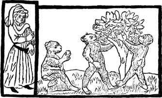
The volume described by Camus contains three different works; and
although Pfister’s name, with the date 1462, appears in only one of
them, the “Four Histories,” yet, as the type is the same in all, there
can be no doubt of the other two being printed by the same person and
about the same period. The following particulars respecting its contents
are derived from the “Notice” of Camus. It is a small folio consisting
altogether of a hundred and one leaves of paper of good quality,
moderately thick and white, and in which the water-mark is an ox’s head.
The text is printed in a large type, called missal-type; and though the
characters are larger, and there is a trifling variation in three or
four of the capitals, yet they evidently appear to have been copied from
those of the Mazarine Bible.
The first work is that which Heineken calls “une Allégorie sur la
Mort;”IV.13 but this title does not give a just idea of its
contents. It is in fact a collection of accusations preferred against
Death, with his answers to them. The object is to show that such
complaints are unavailing, and that, instead of making them, people
ought rather to employ themselves in endeavouring to live well. In this
tract, which
172
consists of twenty-four leaves, there are five wood-cuts, each occupying
an entire page. The first represents Death seated on a throne. Before
him there is a man with a child, who appears to accuse Death of having
deprived him of his wife, who is seen on a tomb wrapped in a
winding-sheet.—In the second cut, Death is also seen seated on a
throne, with the same person apparently complaining against him, while a
number of persons appear approaching sad and slow, to lay down the
ensigns of their dignity at his feet.—In the third cut there are
two figures of Death; one on foot mows down youths and maidens with a
scythe, while another, mounted, is seen chasing a number of figures on
horseback, at whom he at the same time discharges his arrows.—The
fourth cut consists of two parts, the one above the other. In the upper
part, Death appears seated on a throne, with a person before him in the
act of complaining, as in the first and second cuts. In the lower part,
to the left of the cut, is seen a convent, at the gate of which there
are two persons in religious habits; to the right a garden is
represented, in which are perceived a tree laden with fruit,
a woman crowning an infant, and another woman conversing with a
young man. In the space between the convent and the garden certain signs
are engraved, which Camus thinks are intended to represent various
branches of learning and science,—none of which can afford
protection against death,—as they are treated of in the chapter
which precedes the cut. In the fifth cut, Death and the Complainant are
seen before Christ, who is seated on a throne with an angel on each side
of him, under a canopy ornamented with stars. Although neither Heineken
nor Camus give specimens of those cuts, nor speak of the style in which
they are executed, it may be presumed that they are not superior either
in design or engraving to those contained in the other tracts.
The text of the work is divided into thirty-four chapters, each of
which, except the first, is preceded by a summary; and their numbers are
printed in Roman characters. The initial letter of each chapter is red,
and appears to have been formed by means of a stencil. The first
chapter, which has neither title nor numeral, commences with the
Complainant’s recital of his injuries; in the second, Death defends
himself; in the third the Complainant resumes, in the fourth Death
replies; and in this manner the work proceeds, the Complainant and Death
speaking alternately through thirty-two chapters. In the thirty-third,
God decides between the parties; and after a few common-place
reflections and observations on the readiness of people to complain on
all occasions, sentence is pronounced in these words: “The Complainant
is condemned, and Death has gained the cause. Of right, the Life of
every man is due to Death; to Earth his Body, and to Us his Soul.” In
the thirty-fourth chapter, the Complainant, perceiving that he has lost
his
173
suit, proceeds to pray to God on behalf of his deceased wife. In the
summary prefixed to the chapter the reader is informed that he is now
about to peruse a model of a prayer; and that the name of the
Complainant is expressed by the large red letters which are to be found
in the chapter. Accordingly, in the course of the chapter, six red
letters, besides the initial at the beginning, occur at the commencement
of so many different sentences. They are formed by means of a stencil,
while the letters at the commencement of other similar sentences are
printed black. Those red letters, including the initial at the beginning
of the chapter, occur in the following order, IHESANW. Whether the name
is expressed by them as they stand, or whether they are to be combined
in some other manner, Camus will not venture to decide.IV.14 From the
prayer it appears that the name of the Complainant’s deceased wife was
Margaret. In this singular composition, which in the summary is declared
to be a model, the author, not forgetting the court language of his
native country, calls the Almighty “the Elector who determines the
choice of all Electors,” “Hoffmeister” of the court of Heaven, and
“Herzog” of the Heavenly host. The text is in the German language, such
as was spoken and written in the fifteenth century.
The German words “Hoffmeister” and “Herzog” appear
extremely ridiculous in Camus’s French translation,—“le
Maître-d’hôtel de la cour céleste,” and “le Grand-duc de l’armée
céleste.” But this is clothing ancient and dignified German in modern
French frippery. The word “Hoffmeister”—literally, “court-master
or governor”—is used in modern German in nearly the same sense as
the English word “steward;” and the governor or tutor of a young prince
or nobleman is called by the same name. The word “Herzog”—the
“Grand-duc” of Camus—in its original signification means the
leader of a host or army. It is a German title of honour which defines
its original meaning, and is in modern language synonymous with the
English title “Duke.” The ancient German “Herzog” was a leader of hosts;
the modern French “Grand-duc” is a clean-shaved gentleman in a
court-dress, redolent of eau-de-Cologne, and bedizened with stars and
strings. The two words are characteristic of the two languages.
The second work in the volume is the Histories of Joseph, Daniel,
Judith, and Esther. It has no general frontispiece nor title; but each
separate history commences with the words: “Here begins the history
174
of . . . .” in German. Each history forms a separate
gathering, and the whole four are contained in sixty leaves, of which
two, about the middle, are blank, although there is no appearance of any
deficiency in the history. The text is accompanied with wood-cuts which
are much less than those in the “Complaints against Death,” each
occupying only the space of eleven lines in a page, which when full
contains twenty-eight. The number of the cuts is sixty-one; but there
are only fifty-five different subjects, four of them having been printed
twice, and one thrice. Camus gives a specimen of one of the cuts, which
represents the Jews of Bethuliah rejoicing and offering sacrifice on the
return of Judith after she had cut off the head of Holofernes. It is
certainly a very indifferent performance, both with respect to design
and engraving; and from Camus’s remarks on the artist’s ignorance and
want of taste it would appear that the others are no better. In one of
them Haman is decorated with the collar of an order from which a cross
is suspended; and in another Jacob is seen travelling to Egypt in a
carriageIV.15 drawn by two horses, which are harnessed according
to the manner of the fifteenth century, and driven by a postilion seated
on a saddle, and with his feet in stirrups. All the cuts in the “Four
Histories” are coarsely coloured.
It is this work which Camus, in his title-page, professes to give an
account of, although in his tract he describes the other two contained
in the same volume with no less minuteness. He especially announced a
notice of this work as “a book printed at Bamberg in 1462,” in
consequence of its being the most important in the volume; for it
contains not only the date and place, but also the printer’s name. In
the book of Fables, printed with the same types at Bamberg in 1461,
Pfister’s name does not appear.
The text of the “Four Histories” ends at the fourth line on the recto
of the sixtieth leaf; and after a blank space equal to that of a line,
thirteen lines succeed, forming the colophon, and containing the place,
date, and printer’s name. Although those lines run continuously on,
occupying the full width of the page as in prose, yet they consist of
couplets in German rhyme. The end of each verse is marked with a point,
and the first word of the succeeding one begins with a capital.
175
Camus has given a fac-simile of those lines, that he might at once
present his readers with a specimen of the type and a copy of this
colophon, so interesting to bibliographers as establishing the important
fact in the history of printing, namely, that the art was practised
beyond Mentz prior to 1462. The following copy, though not a fac-simile,
is printed line for line from Camus.
Ein ittlich mensch von herzen gert . Das er wer weiss
und wol gelert . An meister un’ schrift das nit mag
sein . So kun’ wir all auch nit latein . Darauff han
ich ein teil gedacht . Und vier historii zu samen pra-
cht . Joseph daniel un’ auch judith . Und hester auch
mit gutem sith. die vier het got in seiner hut . Als er
noch ye de’ guten thut . Dar durch wir pessern unser
lebe’ . De’ puchlein ist sein ende gebe’ . Tʒu bambergh
in der selbe’ stat . Das albrecht pfister gedrucket hat
Do ma’ zalt tausent un’ vierhu’dert iar . Im zwei und
sechzigste’ das ist war . Nit lang nach sand walpur-
gen tag . Die uns wol gnad erberben mag . Frid un’
das ewig lebe’ . Das wolle uns got alle’ gebe’ . Ame’.
The following is a translation of the above, in English couplets of
similar rhythm and measure as the original:
With heart’s desire each man doth seek
That he were wise and learned eke:
But books and teacher he doth need,
And all men cannot Latin read.
As on this subject oft I thought,
These hist’ries four I therefore wrote;
Of Joseph, Daniel, Judith too,
And Esther eke, with purpose true:
These four did God with bliss requite,
As he doth all who act upright.
That men may learn their lives to mend
This book at Bamberg here I end.
In the same city, as I’ve hinted,
It was by Albert Pfister printed,
In th’ year of grace, I tell you true,
A thousand four hundred and sixty-two;
Soon after good St. Walburg’s day,
Who well may aid us on our way,
And help us to eternal bliss:
God, of his mercy, grant us this. Amen.
The third work contained in the volume described by Camus is an
edition of the “Poor Preachers’ Bible,” with the text in German, and
176
printed on both sides. The number of the leaves is eighteen, of which
only seventeen are printed; and as there is a “history” on each page,
the total number in the work is thirty-four, each of which is
illustrated with five cuts. The subjects of those cuts and their
arrangement on the page is not precisely the same as in the earlier
Latin editions; and as in the latter there are forty “histories,” six
are wanting in the Bamberg edition, namely: 1. Christ in the
garden; 2. The soldiers alarmed at the sepulchre; 3. The Last
Judgment; 4. Hell; 5. The eternal Father receiving the
righteous into his bosom; and 6. The crowning of the Saints. As the
cuts illustrative of these subjects are the last in the Latin editions,
it is possible that the Bamberg copy described by Camus might be
defective; he, however, observes that there is no appearance of any
leaves being wanting.IV.16 In each page of the Bamberg edition the
text is in two columns below the cuts, which are arranged in the
following manner in the upper part of the page:
|
3
Christ appearing to the Apostles. |
|
1
Busts. |
2
Busts. |
4
Joseph making himself known to his brethern. |
5
The Prodigal Son’s return to his father. |
The following cuts are fac-similes of those given by Camus; and the
numbers underneath each relate to their position in the preceding
177
example of their arrangement. In No. 1 the heads are intended for
David and the author of the Book of Wisdom; in No. 2, for Isaiah
and Ezekiel.
The subject represented in the following cut, No. 3, forming the
centre piece at the top in the arrangement of the original page, is
Christ appearing to his disciples after his resurrection. The figure on
the right of Christ is intended for St. Peter, and that on his left for
St. John. I believe that in no wood-cut, ancient or modern, is
Christ represented with so uncomely an aspect and so clumsy a
figure.
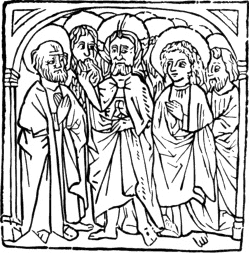
No. 3.
The subject of No. 4 is Joseph making himself known to his brethren;
from Genesis, chapter XLV.
178
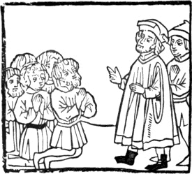
No. 4.
In No. 5 the subject represented is the Prodigal Son received by his
father; from St. Luke, chapter XV.
Camus says that the cuts given by him were engraved on wood by Duplaa
with the greatest exactitude from tracings of the originals by
Dubrena.
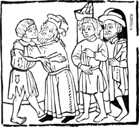
No. 5.
Supposing that all the cuts in the four works, printed by Pfister and
described in the preceding pages, were designed in a similar taste and
executed in a similar manner to those of which specimens are given, the
persons by whom they were engraved—for it is not likely that they
were
179
all engraved by one man—must have had very little knowledge of the
art. Looking merely at the manner in which they are engraved, without
reference to the wretched drawing of the figures and want of “feeling”
displayed in the general treatment of the subjects, a moderately
apt lad, at the present day, generally will cut as well by the time that
he has had a month or two’s practice. If those cuts were to be
considered as fair specimens of wood engraving in Germany in 1462, it
would be evident that the art was then declining; for none of the
specimens that I have seen of the cuts printed by Pfister can bear a
comparison with those contained in the early block-books, such as the
Apocalypse, the History of the Virgin, or the early editions of the Poor
Preachers’ Bible. To the cuts contained in the latter works they are
decidedly inferior, both with respect to design and engraving. Even the
earliest wood-cuts which are known,—for instance, the St.
Christopher, the St. Bridget, and the Annunciation, in Earl Spencer’s
collection,—are executed in a superior manner.
It would, however, be unfair to conclude that the cuts which appear
in Pfister’s works were the best that were executed at that period. On
the contrary, it is probable that they are the productions of persons
who in their own age would be esteemed only as inferior artists. As the
progress of typography was regarded with jealousy by the early wood
engravers and block printers, who were apprehensive that it would ruin
their trade, and as previous to the establishment of printing they were
already formed into companies or fellowships, which were extremely
sensitive on the subject of their exclusive rights, it is not unlikely
that the earliest type-printers who adorned their books with wood-cuts
would be obliged to have them executed by a person who was not
professionally a wood engraver. It is only upon this supposition that we
can account for the fact of the wood-cuts in the earliest books printed
with type being so very inferior to those in the earliest block-books.
This supposition is corroborated by the account which we have of the
proceedings of the wood engravers of Augsburg shortly after
type-printing was first established in that city. In 1471 they opposed
Gunther Zainer’sIV.17 admission to the privileges of a burgess, and
endeavoured to prevent him printing wood engravings in his books.
180
Melchior Stamham, however, abbot of St. Ulric and Afra, a warm
promoter of typography, interested himself on behalf of Zainer, and
obtained an order from the magistracy that he and John
Schussler—another printer whom the wood engravers had also
objected to—should be allowed to follow without interruption their
art of printing. They were, however, forbid to print initial letters
from wood-blocks or to insert wood-cuts in their books, as this would be
an infringement on the privileges of the fellowship of wood engravers.
Subsequently the wood engravers came to an understanding with Zainer,
and agreed that he should print as many initial letters and wood-cuts as
he pleased, provided that they engraved them.IV.18 Whether Schussler
came to the same agreement or not is uncertain, as there is no book
known to be printed by him of a later date than 1472. It is probable
that he is the person,—named John Schüssler in the
memorandum printed by Zapf,—of whom Melchior de Stamham in that
year bought five presses for the printing-office which he established in
his convent of St. Ulric and St. Afra. To John Bämler, who at the same
time carried on the business of a printer at Augsburg, no objection
appears to have been made. As he was originally a “calligraphus” or
ornamental writer, it is probable that he was a member of the wood
engravers’ guild, and thus entitled to engrave and print his own works
without interruption.
As it is probable that the wood-cuts which appear in books printed
within the first thirty years from the establishment of typography at
Mentz were intended to be coloured, this may in some degree account for
the coarseness with which they are engraved; but as the wood-cuts in the
earlier block-books were also intended to be coloured in a similar
manner, the inferiority of the former can only be accounted for by
supposing that the best wood engravers declined to assist in promoting
what they would consider to be a rival art, and that the earlier
printers would generally be obliged to have their cuts engraved by
persons connected with their own establishments, and who had not by a
regular course of apprenticeship acquired a knowledge of the art. About
seventy or eighty years ago, and until a more recent period, many
country printers in England used themselves to engrave such rude
wood-cuts as they might occasionally want. A most extensive
assortment of such wood-cuts belonged to the printing-office of the late
Mr. George Angus of Newcastle-upon-Tyne, who used them as head-pieces
and general illustrations to ballads and chap-books. A considerable
number of them were cut with a penknife, on pear-tree wood, by an
apprentice named Randell, who died about forty years ago.
181
Persons who are fond of a “rough harvest” of such modern-antiques are
referred to the “Historical Delights,” the “History of Ripon,” and other
works published by Thomas Gent at York about 1733.
Notwithstanding the rudeness with which the cuts are engraved in the
four works printed by Pfister, yet from their number a considerable
portion of time must have been occupied in their execution. In the “Four
Histories” there are sixty-one cuts, which have been printed from
fifty-five blocks. In the “Fables” there are one hundred and one cuts;
in the “Complaints against Death,” five; and in the “Poor Preachers’
Bible,” one hundred and seventy, reckoning each subject separately.
Supposing each cut in the three last works was printed from a
separate block, the total number of blocks required for the four
would be three hundred and thirty-one.IV.19 Supposing that each cut on
an average contained as much work as that which is numbered 4 in the
preceding specimens—Joseph making himself known to his
brethren—and supposing that the artist drew the subjects himself,
the execution of those three hundred and thirty-one cuts would occupy
one person for about two years and a half, allowing him to work three
hundred days in each year. It is true that a modern wood engraver might
finish more than three of such cuts in a week, yet I question if any one
of the profession would complete the whole number, with his own hands,
in less time than I have specified.
From the similarity between Pfister’s types and those with which a
Bible without place or date is printed, several bibliographers have
ascribed the latter work to his press. This Bible, which in the Royal
Library at Paris is bound in three volumes folio, is the rarest of all
editions of the Scriptures printed in Latin. Schelhorn, who wrote a
dissertation on this edition, endeavoured to show that it was the first
of the Bibles printed at Mentz, and that it was partly printed by
Gutemberg and Faust previous to their separation, and finished by Faust
and Scheffer in 1456.IV.20 Lichtenberger, without expressly assenting
to Schelhorn’s opinion, is inclined to think that it was printed at
Mentz, and by Gutemberg. The reasons which he assigns, however, are not
such as are likely to gain assent without a previous willingness to
believe. He admits that Pfister’s types are similar to those of the
Bible, though he says that the former are somewhat ruder.
182
Camus considers that the tracts unquestionably printed by Pfister
throw considerable light on the question as to whom this Bible is to be
ascribed. There are two specimens of this Bible, the one given by Masch
in his Bibliotheca Sacra, and the other by Schelhorn, in a dissertation
prefixed to Quirini’s account of the principal works printed at Rome.
Camus, on comparing these specimens with the text of Pfister’s tracts,
immediately perceived the most perfect resemblance between the
characters; and on applying a tracing of the last thirteen lines of the
“Four Histories” to the corresponding letters in Schelhorn’s specimen,
he found that the characters exactly corresponded. This perfect identity
induced him to believe that the Bible described by Schelhorn was printed
with Pfister’s types. A correspondent in Meusel’s Magazine, No.
VII. 1794, had previously advanced the same opinion; and he moreover
thought that the Bible had been printed previous to the Fables dated
1461, because the characters of the Bible are cleaner, and appear as if
they had been impressed from newer types than those of the Fables.IV.21 In support of this opinion an extract is given, in
the same magazine, from a curious manuscript of the date of 1459, and
preserved in the library of Cracow. This manuscript is a kind of
dictionary of arts and sciences, composed by Paul of Prague, doctor of
medicine and philosophy, who, in his definition of the word
“Libripagus,” gives a curious piece of information to the following
effect. The barbarous Latin of the original passage, to which I shall
have occasion to refer, will be found in the subjoined note.IV.22 “He
is an artist who dexterously cuts figures, letters, and whatever he
pleases on plates of copper, of iron, of solid blocks of wood, and other
materials, that he may print upon paper, on a wall, or on a clean board.
He cuts whatever he pleases; and he proceeds in this manner with respect
to pictures. In my time somebody of Bamberg cut the entire Bible upon
plates; in four weeks he impressed the whole Bible, thus sculptured,
upon thin parchment.”
Although I am of opinion that the weight of evidence is in favour of
Pfister being the printer of the Bible in question, yet I cannot think
that the arguments which have been adduced in his favour derive any
additional support from this passage. The writer, like many other
dictionary makers, both in ancient and modern times, has found it a more
difficult matter to give a clear account of a thing than to find
the
183
synonym of a word. But, notwithstanding his confused account,
I think that I can perceive in it the “disjecta membra” of an
ancient Formschneider and a Briefmaler, but no indication of a
typographer.
In a jargon worthy of the “Epistolæ obscurorum virorum” he describes
an artist, or rather an artizan, “sculpens subtiliter in laminibusIV.23 [laminis] æreis, ferreis, ac ligneis solidi ligni,
atque aliis, imagines, scripturam et omne quodlibet.” In this passage
the business of the “Formschneider” may be clearly enough distinguished:
he cuts figures and animals in plates of copper and iron;—but not
in the manner of a modern copper-plate engraver; but in the manner in
which a stenciller pierces his patterns. That this is the true meaning
of the writer is evident from the context, wherein he informs us of the
artist’s object in cutting such letters and figures, namely, “ut prius
imprimat papyro aut parieti aut asseri mundo,”—that he may print
upon paper, on a wall, or on a clean board. This is evidently
descriptive of the practice of stencilling, and proves, if the
manuscript be authentic, that the old “Briefmalers” were accustomed to
“slapdash” walls as well as to engrave and colour cards. In the
distinction which is made of the “laminibus ligneis ligni
solidi,” it is probable that the writer meant to specify the
difference between cutting out letters and figures on thin plates of
metal, and cutting upon blocks of solid wood. When he speaks of a
Bible being cut, at Bamberg, “super lamellas,” he most likely means a
“Poor Preachers’ Bible,” engraved on blocks of wood. An impression of a
hundred or more copies of such a work might easily enough be taken in a
month when the blocks were all ready engraved; but we cannot suppose
that the Bible ascribed to Pfister could be worked off in so short a
time. This Bible consists of eight hundred and seventy leaves; and to
print an edition of three hundred copies at the rate of three hundred
sheets a day would require four hundred and fifty days. About three
hundred copies of each work appears to have been the usual number which
Sweinheim and Pannartz and Ulric Hahn printed, on the establishment of
the art in Italy; and Philip de Lignamine in his chronicle mentions,
under the year 1458, that Gutemberg and Faust, at Mentz, and Mentelin at
Strasburg, printed three hundred sheets in a day.IV.24
Of Pfister nothing more is positively known than what the tracts
printed by him afford; namely, that he dwelt at Bamberg, and exercised
the business of a printer there in 1461 and 1462. He might indeed print
there both before and after those years, but of this we have no direct
184
evidence. From 1462 to 1481 no book is known to have been printed at
Bamberg. In the latter year, a press was established there by John
Sensenschmidt of Egra, who had previously, that is from 1470, printed
several works at Nuremberg.
Panzer, alluding to Pfister as the printer only of the Fables and of
the tracts contained in the volume described by Camus, says that he can
scarcely believe that he had a fixed residence at Bamberg; and that
those tracts most likely proceeded from the press of a travelling
printer.IV.25 Several of the early printers, who commenced on
their own account, on the dispersion of Faust and Scheffer’s workmen in
1462, were accustomed to travel with their small stock of materials from
one place to another; sometimes finding employment in a monastery, and
sometimes taking up their temporary abode in a small town; removing to
another as soon as public curiosity was satisfied, and the demand for
the productions of their press began to decline. As they seldom put
their names, or that of the place, to the works which they printed, it
is extremely difficult to decide on the locality or the date of many old
books printed in Germany. It is very likely that they were their own
letter-founders, and that they themselves engraved such wood-cuts as
they might require. As their object was to gain money, it is not
unlikely that they might occasionally sell a portion of their types to
each other;IV.26 or to a novice who wished to begin the business,
or to a learned abbot who might be desirous of establishing an amateur
press within the precinct of his monastery, where copies of the Facetiæ
of Poggius might be multiplied as well as the works of St. Augustine.
Although it has been asserted the monks regarded with jealousy the
progress of printing, as if it were likely to make knowledge too cheap,
and to interfere with a part of their business as transcribers of books,
such does not appear to have been the fact. In every country in Europe
we find them to have been the first to encourage and promote the new
art; and the annals of typography most clearly show that the greater
part of the books printed within the first thirty years from the time of
Gutemberg and Faust’s partnership were chiefly for the use of the monks
and the secular clergy.
From 1462 to 1467 there appears to have been no book printed
containing wood-cuts. In the latter year Ulric Hahn, a German,
printed at Rome a book entitled “Meditationes Johannis de
Turrecremata,”IV.27 which
185
contains wood-cuts engraved in simple outline in a coarse manner. The
work is in folio, and consists of thirty-four leaves of stout paper, on
which the water-mark is a hunter’s horn. The number of cuts is also
thirty-four; and the following—the creation of animals—is a
reduced copy of the first.
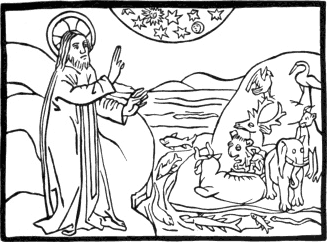
The remainder of the cuts are executed in a similar style; and though
designed with more spirit than those contained in Pfister’s tracts, yet
it can scarcely be said that they are better engraved. The following is
an enumeration of the subjects. 1. The Creation, as above
represented. 2. The Almighty speaking to Adam. 3. Eve taking
the apple. (From No. 3 the rest of the cuts are illustrative of the
New Testament or of Ecclesiastical History.) 4. The Annunciation.
5. The Nativity. 6. Circumcision of Christ. 7. Adoration
of the Magi. 8. Simeon’s Benediction. 9. The Flight into
Egypt. 10. Christ disputing with the Doctors in the Temple.
11. Christ baptized. 12. The Temptation in the Wilderness.
13. The keys given to Peter. 14. The Transfiguration.
15. Christ washing the Apostles’ feet. 16. The Last Supper.
17. Christ betrayed by Judas. 18. Christ led before the High
Priest. 19. The Crucifixion. 20. Mater Dolorosa. 21. The
Descent into Hell. 22. The Resurrection. 23. Christ appearing
to his Disciples. 24. The Ascension. 25. The feast of
Pentecost 26. The Host borne by a bishop. 27. The mystery of
the Trinity; Abraham sees three and adores one. 28. St. Dominic
extended like the “Stam-Herr” or first ancestor in a pedigree,
and sending forth
186
numerous branches as Popes, Cardinals, and Saints. 29. Christ
appearing to St. Sixtus. 30. The Assumption of the Virgin.
31. Christ seated amidst a choir of Angels. 32. Christ seated
at the Virgin’s right hand in the assembly of Saints. 33. The
Office of Mass for the Dead. 34. The Last Judgment.
Zani says that those cuts were engraved by an Italian artist, but
beyond his assertion there is no authority for the fact. It is most
likely that they were cut by one of Hahn’s workmen, who could
occasionally “turn his hand” to wood-engraving and type-founding, as
well as compose and work at press; and it is most probable that Hahn’s
workmen when he first established a press in Rome were Germans, and not
Italians.
The second book printed in Italy with wood-cuts is the “Editio
Princeps” of the treatise of R. Valturius de Re Militari, which
appeared at Verona from the press of “Johannes de Verona,” son of
Nicholas the surgeon, and master of the art of printing.IV.28 This work
is dedicated by the author to Sigismund Malatesta, lord of Rimini, who
is styled in pompous phrase, “Splendidissimum Arminensium Regem ac
Imperatorem semper invictum.” The work, however, must have been written
several years before it was printed, for Baluze transcribed from a MS.
dated 1463 a letter written in the name of Malatesta, and sent by the
author with a copy of his work to the Sultan Mahomet II. The bearer of
this letter was the painter Matteo Pasti, a friend of the author,
who visited Constantinople at the Sultan’s request in order that he
might paint his portrait. It is said that the cuts in this work were
designed by Pasti; and it is very probable that he might make the
drawings in Malatesta’s own copy, from which it is likely that the book
was printed. As Valturius has mentioned Pasti as being eminently skilful
in the arts of Painting, Sculpture, and Engraving,IV.29
Maffei has conjectured,—and Mr. Ottley adds, “with some appearance
of probability,”—that the cuts in question were executed by his
hand. If such were the fact, it only could be regretted that an artist
so eminent should have mis-spent his time in a manner so unworthy of his
reputation; for, allowing that a considerable degree of talent is
displayed in many of the designs, there is nothing in the engraving, as
they are mere outlines, but what might be cut by a novice. There is not,
however, the slightest reasonable ground to suppose that those
engravings were cut by Matteo Pasti, for I believe that he died before
printing was introduced into Italy; and it surely would be
187
presuming beyond the verge of probability to assert that they might be
engraved in anticipation of the art being introduced, and of the book
being printed at some time or other, when the blocks would be all ready
engraved, in a simple style of art indeed, but with a master’s hand.
A master-sculptor’s hand, however, is not very easily distinguished
in the mere rough-dressing of a block of sandstone, which any country
mason’s apprentice might do as well. It is very questionable if Matteo
Pasti was an engraver in the present sense of the word; the engraving
meant by Valturius was probably that of gold and silver vessels and
ornaments; but not the engraving of plates of copper or other metal for
the purpose of being printed.
Several of those cuts occupy an entire folio page, though the greater
number are of smaller size. They chiefly represent warlike engines,
which display considerable mechanical skill on the part of the
contriver; modes of attack and defence both by land and water, with
various contrivances for passing a river which is not fordable, by means
of rafts, inflated bladders, and floating bridges. In some of them
inventions may be noticed which are generally ascribed to a later
period: such as a boat with paddle-wheels, which are put in motion by a
kind of crank; a gun with a stock, fired from the shoulder; and a
bomb-shell. It has frequently been asserted that hand-guns were first
introduced about the beginning of the sixteenth century, yet the figure
of one in the work of Valturius makes it evident that they were known
some time before. It is also likely that the drawing was made and the
description written at least ten years before the book was printed. It
has also been generally asserted that bomb-shells were first used by
Charles VIII. of France when besieging Naples in 1495. Valturius,
however, in treating of cannon, ascribes the invention to Malatesta.IV.30 Gibbon, in chapter lxviii. of his History of the
Decline and Fall of the Roman Empire, notices this cut of a bomb-shell.
His reference is to the second edition of the work, in Italian, printed
also at Verona by Bonin de Bononis in 1483, with the same cuts as the
first edition in Latin.IV.31 The two following cuts are fac-similes of
the bomb-shell and the hand-gun, as represented in the edition of 1472.
The figure armed with the gun,—a portion of a
188
large cut,—is firing from a kind of floating battery; and in the
original two figures armed with similar weapons are stationed
immediately above him.
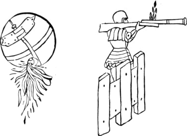
The following fac-simile of a cut representing a man shooting with a
cross-bow is the best in the book. The drawing of the figure is good,
and the attitude graceful and natural. The figure, indeed, is not only
the best in the work of Valturius, but is one of the best, so far as
respects the drawing, that is to be met with in any book printed in the
fifteenth century.
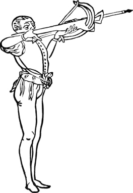
The practice of introducing wood-cuts into printed books seems to
have been first generally adopted at Augsburg, where Gunther Zainer, in
1471, printed a German translation of the “Legenda Sanctorum” with
figures of the saints coarsely engraved on wood. This, I believe,
is the first book, after Pfister’s tracts, printed in Germany with
wood-cuts and containing a date. In 1472 he printed a second volume of
the same work, and an edition of the book entitled “Belial,”IV.32 both
containing wood-cuts. Several other works printed by him between 1471
and 1475 are illustrated in a similar manner. Zainer’s example was
followed at Augsburg by his contemporaries John Bämler and John
Schussler;
189
and by them, and Anthony Sorg, who first began to print there about
1475, more books with wood-cuts were printed in that city previous to
1480 than at any other place within the same period. In 1477 the first
German Bible with wood-cuts was printed by Sorg, who printed another
edition with the same cuts and initial letters in 1480. In 1483 he
printed an account of the Council of Constance held in 1431, with
upwards of a thousand wood-cuts of figures and of the arms of the
principal persons both lay and spiritual who attended the council. Upon
this work Gebhard, in his Genealogical History of the Heritable States
of the German Empire, makes the following observations:—“The first
printed collection of arms is that of 1483 in the History of the Council
of Constance written by Ulrich Reichenthal. To this council we are
indebted accidentally for the collection. From the thirteenth century it
was customary to hang up the shields of noble and honourable persons
deceased in churches; and subsequently the practice was introduced of
painting them upon the walls, or of placing them in the windows in
stained glass. A similar custom prevailed at the Council of
Constance; for every person of consideration who attended
190
had his arms painted on the wall in front of his chamber; and thus
Reichenthal, who caused those arms to be copied and engraved on wood,
was enabled to give in his history the first general collection of
coat-armour which had appeared; as eminent persons from all the Catholic
states of Europe attended this council.”IV.33
The practice of introducing wood-cuts became in a few years general
throughout Germany. In 1473, John Zainer of Reutlingen, who is said to
have been the brother of Gunther, printed an edition of Boccacio’s work
“De mulieribus claris,” with wood-cuts, at Ulm. In 1474 the first
edition of Werner Rolewinck de Laer’s chronicle, entitled “Fasciculus
Temporum,” was printed with wood-cuts by Arnold Ther-Hoernen at Cologne;
and in 1476 an edition of the same work, also with wood-cuts, was
printed at Louvain by John Veldener, who previously had been a printer
at Cologne. In another edition of the same work printed by Veldener at
Utrecht in 1480, the first page is surrounded with a border of foliage
and flowers cut on wood; and another page, about the middle of the
volume, is ornamented in a similar manner. These are the earliest
instances of ornamental borders from wood-blocks which I have observed.
About the beginning of the sixteenth century title-pages surrounded with
ornamental borders are frequent. From the name of those borders,
Rahmen, the German wood engravers of that period are sometimes
called Rahmenschneiders. Prosper Marchand, in his “Dictionnaire
Historique,” tom. ii. p. 156, has stated that Erhard Ratdolt,
a native of Augsburg, who began to print at Venice about 1475, was
the first printer who introduced flowered initial letters, and
vignettes—meaning by the latter term wood-cuts; but his
information is scarcely correct. Wood-cuts—without reference to
Pfister’s tracts, which were not known when Marchand wrote—were
introduced at Augsburg six years before Ratdolt and his partnersIV.34
printed at Venice in 1476 the “Calendarium Joannis Regiomontani,” the
work to which Marchand alludes. It may be true that he introduced a new
kind of initial letters ornamented with flowers in this work, but much
more beautiful initial letters had appeared long before in the Psalter,
in the “Durandi Rationale,” and the “Donatus” printed by Faust and
Scheffer. The first person who mentions Ratdolt as the inventor of
“florentes litteræ,” so named from the flowers with which they are
intermixed, is Maittaire, in his Annales Typographici, tom. i. part
i. p. 53.
191
In 1483 Veldener,IV.35 as has been previously observed at page
106, printed at Culemburg an edition in small quarto of the Speculum
Salvationis, with the same blocks as had been used in the earlier folio
editions, which are so confidently ascribed to Lawrence Coster. In
Veldener’s edition each of the large blocks, consisting of two
compartments, is sawn in two in order to adapt them to a smaller page.
A German translation of the Speculum, with wood-cuts, was printed
at Basle, in folio, in 1476; and Jansen says that the first book printed
in France with wood-cuts was an edition of the Speculum, at Lyons, in
1478; and that the second was a translation of the book named “Belial,”
printed at the same place in 1482.
The first printed book in the English language that contains
wood-cuts is the second edition of Caxton’s “Game and Playe of the
Chesse,” a small folio, without date or place, but generally
supposed to have been printed about 1476.IV.36 The first edition
of the same work, without cuts, was printed in 1474. On the blank leaves
at the end of a copy of the first edition in the King’s Library, at the
British Museum, there is written in a contemporary hand a list of the
bannerets and knightsIV.37 made at the battle of “Stooke by syde
newerke apon trent the xvi day of june the iide yer of harry
the vii.” that is, in 1487. In this battle Martin Swart was killed. He
commanded the Flemings, who were sent by the Duchess of Burgundy to
assist Lambert Simnel. It was at the request of the duchess, who was
Edward the Fourth’s sister, that Caxton translated the “Recuyell of the
Historyes of Troye,” the first book printed in the English language, and
which appeared at Cologne in 1471 or 1472.
In Dr. Dibdin’s edition of Ames’s Typographical Antiquities there is
a “Description of the Pieces and Pawns” in the second edition of
Caxton’s Chess; which description is said to be illustrated with
facsimile
192
wood-cuts. There are indeed fac-similes of some of the figures given,
but not of the wood-cuts generally; for in almost every cut given by Dr.
Dibdin the back-ground of the original is omitted. In the description of
the first fac-simile there is also an error: it is said to be “the
first cut in the work,” while in fact it is the second.
The following I believe to be a correct list of these first fruits of
English wood-engraving.
1. An executioner with an axe cutting to pieces, on a block, the
limbs of a man. On the head, which is lying on the ground, there is a
crown. Birds are seen seizing and flying away with portions of the
limbs. There are buildings in the distance, and three figures, one of
whom is a king with a crown and sceptre, appear looking on. 2. A
figure sitting at a table, with a chess-board before him, and holding
one of the chess-men in his hand. This is the cut which Dr. Dibdin says
is the first in the book. 3. A king and another person playing at
chess. 4. The king at chess, seated on a throne. 5. The king
and queen. 6. The “alphyns,” now called “bishops” in the game of
chess, “in the maner of judges sittyng.” 7. The knight. 8. The
“rook,” or castle, a figure on horseback wearing a hood and holding
a staff in his hand. From No. 9 to No. 15 inclusive, the pawns
are thus represented. 9. Labourers and workmen, the principal
figure representing the first pawn, with a spade in his right hand and a
cart-whip in his left. 10. The second pawn, a smith with his
buttriss in the string of his apron, and a hammer in his right hand.
11. The third pawn, represented as a clerk, that is a writer
or transcriber, in the same sense as Peter Scheffer and Ulric Zell are
styled clerici, with his case of writing materials at his girdle,
a pair of shears in one hand, and a large knife in the other. The
knife, which has a large curved blade, appears more fit for a butcher’s
chopper than to make or mend pens. 12. The fourth pawn, a man
with a pair of scales, and having a purse at his girdle, representing
“marchauntes or chaungers.” 13. The fifth pawn, a figure
seated on a chair, having in his right hand a book, and in his left a
sort of casket or box of ointments, representing a physician, spicer, or
apothecary. 14. The sixth pawn, an innkeeper, receiving a guest.
15. The seventh pawn, a figure with a yard measure in his
right hand, a bunch of keys in his left, and an open purse at his
girdle, representing “customers and tolle gaderers.” 16. The eighth
pawn, a figure with a sort of badge on his breast near to his right
shoulder, after the manner of a nobleman’s retainer, and holding a pair
of dice in his left hand, representing dice-players, messengers, and
“currours,” that is “couriers.” In old authors the numerous idle
retainers of the nobility are frequently represented as gamblers,
swash-bucklers, and tavern-haunters.
Although there are twenty-four impressions in the volume, yet there
are only sixteen subjects, as described above; the remaining eight being
193
repetitions of the cuts numbered 4, 5, 6, 7, 8 and 10, with two
impressions of the cut No. 2, besides that towards the
commencement.
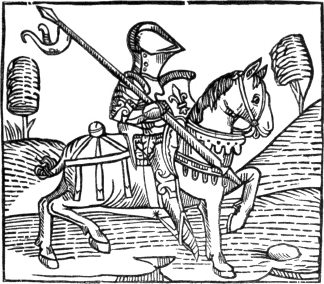
The above cut is a reduced copy of the knight, No. 7; and his
character is thus described: “The knyght ought to be maad al armed upon
an hors in suche wise that he have an helme on his heed and a spere in
his right hond, and coverid with his shelde, a swerde and a mace on
his left syde . clad with an halberke and plates tofore his breste .
legge harnoys on his legges . spores on his heelis, on hys handes hys
gauntelettes . hys hors wel broken and taught and apte to bataylle and
coveryd with hys armes. When the Knyghtes been maad they ben bayned or
bathed . That is the signe that they sholde lede a newe lyf and newe
maners . also they wake alle the nyght in prayers and orisons unto god
that he wil geve hem grace that they may gete that thyng that they may
not gete by nature. The kyng or prynce gyrdeth a boute them a swerde in
signe that they shold abyde and kepen hym of whom they taken their
dispences and dignyte.”
The following cut of the sixth or bishop’s pawn, No. 14, “whiche is
lykened to taverners and vytayllers,” is thus described in Caxton’s own
words: “The sixte pawn whiche stondeth before the alphyn on the lyfte
syde is made in this forme . ffor hit is a man that hath the right hond
stretched out for to calle men, and holdeth in his left honde a loof of
breed and a cuppe of wyn . and on his gurdel hangyng a bondel of keyes,
and this resemblith the taverners hostelers and sellars of vytayl . and
194
these ought properly to be sette to fore the alphyn as to fore a juge,
for there sourdeth oft tymes amonge hem contencion noyse and stryf,
which behoveth to be determyned and trayted by the alphyn which is juge
of the kynge.”
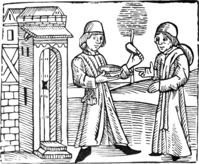
The next book containing wood-cuts printed by Caxton is the “Mirrour
of the World, or thymage of the same,” as he entitles it at the head of
the table of contents. It is a thin folio consisting of one hundred
leaves; and, in the Prologue, Caxton informs the reader that it
“conteyneth in all lxvii chapitres and xxvii figures, without which it
may not lightly be understāde.” He also says that he translated it from
the French at the “request, desire, coste, and dispense of the
honourable and worshipful man Hugh Bryce, alderman cytezeyn of London,”
who intended to present the same to William, Lord Hastings, chamberlain
to Edward IV, and lieutenant of the same for the town of Calais and the
marches there. On the last page he again mentions Hugh Bryce and Lord
Hastings, and says of his translation: “Whiche book I begun first to
trāslate the second day of Janyuer the yere of our lord M.cccc.lxxx. And fynysshed the viii day of Marche
the same yere, and the xxi yere of the reign of the most crysten kynge,
Kynge Edward the fourthe.”IV.38
195
The “xxvii figures” mentioned by Caxton, without which the work might
not be easily understood, are chiefly diagrams explanatory of the
principles of astronomy and dialling; but besides those twenty-seven
cuts the book contains eleven more, which may be considered as
illustrative rather than explanatory. The following is a list of those
eleven cuts in the order in which they occur. They are less than the
cuts in the “Game of Chess;” the most of them not exceeding three inches
and a half by three.IV.39
1. A school-master or “doctor,” gowned, and seated on a high-backed
chair, teaching four youths who are on their knees. 2. A person
seated on a low-backed chair, holding in his hand a kind of globe;
astronomical instruments on a table before him. 3. Christ, or the
Godhead, holding in his hand a ball and cross. 4. The creation of
Eve, who appears coming out of Adam’s side.—The next cuts are
figurative of the “seven arts liberal.” 5. Grammar. A teacher
with a large birch-rod seated on a chair, his four pupils before him on
their knees. 6. Logic. Figure bare-headed seated on a chair, and
having before him a book on a kind of reading-stand, which he appears
expounding to his pupils who are kneeling. 7. Rhetoric. An upright
figure in a gown, to whom another, kneeling, presents a paper, from
which a seal is seen depending. 8. Arithmetic. A figure
seated, and having before him a tablet inscribed with numerical
characters. 9. Geometry. A figure standing, with a pair of
compasses in his hand, with which he seems to be drawing diagrams on a
table. 10. Music. A female figure with a sheet of music in her
hand, singing, and a man playing on the English flute.
11. Astronomy. Figure with a kind of quadrant in his hand, who
seems to be taking an observation.—An idea may be formed of the
manner in which those cuts are engraved from the fac-simile on the next
page of No. 10, “Music.”
There are wood-cuts in the Golden Legend, 1483; the Fables of Esop,
1484; Chaucer’s Canterbury Tales, and other books printed by Caxton; but
it is unnecessary either to enumerate them or to give specimens, as they
are all executed in the same rude manner as the cuts in the Book of
Chess and the Mirror of the World. In the Book of Hunting and Hawking
printed at St. Albans, 1486, there are rude wood-cuts; as also in a
second and enlarged edition of the same book printed by Wynkyn de Worde,
Caxton’s successor, at Westminster in 1496. The most considerable
wood-cut printed in England previous to 1500 is, so far as regards the
design, a representation of the Crucifixion at the end of the
Golden Legend printed by Wynkyn de Worde in
196
1493.IV.40 In this cut, neither of the thieves on each side
of Christ appears to be nailed to the cross. The arms of the thief on
the right of Christ hang behind, and are bound to the transverse piece
of the cross, which passes underneath his shoulders. His feet are
neither bound nor nailed to the cross. The feet of the thief to the left
of Christ are tied to the upright piece of the cross, to which his hands
are also bound, his shoulders resting upon the top, and his face turned
upward towards the sky. To the left is seen the Virgin,—who has
fallen down,—supported by St. John. In the back-ground to the
right, the artist, like several others of that period, has represented
Christ bearing his cross.
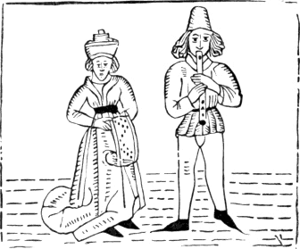
Dr. Dibdin, at page 8 of the “Disquisition on the Early State of
Engraving and Ornamental Printing in Great Britain,” prefixed to Ames’s
and Herbert’s Typographical Antiquities, makes the following
observations on this cut: “The ‘Crucifixion’ at the end of the ‘Golden
Legend’ of 1493, which Wynkyn de Worde has so frequently subjoined to
his religious pieces, is, unquestionably, the effort of some ingenious
foreign artist. It is not very improbable that Rubens had a recollection
of one of the thieves, twisted, from convulsive agony, round the top of
the cross, when he executed his celebrated picture of the same
subject.”IV.41
197
In De Worde’s cut, however, it is to be remarked that the contorted
attitude of both the thieves results rather from the manner in which
they are bound to the cross, than from the convulsions of agony.
At page 7 of the same Disquisition it is said that the figures in the
Game of Chess, the Mirror of the World, and other works printed by
Caxton “are, in all probability, not the genuine productions of this
country; and may be traced to books of an earlier date printed abroad,
from which they were often borrowed without acknowledgment or the least
regard to the work in which they again appeared. Caxton, however, has
judiciously taken one of the prints from the ‘Biblia Pauperum’ to
introduce in his ‘Life of Christ.’ The cuts for his second edition of
‘Chaucer’s Canterbury Tales’ may perhaps safely be considered as the
genuine invention and execution of a British artist.”
Although I am well aware that the printers of the fifteenth century
were accustomed to copy without acknowledgment the cuts which appeared
in each other’s books, and though I think it likely that Caxton might
occasionally resort to the same practice, yet I am decidedly of opinion
that the cuts in the “Game of Chess” and the “Mirror of the World” were
designed and engraved in this country. Caxton’s Game of Chess is
certainly the first book of the kind which appeared with wood-cuts in
any country; and I am further of opinion that in no book printed
previous to 1481 will the presumed originals of the eleven principal
cuts in the Mirror of the World be found. Before we are required to
believe that the cuts in those two books were copied from similar
designs by some foreign artist, we ought to be informed in what work
such originals are to be found. If there be any merit in a first design,
however rude, it is but just to assign it to him who first employs the
unknown artist and makes his productions known. Caxton’s claims to the
merit of “illustrating” the Game of Chess and the Mirror of the World
with wood-cuts from original designs, I conceive to be
indisputable.
Dr. Dibdin, in a long note at pages 33, 34, and 35 of the
Typographical Antiquities, gives a confused account of the earliest
editions of books on chess. He mentions as the first, a Latin
edition—supposed by Santander to be the work of Jacobus de
Cessolis—in folio, printed about the year 1473, by Ketelaer and
Leempt. In this edition, however, there are no cuts, and the date is
only conjectural. He says that two editions of the work of Jacobus de
Cessolis on the Morality of Chess, in German and Italian, with
wood-cuts, were printed, without date, in the fifteenth century, and he
adds: “Whether Caxton borrowed the
198
cuts in his second edition from those in the 8vo. German edition without
date, or from this latter Italian one, I am not able to ascertain,
having seen neither.” He seems satisfied that Caxton had borrowed
the cuts in his book of chess, though he is at a loss to discover the
party who might have them to lend. Had he even seen the two
editions which he mentions, he could not have known whether Caxton had
borrowed his cuts from them or not until he had ascertained that they
were printed previously to the English edition. There is a German
edition of Jacobus de Cessolis, in folio, with wood-cuts supposed to be
printed in 1477, at Augsburg, by Gunther Zainer, but both date and
printer’s name are conjectural. The first German edition of this work
with wood-cuts, and having a positive date, I believe to be that
printed at Strasburg by Henry Knoblochzer in 1483. Until a work on chess
shall be produced of an earlier date than that ascribed to Caxton’s, and
containing similar wood-cuts, I shall continue to believe that the
wood-cuts in the second English edition of the “Game and Playe of the
Chesse” were both designed and executed by an English artist; and I
protest against bibliographers going a-begging with wood-cuts found in
old English books, and ascribing them to foreign artists, before they
have taken the slightest pains to ascertain whether such cuts were
executed in England or not.
The wood-cuts in the Game of Chess and the Mirror of the World are
equally as good as the wood-cuts which are to be found in books printed
abroad about the same period. They are even decidedly better than those
in Anthony Sorg’s German Bible, Augsburg, 1480, or those in Veldener’s
edition of the Fasciculus Temporum, printed at Utrecht in the same
year.
It has been supposed that most of the wood-cuts which appear in books
printed by Caxton and De Worde were executed abroad; on the presumption
that there were at that period no professed wood engravers in England.
Although I am inclined to believe that within the fifteenth century
there were no persons in this country who practised wood engraving as a
distinct profession, yet it by no means follows from such an admission
that Caxton’s and De Worde’s cuts must have been engraved by foreign
artists. The manner in which they are executed is so coarse that they
might be cut by any person who could handle a graver. Looking at them
merely as specimens of wood engraving, they are not generally superior
to the practice-blocks cut by a modern wood-engraver’s apprentice within
the first month of his noviciate. I conceive that there would be no
greater difficulty in finding a person capable of engraving them than
there would be in finding the pieces of wood on which they were to be
executed. Persons who have noticed the embellishments in manuscripts,
the carving, the
199
monuments, and the stained glass in churches, executed in England about
the time of Caxton, will scarcely suppose that there were no artists in
this country capable of making the designs for those cuts. There is in
fact reason to believe that in England in the fifteenth and sixteenth
centuries the walls of apartments, more especially in taverns and
hostelries, frequently contained paintings, most probably in distemper,
of subjects both from sacred and general history. That paintings of
sacred subjects were not unusual in churches at those periods is well
known.
In most of the cuts which are to be found in books printed by Caxton,
the effect is produced by the simplest means. The outline of the figures
is coarse and hard, and the shades and folds of the draperies are
indicated by short parallel lines. Cross-hatchings occur in none of
them, though in one or two I have noticed a few angular dots picked out
of the black part of a cut in order that it might not appear like a mere
blot. The foliage of the trees is generally represented in a manner
similar to those in the background of the cut of the knight, of which a
copy is given at page 193. The oak leaves in a wood-cutIV.42 at the
commencement of the preface to the Golden Legend, 1483, are an exception
to the general style of Caxton’s foliage; and represent what they are
intended for with tolerable accuracy. Having thus noticed some of the
earliest books with wood-engravings printed in England, I shall now
resume my account of the progress of the art on the Continent.
In an edition of Ptolemy’s Cosmography, printed at Ulm in 1482 by
Leonard Holl, we have the first instance of maps engraved on wood. The
work is in folio, and the number of the maps is twenty-seven. In a
general map of the world the engraver has thus inserted his name at the
top: “Insculptum est per Johannē Schnitzer de Armssheim.”IV.43 At
the corners of this map the winds are represented by heads with
puffed-out cheeks, very indifferently engraved. The work also contains
ornamental initial letters engraved on wood. In a large one, the letter
at the beginning of the volume, the translator is represented offering
his book to Pope Paul II. who occupied the see of Rome from 1464 to
1471.
Each map occupies two folio pages, and is printed on the verso of one
page and the recto of the next, in such a manner that when the book is
open the adjacent pages seem as if printed from one block. What may be
considered as the skeleton of each map,—such as
200
indications of rivers and mountains,—is coarsely cut; but as the
names of the places are also engraved on wood, the execution of those
thirty-seven maps must have been a work of considerable labour. In 1486
another edition with the same cuts was printed at Ulm by John Regen at
the cost of Justus de Albano of Venice.
The idea of Leonard Holl’s Ptolemy was most likely suggested by an
edition of the same work printed at Rome in 1478 by Arnold Bukinck, the
successor of Conrad Sweinheim. In this edition the maps are printed from
plates of copper; and from the perfect similarity of the letters, as may
be observed in the names of places, there can be no doubt of their
having been stamped upon the plate by means of a punch in a manner
similar to that in which a bookbinder impresses the titles at the back
of a volume. It is absolutely impossible that such perfect uniformity in
the form of the letters could have been obtained, had they been
separately engraved on the plate by hand. Each single letter is as
perfectly like another of the same character,—the capital M for
instance,—as types cast by a letter-founder from the same mould.
The names of the places are all in capitals, but different sizes are
used for the names of countries and cities. The capitals at the margins
referring to the degrees of latitude are of very beautiful shape, and as
delicate as the capitals in modern hair-type.
At the back of some of the maps in the copy in the King’s Library at
the British Museum, the paper appears as if it had received, when in a
damp state, an impression from linen cloth. As this appearance of
threads crossing each other does not proceed from the texture of the
paper, but is evidently the result of pressure, I am inclined to
think that it has been occasioned by a piece of linen being placed
between the paper and the roller when the impressions were taken.
In the dedication of the work to the Pope it is stated that this
edition was prepared by Domitius Calderinus of Verona, who promised to
collate the Latin version with an ancient Greek manuscript; and that
Conrad Sweinheim, who was one of the first who introduced the art of
printing at Rome, undertook, with the assistance of “certain
mathematical men,” whom he taught, to “impress” the maps upon plates of
copper. Sweinheim, after having spent three years in preparing these
plates, died before they were finished; and Arnold Bukinck,
a learned German printer, completed the work, “that the emendations
of Calderinus,—who also died before the book was
printed,—and the results of Sweinheim’s most ingenious mechanical
contrivances might not be lost to the learned world.”IV.44
201
An edition of Ptolemy in folio, with the maps engraved on copper, was
printed at Bologna by Dominico de Lapis with the erroneous date M.CCCC.LXII. This date is certainly wrong,
for no work from the press of this printer is known of an earlier date
than 1477; and the editor of this edition, Philip Beroaldus the elder,
was only born in 1450, if not in 1453. Supposing him to have been born
in the former year, he would only be twelve years old in 1462. Raidel,
who in 1737 published a dissertation on this edition, thinks that two
numerals—XX—had
accidentally been omitted, and that the date ought to be 1482. Breitkopf
thinks that one X might be
accidentally omitted in a date and pass uncorrected, but not two. He
rather thinks that the compositor had placed an I instead of an L, and that the correct date ought to stand thus:
M CCCC L XLI—1491. I am
however of opinion that no instance of the Roman numerals, L XLI, being thus combined to express 91, can
be produced. It seems most probable that the date 1482 assigned by
Raidel is correct; although his opinion respecting the
numerals—XX—being
accidentally omitted may be wrong. It is extremely difficult to account
for the erroneous dates of many books printed previous to 1500. Several
of those dates may have been accidentally wrong set by the compositor,
and overlooked by the corrector; but others are so obvious that it is
likely they were designedly introduced. The bibliographer who should
undertake to enquire what the printers’ reasons might be for falsifying
the dates of their books, would be as likely to arrive at the truth, as
he would be in an enquiry into the reason of their sometimes adding
their name, and sometimes omitting it. The execution of the maps in the
edition of De Lapis is much inferior to that of the maps begun by
Sweinheim, and finished by Bukinck in 1478.
Bukinck’s edition of Ptolemy, 1478, is the second book which contains
impressions from copper-plates. Heineken, at page 233, refers to the
“Missale Herbipolense,” folio, 1481, as the first book printed in
Germany containing a specimen of copper-plate engraving. Dr. Dibdin,
however, in the 3rd volume of his Tour, page 306, mentions the same work
as having the date of 1479 in the prefatory admonition, and says that
the plate of a shield of arms—the only one in the volume—is
noticed by Bartsch in his “Peintre-Graveur,” vol. x. p. 57.
The printer
202
of the edition of 1481 appears from Heineken to have been George Reyser.
In the “Modus Orandi secundum chorum Herbipolensem,” folio, printed by
George Reyser, “Herbipoli,” [at Wurtzburg,] 1485, there is on folio
II. a copper-plate engraving of the
arms of Rudolph de Scherenberg, bishop of that see. This plate is also
described by Bartsch in his “Peintre-Graveur,” vol. x. p. 156.
The first book which appeared with copper-plate engravings is intitled
“Il Monte Sancto di Dio,” written by Antonio Bettini, and printed at
Florence in 1477 by Nicolo di Lorenzo della Magna. As this book is of
extreme rarity, I shall here give an account of the plates from
Mercier, who first called the attention of bibliographers to it as being
of an earlier date than the folio edition of Dante, with copper-plate
engravings, printed also by Nicolo Lorenzo in 1481. This edition of
Dante was generally supposed to be the first book containing
copper-plate engravings until Bettini’s work was described by
Mercier.
The work called “Il Monte Sancto di Dio” is in quarto, and according
to Mercier there ought to be a quire or gathering of four leaves at the
commencement, containing a summary of the work, which is divided into
three parts, with a table of the chapters. On the reverse of the last of
those four leaves is the first plate, which occupies the whole page, and
“measures nine inches and seven-eighths in height, by seven inches in
width.”IV.45 This plate represents the Holy Mountain, on the
top of which Christ is seen standing in the midst of adoring angels.
A ladder is placed against this mountain, to which it is fastened
with iron chains, and on each step is engraved the name of a virtue, for
instance, Prudence, Temperance, Fortitude, and others. A figure
clothed in a long robe, and who appears to be a monk, is seen mounting
the ladder. His eyes are directed towards a huge crucifix placed half
way up the hill to the right of the ladder, and from his mouth there
proceeds a label inscribed with these words: “Tirami doppo
ti,”—“Draw me up after thee.” Another figure is seen standing
at the foot of the mountain, looking towards the top, and uttering these
words: “Levavi oculos meos in montes,” &c. The second
plate occurs at signature IvIV.46 after the 115th chapter. It also
represents Christ in his glory, surrounded by angels. It is only four
inches and five lines high, by six inches wide, French measure. The
third plate, which is the same size as the second, occurs at signature
Pvij, and represents a view of Hell according to the description of
Dante. Those plates, which for the period are well enough designed and
executed, especially the second, were most likely engraved
203
on copper; and they seem to be by the same hand as those in the edition
of Dante of 1481, from the press of Nicolo di Lorenzo, who also printed
the work of Bettini.IV.47 A copy of “Il Monte Sancto di Dio” is
in Earl Spencer’s Library; and a description and specimens of the cuts
are given by Dr. Dibdin in the Bibliotheca Spenceriana, vol. iv.
p. 30; and by Mr. Ottley in the Inquiry into the Origin and Early
History of Engraving, vol. i. pp. 375-377.
In the execution of the maps, the copper-plate engraver possesses a
decided advantage over the engraver on wood, owing to the greater
facility and clearness with which letters can be cut in copper
than on wood. In the engraving of letters on copper, the artist
cuts the form of the letter into the plate, the character being
thus in intaglio; while in engraving on a block, the wood
surrounding has to be cut away, and the letter left in relief. On
copper, using only the graver,—for etching was not known in the
fifteenth century,—as many letters might be cut in one day as
could be cut on wood in three. Notwithstanding the disadvantage under
which the ancient wood engravers laboured in the execution of maps, they
for many years contended with the copper-plate printers for a share of
this branch of business; and the printers, at whose presses maps
engraved on wood only could be printed, were well inclined to support
the wood engravers. In a folio edition of Ptolemy, printed at Venice in
1511, by Jacobus Pentius de Leucho, the outlines of the maps, with the
indications of the mountains and rivers, are cut on wood, and the names
of the places are printed in type, of different sizes, and with red and
black ink. For instance, in the map of Britain, which is more correct
than any which had previously appeared, the word “ALBION” is printed in
large capitals, and the word “GADINI”
in small capitals, and both with red ink. The words “Curia” and
“Bremenium” are printed in small Roman characters, and with black ink.
The names of the rivers are also in small Roman, and in black ink. Such
of those maps as contain many names, are almost full of type. The double
borders surrounding them, within which the degrees of latitude are
marked, appear to have been formed of separate pieces of metal, in the
manner of wide double rules. At the head of several of the maps there
are figures of animals emblematic of the country. In the first map of
Africa there are two parrots; in the second an animal like a jackal, and
a non-descript; in the third, containing Egypt, a crocodile, and a
monstrous kind of fish like a dragon; and in the
204
fourth, two parrots. In the last, the “curious observer” will note a
specimen of decorative printing from two blocks of wood; for the beak,
wing, and tail of one of the parrots is printed in red.
In the last map,—of Loraine,—in an edition of Ptolemy, in
folio, printed at Strasburg in 1513, by John Schott, the attempt to
print in colours, in the manner of chiaro-scuro wood engravings, is
carried yet further. The hills and woods are printed green; the
indications of towns and cities, and the names of the most considerable
places, are red; while the names of the smaller places are black. For
this map, executed in three colours, green, red, and black, there would
be required two wood engravings and two forms of type, each of which
would have to be separately printed. The arms which form a border to the
map are printed in their proper heraldic colours.IV.48 The only other
specimen of armorial bearings printed in colours from wood-blocks, that
I am aware of, is Earl Spencer’s arms in the first part of Savage’s
Hints on Decorative Printing, which was published in 1818, upwards of
three hundred years after the first essay.
At a later period a new method was adopted by which the wood engraver
was spared the trouble of cutting the letters, while the printer was
enabled to obtain a perfect copy of each map by a single impression. The
mode in which this was effected was as follows. The indications of
mountains, rivers, cities, and villages were engraved on the wood as
before, and blank spaces were left for the names. Those spaces were
afterwards cut out by means of a chisel or drill, piercing quite through
the block: and the names of the places being inserted in type, the whole
constituted only one “form,” from which an impression both of the cut
and the letters could be obtained by its being passed once through the
press. Sebastian Munster’s Cosmography, folio, printed at Basle in 1554,
by Henry Petri, affords several examples of maps executed in this
manner. This may be considered as one of the last efforts of the old
wood engravers and printers to secure to themselves a share of the
business of map-engraving. Their endeavours, however, were unavailing;
for within twenty years of that date, this branch of art was almost
exclusively in the hands of the copper-plate engravers. From the date of
the maps of Ortelius, Antwerp, 1570, engraved on copper by Ægidius
Diest, maps engraved on wood are rarely to be seen. The practice of
engraving the outlines and rivers on wood, and then piercing the block
and inserting the names of the places in type has, however, lately been
revived; and where publishers are obliged either to print maps with the
type or to
205
give none at all, this mode may answer very well, more especially when
the object is to give the relative position of a few of the principal
places, rather than a crowded list of names. Most of the larger maps in
the Penny Cyclopædia are executed in this manner. The holes in the
blocks are pierced with the greatest rapidity by gouges of different
sizes acting vertically, and put in motion by machinery contrived by Mr.
Edward Cowper, to whose great mechanical skill the art of steam-printing
chiefly owes its perfection.
Having thus noticed consecutively the progress of map engraving, it
may not here be out of place to give a brief account of Breitkopf’s
experiment to print a map with separate pieces of metal in the manner of
type.IV.49 Previous to 1776 some attempts had been made by a
person named Preusch, of Carlsruhe, to print maps by a process which he
named typometric, and who published an account of his plan, printed at
the press of Haass the Younger, of Basil. In 1776 Breitkopf sent a communication
to Busching’s Journal, containing some remarks on the invention of
Preusch, and stating that he had conceived a similar plan upwards of
twenty years previously, and that he had actually set up a specimen and
printed off a few copies, which he had given to his friends. The
veracity of this account having been questioned by an illiberal critic,
Breitkopf, in 1777, prefixed to his Essay on the Printing of Maps a
specimen composed of moveable pieces of metal in the manner of types. He
expressly declares that he considered his experiment a failure; and that
he only produced his specimen—a quarto map of the country round
Leipsic—in testimony of the truth of what he had previously
asserted, and to show that two persons might, independently of each
other, conceive an idea of the same invention, although they might
differ considerably in their mode of carrying it into effect.
He was first led to think on the practicability of printing maps with
moveable pieces of metal by considering that when the letters are
omitted there remain but hills, rivers, and the indications of places;
and for these he was convinced that representations consisting of
moveable pieces of metal might be contrived. Having, however, made the
experiment, he felt satisfied that the appearance of such a map was
unpleasing to the eye, and that the invention was not likely to be
practically useful. Had it not been for the publication of Preusch, he
says that he never would have thought of mentioning his invention,
except as a mechanical experiment; and to show that the execution of
maps in such a manner was within the compass of the printer’s art.
In the specimen which he gives, rivers are represented by minute
parallel lines, which are shorter or longer as the river contracts or
206
expands; and the junction of the separate pieces may be distinctly
perceived. For hills and trees there are distinct characters
representing those objects. Towns and large villages are distinguished
by a small church, and small villages by a small circle. Roads are
indicated by dotted parallel lines. For the title of the map large
capitals are used. The name of the city of LEIPSIC is in small capitals. The names of towns and
villages are in Italic; and of woods, rivers, and hills, in Roman
type. The general appearance of the map is unpleasing to the eye.
Breitkopf has displayed his ingenuity by producing such a typographic
curiosity, and his good sense in abandoning his invention when he found
that he could not render it useful.
Mr. Ottley, at page 755 of the second volume of his Inquiry, makes
the following remarks on the subject of cross-hatching in wood
engravings:—“It appears anciently to have been the practice of
those masters who furnished designs for the wood engravers to work from,
carefully to avoid all cross-hatchings, which, it is probable, were
considered beyond the power of the Xylographist to represent. Wolgemuth
perceived that, though difficult, this was not impossible; and in the
cuts of the Nuremberg Chronicle, the execution of which, (besides
furnishing the designs,) he doubtless superintended, a successful
attempt was first made to imitate the bold hatchings of a pen-drawing,
crossing each other, as occasion prompted the designer, in various
directions: to him belongs the praise of having been the first who duly
appreciated the powers of this art.”
Although it is true that cross-hatchings are not to be found in the
earliest wood engravings, yet Mr. Ottley is wrong in assigning this
material improvement in the art to Michael Wolgemuth; for cross-hatching
is introduced in the beautiful cut forming the frontispiece to the Latin
edition of Breydenbach’s Travels, folio, first printed at Mentz, by
Erhard Reuwich, in 1486,IV.50 seven years before the Nuremberg Chronicle
appeared. The cut in the following page is a reduced but accurate copy
of Breydenbach’s frontispiece, which is not only the finest wood
engraving which had appeared up to that date, 1486, but is in point of
design and execution as superior to the best cuts in the Nuremberg
Chronicle, as the designs of Albert Durer are to the cuts in the oldest
editions of the “Poor Preachers’ Bible.”
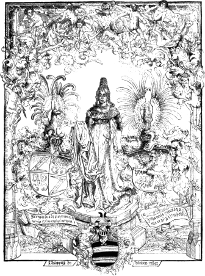
In this cut, cross-hatching may be observed in the drapery of the
female figure, in the upper part of the two shields on each side of her,
in the border at the top of the cut, and in other places. Whether the
female figure be intended as a personification of the city of Mentz, as
is
207
sometimes seen in old books of the sixteenth century, or for St.
Catherine, whose shrine on Mount Sinai was visited by Breydenbach in his
travels, I shall not pretend to determine. The arms on her right
are Breydenbach’s own; on her left are the arms of John, Count of Solms
and Lord of Mintzenberg, and at the bottom of the cut those of Philip de
Bicken, knight, who were Breydenbach’s companions to the holy sepulchre
at Jerusalem and the shrine of St. Catherine on Mount Sinai. St.
Catherine, it may be observed, was esteemed the patroness of learned
men, and her figure was frequently placed in libraries in Catholic
countries, in the same manner as the bust of Minerva in the libraries of
ancient Greece and Rome. The name of the artist by whom the frontispiece
to Breydenbach’s travels was executed is unknown; but I have no
hesitation in declaring him to be one of the best wood engravers of the
period. As this is the earliest wood-cut in which I have noticed
208
cross-hatching, I shall venture to ascribe the merit of the
invention to the unknown artist, whoever he may have been; and shall
consider the date 1486 as marking the period when a new style of wood
engraving was introduced. Wolgemuth, as associated with wood engraving,
has too long been decked out with borrowed plumes; and persons who knew
little or nothing either of the history or practice of the art, and who
are misled by writers on whose authority they rely, believe that Michael
Wolgemuth was not only one of the best wood engravers of his day, but
that he was the first who introduced a material improvement into the
practice of the art. This error becomes more firmly rooted when such
persons come to be informed that he was the master of Albert Durer, who
is generally, but erroneously, supposed to have been the best wood
engraver of his day. Albert Durer studied under Michael Wolgemuth as a
painter, and not as a wood engraver; and I consider it as extremely
questionable if either of them ever engraved a single block. There are
many evidences in Germany of Wolgemuth having been a tolerably good
painter for the age and country in which he lived; but there is not one
of his having engraved on wood. In the Nuremberg Chronicle he is
represented as having, in conjunction with William Pleydenwurf,
superintended the execution of the wood-cuts contained in that book.
Those cuts, which are frequently referred to as excellent specimens of
old wood engraving, are in fact the most tasteless and worthless things
that are to be found in any book, ancient or modern. It is a book,
however, that is easy to be obtained; and it serves as a land-mark to
superficial enquirers who are perpetually referring to it as containing
wood-cuts designed, if not engraved, by Albert Durer’s master,—and
such, they conclude, must necessarily possess a very high degree of
excellence.
Breydenbach was a canon of the cathedral church of Mentz, and he
dedicates the account of his pilgrimage to the Holy Land and visit to
Mount Sinai to Berthold, archbishop of that see. The frontispiece,
although most deserving of attention as a specimen of wood engraving, is
not the only cut in the book which is worthy of notice. Views are given,
engraved on wood, of the most remarkable places which he
visited;—and those of Venice, Corfu, Modon, and the country round
Jerusalem, which are of great length, are inserted in the book as
“folding plates.” Each of the above views is too large to have been
engraved on one block. For that of Venice, which is about five feet
long, and ten inches high, several blocks must have been required, from
each of which impressions would have to be taken singly, and afterwards
pasted together, as is at present done in such views as are too wide to
be contained on one sheet. Those views, with respect to the manner in
which they are executed, are superior to everything of the same kind
which had previously appeared. The work also contains smaller cuts
209
printed with the type, which are not generally remarkable for their
execution, although some of them are drawn and engraved in a free and
spirited manner. The following cut is a reduced copy of that which is
prefixed to a chapter intitled “De Surianis qui Ierosolimis et locis
illis manentes etiam se asserunt esse Christianos:”—
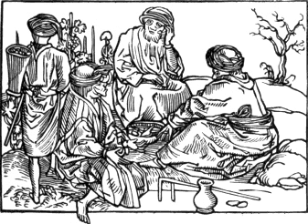
In a cut of animals there is a figure of a giraffe,IV.51 named by
Breydenbach “seraffa,” of a unicorn, a salamander, a camel,
and an animal something like an oran-outang, except that it has a tail.
Of the last the traveller observes, “non constat de nomine.” Some
account of this book, with fac-similes of the cuts, will be found in
Dibdin’s Bibliotheca Spenceriana, vol iii. pp. 216-228. In the copy
there described, belonging to Earl Spencer, the beautiful frontispiece
was wanting.
Although a flowered border surrounding a whole page may be observed
as occurring twice in Veldener’s edition of the Fasciculus Temporum,
printed at Utrecht in 1480, yet I am inclined to think that the practice
of surrounding every page with an ornamental flowered border cut in
wood, was first introduced by the Parisian printers at a period somewhat
later. In 1488, an edition of the “Horæ in Laudem beatissimæ virginis
Mariæ,” in octavo, was printed at Paris by Anthony Verard, the text of
which is surrounded with ornamental borders. The practice thus
introduced was subsequently adopted by the printers of
210
Germany and Holland, more especially in the decoration of devotional
works, such as Horæ, Breviaries, and Psalters. Verard appears to have
chiefly printed works of devotion and love, for a greater number of Horæ
and Romances proceeded from his press than that of any other printer of
his age. Most of them contain wood-cuts, some of which, in books printed
by him about the beginning of the sixteenth century, are designed with
considerable taste and well engraved; while others, those for instance
in “La Fleur des Battailes,” 4to, 1505, are not superior to those in
Caxton’s Chess: it is, however, not unlikely that the cuts in “La Fleur
des Battailes” of this date had been used for an earlier edition.IV.52
The “Hortus Sanitatis,” folio, printed at Mentz in 1491 by Jacobus
Meydenbach, is frequently referred to by bibliographers; not so much on
account of the many wood-cuts which it contains, but as being supposed
in some degree to confirm a statement in Sebastian Munster’s
Cosmography, and in Serrarius, De Rebus Moguntinis, where a John
Meydenbach is mentioned as being a partner with Gutemberg and Faust. Von
Murr, as has been previously noticed, supposed that this person was a
wood engraver; and Prosper Marchand,IV.53 though without any authority,
calls Jacobus Meydenbach his son or his relation.
This work, which is a kind of Natural History, explaining the uses
and virtues of herbs, fowls, fish, quadrupeds, minerals, drugs, and
spices, contains a number of wood-cuts, many of which are curious, as
containing representations of natural objects, but none of which are
remarkable for their execution as wood engravings. On the opposite page
is a fac-simile of the cut which forms the head-piece to the chapter “De
Ovis.” The figure, which possesses considerable merit, represents an old
woman going to market with her basket of eggs.
This is a fair specimen of the manner in which the cuts in the Hortus
Sanitatis are designed and executed. Among the most curious and best
designed are: the interior of an apothecary’s shop, on the reverse of
the first leaf; a monkey seated on the top of a fountain, in the
chapter on water; a butcher cutting up meat; a man selling
cheese at a stall; a woman milking a cow; and figures of the male
and female mandrake. At chapter 119, “De Pediculo,” a woman is
represented brushing the head of a boy with a peculiar kind of brush,
which answers the purpose of a small-toothed comb; and she appears
211
to bestow her labour on no infertile field, for each of her “sweepings,”
which are seen lying on the floor, would scarcely slip through the teeth
of a garden rake. Meydenbach’s edition has been supposed to be the
first; and Linnæus, in the Bibliotheca Botanica, has ascribed the work
to one John Cuba, a physician of Mentz; but other writers have
doubted if this person were really the author. The first edition of this
work, under the title of “Herbarus,” with a hundred and fifty wood-cuts,
was printed at Mentz by Peter Scheffer in 1484; and in 1485 he printed
an enlarged edition in German, containing three hundred and eighty cuts,
under the title of “Ortus Sanitatis oder Garten der Gesundheit.” Of the
work printed by Scheffer, Breydenbach is said to have been one of the
compilers. Several editions of the Hortus Sanitatis were subsequently
printed, not only in Germany, but in France, Holland, and Switzerland.
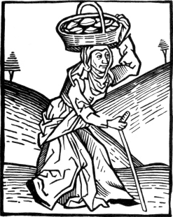
Having previously expressed my opinion respecting the wood-cuts in
the Nuremberg Chronicle, there will be less occasion to give a detailed
account of the book and the rubbish it contains here: in speaking thus
it may perhaps be necessary to say that this character is meant to apply
to the wood-cuts and not to the literary portion of the work, which
Thomas Hearne, of black-letter memory, pronounces to be extremely
“pleasant, useful, and curious.” With the wood-cuts the Rev. Dr. Dibdin
appears to have been equally charmed.
212
The work called the “Nuremberg Chronicle” is a folio, compiled by
Hartman Schedel, a physician of Nuremberg, and printed in that city
by Anthony Koburger in 1493. In the colophon it is stated that the views
of cities, and figures of eminent characters, were executed under the
superintendence of Michael Wolgemuth and William Pleydenwurff,
“mathematical men”IV.54 and skilled in the art of painting. The total
number of impressions contained in the work exceeds two thousand, but
several of the cuts are repeated eight or ten times. The following
fac-simile will afford an idea of the style in which the portraits of
illustrious men contained in this often-cited chronicle are
executed.
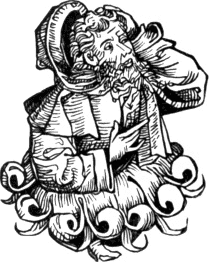
The above head, which the owner appears to be scratching with so much
earnestness, first occurs as that of Paris the lover of Helen; and it is
afterwards repeated as that of Thales, Anastasius, Odofredus, and the
poet Dante. In a like manner the economical printer has a stock-head for
kings and emperors; another for popes; a third for bishops;
a fourth for saints, and so on. Several cuts representing what
might be supposed to be particular events are in the same manner pressed
into the general service of the chronicler.
The peculiarity of the cuts in the Nuremberg Chronicle is that they
generally contain more of what engravers term “colour” than any which
213
had previously appeared. Before proceeding, however, to make any further
observations on these cuts, I shall endeavour to explain what
engravers mean by the term “colour,” as applied to an impression taken
with black ink from a copper-plate or a wood-block.
Though there is no “colour,” strictly speaking, in an engraving
consisting merely of black and white lines, yet the term is often
conventionally applied to an engraving which is supposed, from the
varied character of its lines and the contrast of light and shade, to
convey the idea of varied local colour as seen in a painting or a
water-colour drawing. For instance, an engraving is said to contain much
“colour” which appears clearly to indicate not only a variety of colour,
but also its different degrees of intensity in the several objects, and
which at the same time presents an effective combination of light and
shade. An engraver cannot certainly express the difference between green
and yellow, or red and orange, yet in engraving a figure, say that of a
cavalier by Vandyke, with brown leather boots, buff-coloured woollen
hose, doublet of red silk, and blue velvet cloak, a master of his
art will not only express a difference in the texture, but will also
convey an idea of the different parts of the dress being of different
colours. The Rent Day, engraved by Raimbach from a painting by Wilkie,
and Chelsea Pensioners hearing the Gazette of the Battle of Waterloo
read, engraved by Burnet from a picture by the same artist, may be
instanced as copper-plate engravings which contain much “colour.”
Mr. Landseer, at pages 175, 176, of his Lectures on Engraving, makes
the following remarks on the term “colour,” as conventionally applied by
engravers in speaking of impressions from plates or from
wood-blocks:—“It is not uncommon among print-publishers, nor even
amongst engravers themselves, to hear the word COLOUR mistakenly employed to signify shade;
so that if they think an engraving too dark, they say it has too much
colour, too little colour if too light—and so forth. The
same ignorance which has hitherto reigned over the pursuits of this Art,
has here imposed its authority, and with the same unfortunate success:
I cannot however yield to it the same submission, since it is not
only a palpable misuse of a word, but would lead to endless confusion
when I come to explain to you my ideas of the means the Art of engraving
possesses of rendering local colour in the abstract. Wherefore, whenever
I may use the term colour, I mean it in no other than its
ordinary acceptation.”
“By MIDDLE TINT, I understand and
mean, ‘the medium between strong light and strong shade.’—These
are Mr. Gilpin’s words; and he adds, with a propriety that confers value
on the definition—‘the phrase is not at all expressive of
colour.’”
Whether we owe the term “colour,” as applied to engravings, to the
214
ignorance of printsellers or not, I shall not inquire; I only
know that a number of terms equally objectionable, if their primitive
meaning be considered, are used in speaking of the arts of painting and
engraving by persons who are certainly not ignorant. We have the words
high and deep, which strictly relate to objects of lineal
altitude or profundity, applied to denote intensity of colour; and the
very word intensity, when thus applied, is only relative; the
speaker being unable to find a word directly expressive of his meaning,
explains himself by referring to some object or thing previously known,
as, in this instance, by reference to the tension of a string or
cord. The word tone, which is so frequently used in speaking of
pictures, is derived from the sister art of music. I presume that
none of these terms were introduced into the nomenclature of painting
and engraving by ignorant persons, but that they were adopted from a
necessity originating from the very constitution of the human mind. It
is well known to every person who has paid any attention to the
construction of languages, that almost every abstract term is referable
to, and derived from, the name of some material object. The very word to
“think,” implying the exercise of our mental faculties, is probably an
offset from the substantive “thing.”
It is also to be observed, that Mr. Landseer speaks as if the term
colour was used by ignorant printsellers, and of course ignorant
engravers, to signify shade only. It is, however, used by them to
signify that there is a considerable proportion of dark lines and
hatchings in an engraving, although such lines and hatchings are not
expressive of shade, but merely indicative of deep colours. Dark brown,
red, and purple, for instance, even when receiving direct rays of light,
would naturally contain much conventional “colour” in an engraving; and
so would a bay horse, a coal barge, or the trunk of an old oak
tree, when receiving the light in a similar manner; all would be
represented as comparatively dark, when contrasted with lighter coloured
objects,—for instance, with a blue sky, grass, or light green
foliage,—although not in shade. An engraving that appears too
light, compared with the painting from which it is copied, is said to
want “colour,” and the copper-plate engraver remedies the defect by
thickening the dark lines, or by adding cross lines and hatchings. As a
copper-plate engraver can always obtain more “colour,” he generally
keeps his work light in the first stage of a plate; on the contrary,
a wood engraver keeps his first proof dark, as he cannot afterwards
introduce more “colour,” or give to an object a greater depth of shade.
A wood engraver can make his lines thinner if they be too thick,
and thus cause his subject to appear lighter; but if he has made them
too fine at first, and more colour be wanted, it is not in his power to
remedy the defect.
What Mr. Landseer’s ideas may be of the “means [which] the art
215
of engraving possesses of rendering local colour in the abstract,”
I cannot very well comprehend. I am aware of the lines used
conventionally by engravers to indicate heraldic colours in coat-armour;
but I can see no natural relation between perpendicular lines in an
engraving and the red colour of a soldier’s coat. I believe that no
person could tell the colour of the draperies in Leonardo da Vinci’s
Last Supper from an inspection of Raphael Morghen’s engraving of it.
When Mr. Landseer says that he will use the term “colour” in its
“ordinary acceptation,” he ought to have explained what the ordinary
acceptation of the word meant when applied to impressions from
copper-plates which consist of nothing but lines and interstices of
black and white.
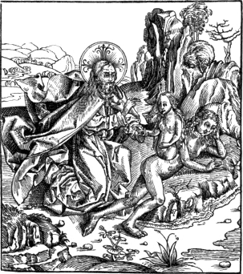
In the second paragraph Mr. Landseer displays great inconsistency in
praising Mr. Gilpin for his definition of the word “tint,” which, when
applied to engravings, is as objectionable as the term “colour.” It
appears that Mr. Gilpin may employ a conventional term with “singular
propriety,” while printsellers and engravers who should use the same
liberty would be charged with ignorance. Is there such a thing as a
tint in nature which is of no colour? Mr. Gilpin’s lauded
definition involves a contradiction even when the word is applied to
engravings, in which every “tint” is indicative of positive colour. That
“medium
216
between strong light and strong shade,” and which is yet of no colour,
remains to be discovered. Mr. Gilpin has supplied us with the “word,”
but it appears that no definite idea is necessary to be attached to it.
Having thus endeavoured to give a little brightness to the “colour” of
“ignorant printsellers and engravers,” I shall resume my
observations on the cuts in the Nuremberg Chronicle, to the “colour” of
which the preceding digression is to be ascribed.
The preceding cut, representing the Creation of Eve, is copied from
one of the best in the Nuremberg Chronicle, both with respect to design
and engraving. In this, compared with most other cuts previously
executed, much more colour will be perceived, which results from the
closeness of the single lines, as in the dark parts of the rock
immediately behind the figure of Eve; from the introduction of dark
lines crossing each other,—called “cross-hatching,”—as may
be seen in the drapery of the Divinity; and from the contrast of the
shade thus produced with the lighter parts of the cut.
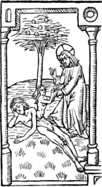
The subjoined cut, of the same subject, copied from the Poor
Preachers’ Bible,IV.55 will, by comparison with the preceding, illustrate
more clearly than any verbal explanation the difference with respect to
colour between the wood-cuts in the old block-books and in most others
printed between 1462 and 1493, and those contained in the Nuremberg
217
Chronicle. In this cut there is no indication of colour; the shades in
the drapery which are expressed by hard parallel lines are all of equal
strength, or rather weakness; and the hair of Adam’s head and the
foliage of the tree are expressed nearly in the same manner.
This manner of representing the creation of Eve appears to have been
general amongst the wood engravers of the fifteenth century, for the
same subject frequently occurs in old cuts executed previous to 1500. It
is frequently represented in the same manner in illuminated missals; and
in Flaxman’s Lectures on Sculpture a lithographic print is given, copied
from an ancient piece of sculpture in Wells Cathedral, where Eve is seen
thus proceeding from the side of Adam. In a picture by Raffaele the
creation of Eve is also represented in the same manner.
In the wood-cuts which occur in Italian books printed previous to
1500 the engravers have seldom attempted anything beyond a simple
outline with occasionally an indication of shade, or of colour, by means
of short parallel lines. The following is a fac-simile of a cut in
Bonsignore’s Italian prose translation of Ovid’s Metamorphoses, folio,
printed at Venice by the brothers De Lignano in 1497. It may serve at
once as a specimen of the other cuts contained in the work and of the
general style of engraving on wood in Italy for about ten years
preceding that period.
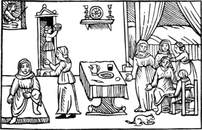
The subject illustrated is the difficult labour of Alcmena through
the malign influence of Lucina, as related by Ovid in the IXth book of the Metamorphoses, from verse 295 to
314. This would appear to have been rather a favourite subject with
designers, for it is again selected for illustration in Ludovico Dolce’s
Transformationi, a kind of paraphrase of the Metamorphoses, 4to,
printed at Venice by Gabriel Giolito in 1557; and it is also represented
in the illustrations to the Metamorphoses
218
designed by Virgil Solis, and printed at Frankfort, in oblong 4to, by
George Corvinus and Sigismund Feyrabent, in 1569.IV.56
Of all the wood-cuts executed in Italy within the fifteenth century
there are none that can bear a comparison for elegance of design with
those contained in an Italian work entitled “Hypnerotomachia Poliphili,”
a folio without printer’s name or place, but certainly printed at
Venice by Aldus in 1499. This “Contest between Imagination and Love, by
a general Lover,”—for such seems to be the import of the
title,—is an obscure medley of fable, history, antiquities,
mathematics, and various other matters, highly seasoned with erotic
sketchesIV.57 suggested by the prurient imagination of a
monk,—for such the author was,—who, like many others of his
fraternity, in all ages, appears to have had “a law not to
marry, and a custom not to live chaste.” The language in which
this chaos of absurdities is composed is almost as varied as the
subjects. The ground-work is Italian, on which the author engrafts at
will whole phrases of Latin, with a number of words borrowed from the
Greek, Hebrew, Arabic, and Chaldee. “Certain persons,” says Tiraboschi,
“who admire a work the more the less they understand it, have fancied
that they could perceive in the Hypnerotomachia a complete summary of
human knowledge.”IV.58
The name of the author was Francis Colonna, who was born at Venice,
and at an early age became a monk of the order of St. Dominic. In 1467
he professed Grammar and Classical Literature in the convent of his
order at Trevisa; and he afterwards became Professor of Theology at
Padua, where he commenced Doctor in 1473, a degree which, according
to the rule of his order, he could not assume until he was forty. At the
time of his death, which happened in 1527, he could not thus be less
than ninety-four years old. The true name of this amorous dreaming monk,
and the fictitious one of the woman with whom he was in love, are thus
expressed by combining, in the order in which they follow each other,
the initial letters of the several chapters: “Poliam Frater Fransiscus Columna peramavit.”IV.59 If
any reliance can be placed on
219
the text and the cuts as narrating and representing real incidents, we
may gather that the stream of love had not run smooth with father
Francis any more than with simple laymen. With respect to the true name
of the mistress of father Francis, biographers are not agreed. One says
that her name was Lucretia Maura; and another that her name was
Ippolita, and that she belonged to the noble family of Poli, of Trevisa,
and that she was a nun in that city. From the name Ippolita some authors
thus derive the fictitious name Polia: Ippolita; Polita; Polia.
A second edition, also from the Aldine press, appeared in 1545; and
in the following year a French translation was printed at Paris under
the following title: “Le Tableau des riches inventions couvertes du
voile des feintes amourouses qui sont representées dans le Songe de
Poliphile, devoilées des ombres du Songe, et subtilment exposées.” Of
this translation several editions were published; and in 1804 J. G.
Legrand, an architect of some repute in Paris, printed a kind of
paraphrase of the work, in two volumes 12mo, which, however, was not
published until after his death in 1807. In 1811 Bodoni reprinted the
original work at Parma in an elegant quarto volume.
In the original work the wood-cuts with respect to design may rank
among the best that have appeared in Italy. The whole number in the
volume is one hundred and ninety-two; of which eighty-six relate to
mythology and ancient history; fifty-four represent processions and
emblematic figures: there are thirty-six architectural and ornamental
subjects; and sixteen vases and statues. Several writers have asserted
that those cuts were designed by Raffaele,IV.60 while others with
equal confidence, though on no better grounds, have ascribed them to
Andrea Mantegna. Except from the resemblance which they are supposed to
bear to the acknowledged works of those artists, I am not aware
that there is any reason to suppose that they were designed by either of
them. As Raffaele, who was born in 1483, was only sixteen when the
Hypnerotomachia was printed, it is not likely that all, or even any of
those cuts
were designed by him; as it is highly probable that all the drawings
would be finished at least twelve months before, and many of them
contain internal evidence of their not being the productions of a youth
of fifteen. That Andrea Mantegna might design them is possible; but this
certainly cannot be a sufficient reason for positively asserting that he
actually did. Mr. Ottley, at page 576, vol. ii, of his Inquiry, asserts
that they were designed by Benedetto Montagna, an
220
artist who flourished about the year 1500, and who is chiefly known as
an engraver on copper. The grounds on which Mr. Ottley forms his opinion
are not very clear, but if I understand him correctly they are as
follows:
In the collection of the late Mr. Douce there were sixteen wood
engravings which had been cut out of a folio edition of Ovid’s
Metamorphoses, printed at Venice in 1509. All those engravings, except
two, were marked with the letters ía,
which according to Mr. Ottley are the initials of the engraver, Ioanne
Andrea di Vavassori. Between some of the cuts from the Ovid, and certain
engravings executed by Montagna, it seems that Mr. Ottley discovered a
resemblance; and as he thought that he perceived a perfect similarity
between the sixteen cuts from the Ovid and those contained in the
Hypnerotomachia, he considers that Benedetto Montagna is thus proved to
have been the designer of the cuts in the latter work.
Not having seen the cuts in the edition of the Metamorphoses of 1509,
I cannot speak, from my own examination, of the resemblance between
them and those in the Hypnerotomachia; it, however, seems that Mr. Douce
had noticed the similarity as well as Mr. Ottley: but even admitting
that there is a perfect identity of style in the cuts of the above two
works, yet it by no means follows that, because a few of the cuts in the
Ovid resemble some copper-plate engravings executed by Benedetto
Montagna, he must have designed the cuts in the Hypnerotomachia. As the
cuts in the Ovid may, as Mr. Ottley himself remarks, have been used in
an earlier edition than that of 1509, it is not unlikely that they might
appear before Montagna’s copper-plates; and that the latter might copy
the designs of a greater artist than himself, and thus by his very
plagiarism acquire, according to Mr. Ottley’s train of reasoning, the
merit which may be justly due to another. If Benedetto Montagna be
really the designer of the cuts in the Hypnerotomachia, he has certainly
excelled himself, for they certainly display talent of a much higher
order than is to be perceived in his copper-plate engravings. Besides
the striking difference with respect to drawing between the wood-cuts in
PoliphiloIV.61 and the engravings of Benedetto Montagna, two of
the cuts in the former work have a mark which never appears in any of
that artist’s known productions, which generally have either his name at
length or the letters B. M. In the third cut of Poliphilo, the
designer’s or engraver’s mark, a small b, may be perceived at the
foot, to the right; and the same mark is repeated in a cut at
signature C.
221
A London bookseller in his catalogue published in 1834, probably
speaking on Mr. Ottley’s hint that the cuts in the Ovid of 1509 might
have appeared in an earlier edition, thus describes Bonsignore’s Ovid,
a work in which the wood-cuts are of a very inferior description,
and of which a specimen is given in a preceding page: “Ovidii
Metamorphoseos Vulgare, con le Allegorie, [Venezia, 1497,] with numerous
beautiful wood-cuts, apparently by the artist who executed the
Poliphilo, printed by Aldus in 1499.” The wood-cuts in the Ovid of 1497
are as inferior to those in Poliphilo as the commonest cuts in
children’s school-books are inferior to the beautiful wood-cuts in
Rogers’s Pleasures of Memory, printed in 1812, which were designed by
Stothard and engraved by Clennell. It is but fair to add, that the cuts
used in the Ovid of 1497, printed by the brothers De Lignano, cannot be
the same as those in the Ovid of 1509 referred to by Mr. Ottley; for
though the subjects may be nearly the same, the cuts in the latter
edition are larger than those in the former, and have besides an
engraver’s mark which is not to be seen in any of the cuts in the
edition of 1497.
The five following cuts are fac-similes traced line for line from the
originals in Poliphilo. In the first, Mercury is seen interfering to
save Cupid from the anger of Venus, who has been punishing him and
plucking the feathers from his wings. The cause of her anger is
explained by the figure of Mars behind the net in which he and Venus had
been inclosed by Vulcan. Love had been the cause of his mother’s
misfortune.
222
In the following cut Cupid is represented as brought by Mercury
before Jove, who in the text, “in Athica lingua,” addresses the God of
Love, as “ΣΥΜΟΙΓΛΥΚΥΣ ΚΑΙ ΠΙΚΡΟΣ”—“at once sweet and
bitter.” In the inscription in the cut, “ΑΛΛΑ” is substituted for “ΚΑΙ.”
In the next cut Cupid appears piercing the sky with a dart, and thus
causing a shower of gold to fall. The figures represent persons of all
conditions whom he has wounded, looking on with amazement.
223
The three preceding cuts, in the original work, appear as
compartments from left to right on one block. They are here given
separate for the convenience of printing, as the page is not wide enough
to allow of their being placed as in the original folio.
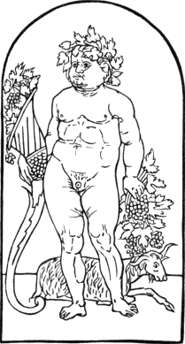
The subjoined cut is intended to represent Autumn, according to a
description of the figure in the text, where the author is speaking of
an altar to be erected to the four seasons. On one of the sides he
proposes that the following figure should be represented “with a jolly
countenance, crowned with vine leaves, holding in one hand a bunch of
grapes, and in the other a cornucopia, with an inscription: ‘Mustulento Autumno S.’”IV.62 The face of jolly
Autumn is indeed like that of one who loved new wine, and his body seems
like an ample skin to keep the liquor in;—Sir John Falstaff
playing Bacchus ere he had grown old and inordinately fat.
224
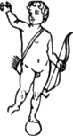
The following figure of Cupid is copied from the top of a fanciful
military standard described by the author; and on a kind of banner
beneath the figure is inscribed the word “ΔΟΡΙΚΤΗΤΟΙ”—“Gained in
war.”
The following is a specimen of one of the ornamental vases contained
in the work. It is not, like the five preceding cuts, of the same size
as the original, but is copied on a reduced scale.
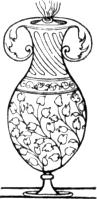
The simple style in which the cuts in the Hypnerotomachia are
engraved, continued to prevail, with certain modifications, in Italy for
many years after the method of cross-hatching became general in Germany;
and from 1500 to about 1530 the characteristic of most Italian wood-cuts
is the simple manner in which they are executed compared with the more
laboured productions of the German wood engravers. While the German
proceeds with considerable labour to obtain “colour,” or shade, by means
of cross-hatching, the Italian in the early part of the sixteenth
century endeavours to attain his object by easier means, such as leaving
his lines thicker in certain parts, and in others, indicating shade by
means of short slanting parallel lines. In the execution of flowered or
ornamented initial letters a decided difference may frequently be
noticed between the work of an Italian and a German artist. The German
mostly, with considerable trouble, cuts his flourishes, figures, and
flowers in relief, according to the general practice of wood engravers;
the Italian, on the contrary, often cuts them, with much greater ease,
in intaglio; and thus the form of the letter, and its ornaments,
appear, when printed, white upon a black ground.IV.63 The letter C at
the commencement of the present chapter is an example of the German
style, with the ornamental parts in relief; the letter M at the
commencement of chapter V. is a
specimen of the manner frequently adopted by old Italian wood engravers,
the form of the letter and the ornamental foliage being cut in
intaglio. At a subsequent period a more elaborate manner of
engraving began to prevail in Italy, and cross-hatching was almost as
generally employed to obtain depth of colour and shade as in Germany.
The wood-cuts which appear in works printed at Venice between 1550 and
1570 are generally as good as most German wood-cuts of the same period;
and
225
many of them, more especially those in books printed by the Giolitos,
are executed with a clearness and delicacy which have seldom been
surpassed.
Before concluding the present chapter, which is more especially
devoted to the consideration of wood engraving in the first period of
its connexion with typography, it may not be improper to take a brief
glance at the state of the art as practised by the Briefmalers and
Formschneiders of Germany, who were the first to introduce the practice
of block-printing, and who continued to exercise this branch of their
art for many years after typography had been generally established
throughout Europe. That the ancient wood engravers continued to practise
the art of block-printing till towards the close of the fifteenth
century, there can be little doubt. There is an edition of the Poor
Preachers’ Bible, with the date 1470, printed from wood-blocks, without
place or engraver’s name, but having at the end, as a mark, two shields,
on one of which is a squirrel, and on the other something like two
pilgrim’s staves crossed. Another edition of the same work, though not
from the same blocks, appeared in 1471. In this the engraver’s mark is
two shields, on one of which is a spur, probably a rebus for the name of
“Sporer;” in the same manner that a pair of folding-doors represented
the name “Thurer,” or “Durer.” An engraver of the name of Hans Sporer
printed an edition of the Ars Moriendi from wood-blocks in 1473; and in
the preceding year Young Hans, Briefmaler, of Nuremberg, printed an
edition of the Antichrist in the same manner.IV.64
It is probable that most of the single sheets and short tracts,
printed from wood-blocks, preserved in the libraries of Germany, were
printed between 1440 and 1480. Books consisting of two or more sheets
printed from wood-blocks are of rare occurrence with a date subsequent
to 1480. Although about that period the wood engravers appear to have
resigned the printing of books entirely to typographers, yet for several
years afterwards they continued to print broadsides from blocks of wood;
and until about 1500 they continued to compete with the press for the
printing of “Wand-Kalendars,” or sheet Almanacks to be hung up against a
wall. Several copies of such Almanacks, engraved between 1470 and 1500,
are preserved in libraries on the Continent that are rich in specimens
of early block-printing. But even this branch of their business the wood
engravers were at length obliged to abandon; and at the end of the
fifteenth century the practice of printing pages of text from engraved
wood-blocks may be considered as almost extinct in Germany. It probably
began with a single sheet, and with a
226
single sheet it ended; and its origin, perfection, decline, and
extinction are comprised within a century. 1430 may mark its origin;
1450 its perfection; 1460 the commencement of its decline; and 1500 its
fall.
In an assemblage of wood engravings printed at Gotha between 1808 and
1816,IV.65 from old blocks collected by the Baron Von
Derschau, there are several to which the editor, Zacharias Becker,
assigns an earlier date than the year 1500. It is not unlikely that two
or three of those in his oldest class, A, may have been executed
previous to that period; but there are others in which bad drawing and
rude engraving have been mistaken for indubitable proofs of antiquity.
There are also two or three in the same class which I strongly suspect
to be modern forgeries. It would appear from a circumstance mentioned in
Dr. Dibdin’s Bibliographical Tour,IV.66 and referred to at page 236 of
the present work, that the Baron was a person from whose collection
copper-plate engravings of questionable date had proceeded as well as
wood-blocks. The following is a reduced copy of one of those suspicious
blocks, but which the editor considers to be of an earlier date than the
St. Christopher in the collection of Earl Spencer. I am however of
opinion that it is of comparatively modern manufacture.
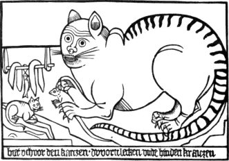
The inscription, intended for old German, at the bottom of the cut,
is literally as follows: “Hiet uch, vor den Katczen dy vorn lecken
unde
227
hinden kraiczen”—that is: “Beware of the cats that lick before
and scratch behind.” It is rather singular that the editor—who
describes the subject as a cat which appears to teach her kitten “le Jeu
de Souris”—should not have informed his readers that more was
meant by this inscription than met the eye, and that it was in fact part
of a German proverb descriptive of a class of females who are
particularly dangerous to simple young men.IV.67 Among the cuts
supposed to have been engraved previous to the year 1500, another is
given which I suspect also of being a forgery, and by the same person
that engraved the cat. The cut alluded to represents a woman sitting
beside a young man, whose purse she is seen picking while she appears to
fondle him. A hawk is seen behind the woman, and an ape behind the
man. At one side is a lily, above which are the words “Ich wart.” At the top of the cut is an
inscription,—which seems, like that in the cut of the cat, to be
in affectedly old German,—describing the young man as a prey for
hawks and a fool, and the woman as a flatterer, who will fawn upon him
until she has emptied his pouch. The subjects of those two cuts, though
not apparently, are, in reality, connected. In the first we are
presented with the warning, and in the latter with the example. Von
Murr—whom Dr. Dibdin suspects to have forged the French St.
Christopher—describes in his Journal impressions from those blocks
as old wood-cuts in the collection of Dr. Silberrad;IV.68 and it is
certainly very singular that the identical blocks from which Dr.
Silberrad’s scarce old wood engravings were taken should afterwards
happen to be discovered and come into the possession of the Baron Von
Derschau.
In the same work there is a rude wood-cut of St. Catharine and three
other saints; and at the back of the block there is also engraved the
figure of a soldier. At the bottom of the cut of St. Catharine, the name
of the engraver, “Jorg Glockendon,”
appears in old German characters. As “Glockendon” or “Glockenton” was
the name of a family of artists who appear to have been settled at
Nuremberg early in the fifteenth century, Becker concludes that the cut
in question was engraved prior to 1482, and that this “Jorg Glockendon”
was “the first wood engraver known by name, and not John Schnitzer of
Arnsheim,—who engraved the maps in Leonard Holl’s Ptolemy, printed
in the above year,—as Heineken and others pretend.” That the cut
was engraved previous to 1482 rests merely on Becker’s conjecture; and a
person who would assert that it was engraved ten or fifteen years later,
would perhaps be nearer the truth. John Schnitzer, however, is not the
first wood engraver known by name. The name of Hans Sporer appears in
the Ars Moriendi of 1473; and it is not probable that Hartlieb’s
228
Chiromantia, in which we find the name “Jorg
Schapff zu Augspurg,” was engraved subsequent to 1480. It would
appear that Becker did not consider “Hans Briefmaler,” who occurs as a
wood engraver between 1470 and 1480, as a person “known by name,” though
it is probable that he had no other surname than that which was derived
from his profession.
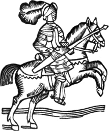
Although Derschau’s collection contains a number of old cuts which
are well worth preserving, more especially among those executed in the
sixteenth century; yet it also contains a large portion of worthless
cuts, which are neither interesting from their subjects nor their
antiquity, and which throw no light on the progress of the art. There
are also not a few modern antiques which are only illustrative of the
credulity of the collector, who mistakes rudeness of execution for a
certain test of antiquity. According to this test the following cut
ought to be ascribed to the age of Caxton, and published with a long
commentary as an undoubted specimen of early English wood engraving. It
is however nothing more than an impression from a block engraved with a
pen-knife by a printer’s apprentice between 1770 and 1780. It was one of
the numerous cuts of a similar kind belonging to the late Mr. George
Angus of Newcastle-upon-Tyne, who used them as head-pieces to chap-books
and broadside histories and ballads.
Besides the smaller block-books, almanacks, and broadsides of text,
executed by wood engravers between 1460 and 1500, they also executed a
number of single cuts, some accompanied with a few sentences of
229
text also cut in wood, and others containing only figures. Many of the
sacred subjects were probably executed for convents in honour of a
favourite saint; while others were engraved by them on their own account
for sale among the poorer classes of the people, who had neither the
means to purchase, nor the ability to read, a large “picture-book”
which contained a considerable portion of explanatory text. In almost
every one of the works executed by the Briefmalers and Formschneiders
subsequent to the invention of typography, there is scarcely a single
cut to be found that possesses the least merit either in design or
execution. They appear generally to have been mere workmen, who could
draw and engrave figures on wood in a rude style, but who had not the
slightest pretensions to a knowledge of art.
Having now brought the history of wood engraving to the end of the
fifteenth century, I shall here conclude the present chapter,
without expressly noticing such works of Albert Durer as were certainly
engraved on wood previous to the year 1500. The designs of this great
promoter of wood engraving mark an epoch in the progress of the art; and
will, with others of the same school, more appropriately form the
subject of the next chapter.
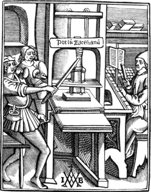
Chiaro-scuro engraving on wood—a copper-plate by mair mistaken for
the first chiaro-scuro—dotted backgrounds in old
wood-cuts—albert durer probably not a wood-engraver—his
birth—a pupil of michael wolgemuth—his travels—cuts of
the apocalypse designed by him—his visit to venice in
1506—the history of the virgin and christ’s passion engraved on
wood from his designs—his triumphal car and triumphal arch of the
emperor maximilian—his invention of etching—his
carving—visit to the netherlands—his death—wood-cuts
designed by l. cranach, h. burgmair, and
h. schæfflein—the adventures of sir theurdank—the wise
king—the triumphs of maximilian—ugo da carpi—lucas van
leyden—william de figuersnider—ursgraff—cuts designed
by unknown artists between 1500 and 1528.
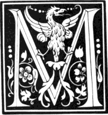ost
authors who have written on the history of engraving have incidentally
noticed the art of chiaro-scuro engraving on wood, which began to be
practised early in the sixteenth century.V.1 The honour of the invention has
been claimed for Italy by Vasari and other Italian writers, who seem to
think that no improvement in the arts of design and engraving can
originate on this side of the Alps. According to their account,
chiaro-scuro engraving on wood was first introduced by Ugo da Carpi, who
executed several pieces in that manner from the designs of Raffaele.
But, though confident in their assertions, they are weak in their
proofs; for they can produce no chiaro-scuros by Ugo da Carpi, or by any
other Italian engraver, of an earlier date than 1518. The engravings of
Italian artists in this style
231
are not numerous, previous to 1530, and we can scarcely suppose that the
earliest of them was executed before 1515. That the art was known and
practised in Germany several years before this period there can be no
doubt; for a chiaro-scuro wood engraving, a Repose in Egypt, by
Lucas Cranach, is dated 1509; two others by Hans Baldung Grün are dated
1509 and 1510; and a portrait, in the same style, by Hans Burgmair, is
dated 1512.
Some German writers, not satisfied with these proofs of the art being
practised in Germany before it was known in Italy, refer to an
engraving, dated 1499, by a German artist of the name of Mair, as one of
the earliest executed in this manner. This engraving, which is from a
copper-plate, cannot fairly be produced as evidence on the point in
dispute; for though it bears the appearance of a chiaro-scuro engraving,
yet it is not so in reality; for on a narrow inspection we may perceive
that the light touches have neither been preserved, nor afterwards
communicated by means of a block or a plate, but have been added with a
fine pencil after the impression was taken. It is, in fact, nothing more
than a copper-plate printed on dark-coloured paper, and afterwards
heightened with a kind of white and yellow body-colour. It is very
likely, however, that the subject was engraved and printed on a dark
ground with the express intention of the lights being subsequently added
by means of a pencil. The artist had questionless wished to produce an
imitation of a chiaro-scuro drawing; but he certainly did not effect his
purpose in the same manner as L. Cranach, H. Burgmair, or Ugo
da Carpi, whose chiaro-scuro engravings had the lights preserved, and
required no subsequent touching with the pencil to give to them that
character.
The subject of this engraving is the Nativity, and there is an
impression of it in the Print Room of the British Museum.V.2 In the
foreground, about the middle of the print, is the Virgin seated with the
infant Jesus in her lap. At her feet is a cradle of wicker-work, and to
the left is an angel kneeling in adoration. On the same side, but
further distant, is Joseph leaning over a half door, holding a candle in
one hand and shading it with the other. In the background is the stable,
in which an ox and an ass are seen; and the directing star appears
shining in the
232
sky. The print is eight inches high, and five inches and three-eighths
wide; at the top is the date 1499, and at the bottom the engraver’s
name, Mair. It is printed in black ink
on paper which previous to receiving the impression had been tinted or
stained a brownish-green colour. The lights have neither been preserved
in the plate nor communicated by means of a second impression, but have
been laid on by the hand with a fine pencil. The rays of the star, and
the circles of light surrounding the head of the Virgin, and also that
of the infant, are of a pale yellow, and the colour from its chalky
appearance seems very like the touches of a crayon. The lights in the
draperies and in the architectural parts of the subject have been laid
on with a fine pencil guided by a steady hand. That the engraver
intended his work to be finished in this manner there can be little
doubt; and the impression referred to affords a proof of it; for
Joseph’s candle, though he shades it with his left hand, in reality
gives no light. The engraver had evidently intended that the light
should be added in positive body colour; but the person—perhaps
the engraver himself—whose business it was to add the finishing
touches to the impression, has neglected to light Joseph’s candle.V.3
Towards the latter end of the fifteenth century,V.4 a practice was
introduced by the German wood engravers of dotting the dark parts of
their subjects with white, more especially in cuts where the figures
were intended to appear light upon a dark ground; and about the
beginning of the sixteenth, this mode of “killing the black,” as it is
technically termed, was very generally prevalent among the French wood
engravers, who, as well as the Germans and Dutch, continued to practise
it till about 1520, when it was almost wholly superseded by
cross-hatching; a mode of producing shade which had been much
practised by the German engravers who worked from the drawings of Durer,
Cranach, and Burgmair, and which about that time seems to have been
generally adopted in all countries where the art had made any progress.
The two following cuts, which are from an edition of “Heures à l’Usaige
de Chartres,” printed at Paris by Simon Vostre, about 1502, are examples
of this mode of diminishing the effects of a ground which would
otherwise be entirely black. Books printed in France between 1500 and
1520 afford the most numerous instances of dark backgrounds dotted with
white. In many cuts executed about the latter period the dots are of
larger size and more numerous in proportion to the black, and they
evidently have been
233
produced by means of a lozenge-pointed tool, in imitation of
cross-hatching.
The greatest promoter of the art of wood engraving, towards the close
of the fifteenth and in the early part of the sixteenth century, was
unquestionably Albert Durer; not however, as is generally supposed, from
having himself engraved the numerous wood-cuts which bear his mark, but
from his having thought so well of the art as to have most of his
greatest works engraved on wood from drawings made on the block by
himself. Until within the last thirty years, most writers who have
written on the subject of art, have spoken of Albert Durer as a wood
engraver; and before proceeding to give any account of his life, or
specimens of some of the principal wood engravings which bear his mark,
it appears necessary to examine the grounds of this opinion.
There are about two hundred subjects engraved on wood which are
marked with the initials of Albert Durer’s name; and the greater part of
them, though evidently designed by the hand of a master, are engraved in
a manner which certainly denotes no very great excellence. Of the
remainder, which are better engraved, it would be difficult to point out
one which displays execution so decidedly superior as to enable any
person to say positively that it must have been cut by Albert Durer
himself. The earliest engravings on wood with Durer’s mark are sixteen
cuts illustrative of the Apocalypse, first published in 1498; and
between that period and 1528, the year of his death, it is likely that
nearly all the others were executed. The cuts of the Apocalypse
generally are much superior to all wood engravings that had previously
appeared, both in design and execution; but if they be carefully
examined by any person conversant with the practice of the art, it will
be perceived that their
234
superiority is not owing to any delicacy in the lines which would render
them difficult to engrave, but from the ability of the person by whom
they were drawn, and from his knowledge of the capabilities of the art.
Looking at the state of wood engraving at the period when those cuts
were published, I cannot think that the artist who made the
drawings would experience any difficulty in finding persons capable of
engraving them. In most of the wood-cuts supposed to have been engraved
by Albert Durer we find cross-hatching freely introduced; the readiest
mode of producing effect to an artist drawing on wood with a pen or a
black-lead pencil, but which to the wood engraver is attended with
considerable labour. Had Albert Durer engraved his own designs,
I am inclined to think that he would not have introduced
cross-hatching so frequently, but would have endeavoured to attain his
object by means which were easier of execution. What is termed
“cross-hatching” in wood engraving is nothing more than black lines
crossing each other, for the most part diagonally; and in drawing
on wood it is easier to produce a shade by this means, than by
thickening the lines; but in engraving on wood it is precisely
the reverse; for it is easier to leave a thick line than to cut out the
interstices of lines crossing each other. Nothing is more common than
for persons who know little of the history of wood engraving, and still
less of the practice, to refer to the frequent cross-hatching in the
cuts supposed to have been engraved by Albert Durer as a proof of their
excellence: as if the talent of the artist were chiefly displayed in
such parts of the cuts as are in reality least worthy of him, and which
a mere workman might execute as well. In opposition to this vulgar error
I venture to assert, that there is not a wood engraver in London of the
least repute who cannot produce apprentices to cut fac-similes of
any cross-hatching that is to be found, not only in the wood engravings
supposed to have been executed by Albert Durer, but in those of any other
master. The execution of cross-hatching requires time, but very little
talent; and a moderately clever lad, with a steady hand and a
lozenge-pointed tool, will cut in a year a square yard of such
cross-hatching as is generally found in the largest of the cuts supposed
to have been engraved by Albert Durer. In the works of Bewick, scarcely
more than one trifling instance of cross-hatching is to be found; and in
the productions of all other modern wood engravers who have made their
own drawings, we find cross-hatching sparingly introduced; while in
almost every one of the cuts designed by Durer, Cranach, Burgmair, and
others who are known to have been painters of eminence in their day, it
is of frequent occurrence. Had these masters engraved their own designs
on wood, as has been very generally supposed, they probably would have
introduced much less cross-hatching into their subjects; but as there is
every reason to believe that they only made the drawing on the wood, the
engravings
235
which are ascribed to them abound in lines which are readily made with a
pen or a pencil, but which require considerable time to cut with a
graver.
At the period that Durer published his illustrations of the
Apocalypse, few wood-cuts of much merit either in design or execution
had appeared in printed books; and the wood engravers of that age seem
generally to have been mere workmen, who only understood the mechanical
branch of their art, but who were utterly devoid of all knowledge of
composition or correct drawing; and there is also reason to believe that
wood-cuts at that period, and even for some time after, were not
unfrequently engraved by women.V.5 As the names of those persons were
probably not known beyond the town in which they resided, it cannot be a
matter of surprise that neither their marks nor initials should be found
on the cuts which they engraved from the drawings of such artists as
Albert Durer.
It perhaps may be objected, that as Albert Durer’s copper-plate
engravings contain only his mark, in the same manner as the wood
engravings, it might with equal reason be questioned if they were really
executed by himself. Notwithstanding the identity of the marks, there
is, however, a wide difference between the two cases. In the age of
Albert Durer most of the artists who engraved on copper were also
painters; and most of the copper-plate engravings which bear his mark
are such as none but an artist of great talent could execute. It would
require the abilities of a first-rate copper-plate engraver of the
present day to produce a fac-simile of his best copper-plates; while a
wood engraver of but moderate skill would be able to cut a fac-simile of
one of his best wood engravings after the subject was drawn for him on
the block. The best of Albert Durer’s copper-plates could only have been
engraved by a master; while the best of his wood-cuts might be engraved
by a working Formschneider who had acquired a practical knowledge of his
art by engraving, under the superintendence of Michael Wolgemuth and
William Pleydenwurff, the wood-cuts for the Nuremberg Chronicle.
Von Murr, who was of opinion that Albert Durer engraved his own
designs on wood, gives a letter of Durer’s in the ninth volume of his
Journal which he thinks is decisive of the fact. The letter, which
relates to a wood engraving of a shield of arms, was written in 1511,
and is to the following effect: “Dear Michael Beheim, I return you
236
the arms, and beg that you will let it remain as it is. No one will make
it better, as I have done it according to art and with great care, as
those who see it and understand the matter will tell you. If the labels
were thrown back above the helmet, the volet would be covered.”V.6 This
letter, however, is by no means decisive, for it is impossible to
determine whether the “arms” which the artist returned were a finished
engraving or merely a drawing on wood.V.7 From one or two expressions it seems
most likely to have been a drawing only; for in a finished cut
alterations cannot very well be introduced; and it seems most probable
that Michael Beheim’s objections would be made to the drawing of the
arms before they were engraved, and not to the finished cut. But even
supposing it to have been the engraved block which Durer returned, this
is by no means a proof of his having engraved it himself, for he might
have engravers employed in his house in order that the designs which he
drew on the blocks might be executed under his own superintendence. The
Baron Derschau indeed told Dr. Dibdin that he was once in possession of
the journal or day-book of Albert Durer, from which “it appeared
that he was in the habit of drawing upon the blocks, and that his men
performed the remaining operation of cutting away the wood.”V.8 This
information, had it been communicated by a person whose veracity might
be depended on, would be decisive of the question; but the book
unfortunately “perished in the flames of a house in the neighbourhood of
one of the battles fought between Bonaparte and the Prussians;” and from
a little anecdote recorded by Dr. Dibdin the Baron appears to have been
a person whose word was not to be implicitly relied on.V.9
Neudörffer, who in 1546 collected some particulars relative to the
237
history of the artists of Nuremberg, says that Jerome Resch, or Rösch,
engraved most of the cuts designed by Albert Durer. He also says that
Resch was one of the most skilful wood engravers of his day, and that he
particularly excelled in engraving letters on wood. This artist also
used to engrave dies for coining money, and had a printing establishment
of his own. He dwelt in the Broad Way at Nuremberg, with a back entrance
in Petticoat Lane;V.10 and when he was employed in engraving the Triumphal
Car drawn by Albert Durer for the Emperor Maximilian, the Emperor used
to call almost every day to see the progress of the work; and as he
entered at Petticoat Lane, it became a by-word with the common people:
“The Emperor still often drives to Petticoat Lane.”V.11
Although it is by no means unlikely that Albert Durer might engrave
two or three wood-cuts of his own designing, yet, after a careful
examination of most of those that bear his mark, I cannot find one
which is so decidedly superior to the rest as to induce an opinion of
its being engraved by himself; and I cannot for a moment believe that an
artist of his great talents, and who painted so many pictures, engraved
so many copper-plates, and made so many designs, could find time to
engrave even a small part of the many wood-cuts which have been supposed
to be executed by him, and which a common wood engraver might execute as
well. “If Durer himself had engraved on wood,” says Bartsch in the
seventh volume of his Peintre-Graveur, “it is most likely that among the
many particular accounts which we have of his different pursuits, and of
the various kind of works which he has left, the fact of his having
applied himself to wood engraving would certainly have been transmitted
in a manner no less explicit; but, far from finding the least trace of
it, everything that relates to this subject proves that he had never
employed himself in this kind of work. He is always described as a
painter, a designer, or an editor of works engraved on wood, but
never as a wood engraver.”V.12 I also further agree with Bartsch, who
thinks that the wood-cuts which contain the marks of Lucas Cranach, Hans
Burgmair, and others who are known to
238
have been painters of considerable reputation in their day, were not
engraved by those artists, but only designed or drawn by them on the
block.
Albert Durer was born at Nuremberg, on 20th May 1471. His father,
whose name was also Albert, was a goldsmith, and a native of Cola in
Hungary. His mother was a daughter of Jerome Haller, who was also a
goldsmith, and the master under whom the elder Durer had acquired a
knowledge of his art. Albert continued with his father till his
sixteenth year, and had, as he himself says, learned to execute
beautiful works in the goldsmith’s art, when he felt a great desire to
become a painter. His father on hearing of his wish to change his
profession was much displeased, as he considered that the time he had
already spent in endeavouring to acquire a knowledge of the art of a
goldsmith was entirely lost. He, however, assented to his son’s earnest
request, and placed him, on St. Andrew’s day, 1486, as a pupil under
Michael Wolgemuth for the term of three years, to learn the art of
painting. On the expiration of his “lehr-jahre,” or apprenticeship, in
1490, he left his master, and, according to the custom of German artists
of that period, proceeded to travel for the purpose of gaining a further
knowledge of his profession. In what manner or in what places he was
chiefly employed during his “wander-jahre”V.13 is not very well
known; but it is probable that his travels did not extend beyond
Germany. In the course of his peregrinations he visited Colmar, in 1492,
where he was kindly received by Caspar, Paul, and Louis, the brothers of
Martin Schongauer; but he did not see, either then or at any other
period, that celebrated engraver himself.V.14 He returned to
Nuremberg in the spring of 1494; and shortly afterwards married Agnes,
the daughter of John Frey, a mechanist of considerable reputation
of that city. This match, which is said to have been made for him by his
parents, proved to be an unhappy one; for, though his wife possessed
considerable personal charms, she was a woman of a most wretched temper;
and her incessant urging him to continued exertion
239
in order that she might obtain money, is said to have embittered the
life of the artist and eventually to have hastened his death.V.15
It has not been ascertained from whom Albert Durer learnt the art of
engraving on copper; for there seems but little reason to believe that
his master Michael Wolgemuth ever practised that branch of art, though
several copper-plates, marked with a W, have been ascribed to him by
some authors.V.16 As most of the early copper-plate engravers were
also goldsmiths, it is probable that Durer might acquire some knowledge
of the former art during the time that he continued with his father;
and, as he was endowed with a versatile genius, it is not unlikely that
he owed his future improvement entirely to himself. The earliest date
that is to be found on his copper-plates is 1494. The subject in which
this date occurs represents a group of four naked women with a globe
suspended above them, in the manner of a lamp, on which are inscribed
the letters O. G. H. which have been supposed to signify the
words “O Gott helf!”—Help, O Lord!—as if the
spectator on beholding the naked beauties were exceedingly liable to
fall into temptation.V.17
The earliest wood engravings that contain Albert Durer’s mark are
sixteen subjects, of folio size, illustrative of the Apocalypse, which
were printed at Nuremberg, 1498. On the first leaf is the title in
German: “Die heimliche Offenbarung Johannes”—“The Revelation of
John;”—and on the back of the last cut but one is the imprint:
“Gedrücket zu Nurnbergk durch Albrecht Durer, maler, nach Christi geburt
M. CCCC. und darnach im xcviij.
iar”—“Printed at Nuremberg by Albert Durer, painter, in the year
after the birth of Christ 1498.” The date of those cuts marks an
important epoch in the history of wood engraving. From this time the
boundaries of the art became enlarged; and wood engravers, instead of
being almost wholly occupied in executing designs of the very lowest
character, drawn without feeling, taste, or knowledge, were now to be
engaged in engraving subjects of general interest, drawn, expressly for
the purpose of being thus executed, by some of the most celebrated
artists of the age. Though several cuts of the Apocalypse are faulty in
drawing and extravagant in design, they are on the whole
240
much superior to any series of wood engravings that preceded them; and
their execution, though coarse, is free and bold. They are not equal, in
point of well-contrasted light and shade, to some of Durer’s later
designs on wood; but considering them as his first essays in drawing on
wood, they are not unworthy of his reputation. They appear as if they
had been drawn on the block with a pen and ink; and though
cross-hatching is to be found in all of them, this mode of indicating a
shade, or obtaining “colour,” is much less frequently employed than in
some of his later productions. The following is a reduced copy of one of
the cuts, No. 11, which is illustrative of the twelfth chapter of
Revelations, verses 1-4: “And there appeared a great wonder in heaven;
a woman clothed with the sun, and the moon under her feet, and upon
her head a crown of twelve stars.——And there appeared
another wonder in heaven; and behold a great red dragon, having seven
heads and ten horns, and seven crowns upon his heads. And his tail drew
the third part of
241
the stars of heaven, and did cast them to the earth; and the dragon
stood before the woman.”
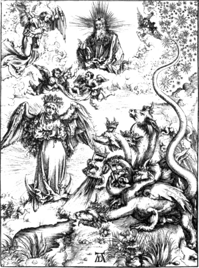
In 1502 a pirated edition of those cuts was published at Strasburg by
Jerome Greff, who describes himself as a painter of Frankfort. In 1511
Durer published a second edition of the originals; and on the back of
the last cut but one is a caution addressed to the plagiary, informing
him of the Emperor’s order, prohibiting any one to copy the cuts or to
sell the spurious impressions within the limits of the German empire,
under the penalty of the confiscation of goods, and at the peril of
further punishment.V.18
Though no other wood engravings with Durer’s mark are found with a
date till 1504, yet it is highly probable that several subjects of his
designing were engraved between 1498, the date of the Apocalypse, and
the above year; and it is also likely that he engraved several
copper-plates within this period; although, with the exception of that
of the four naked women, there are only four known which contain a date
earlier than 1505. About the commencement of 1506 Durer visited Venice,
where he remained till October in the same year. Eight letters which he
addressed to Bilibald Pirkheimer from Venice, are printed in the tenth
volume of Von Murr’s Journal. In the first letter, which is dated on the
day of the Three Kings of Cologne, 1506, he informs his friend that he
was employed to paint a picture for the German church at Venice, for
which he was to receive a hundred and ten Rhenish guilders,V.19 and that
he expects to have it ready to place above the altar a month after
Easter. He expresses a hope that he will be enabled to repay out of this
money what he had borrowed of Pirkheimer. From this letter it seems
evident that Durer’s circumstances were not then in a very flourishing
state, and that he had to depend on his exertions for the means of
living. The comparatively trifling sums which he mentions as having sent
to his mother and his wife sufficiently declare that he had not left a
considerable sum at home. He also says, that should his wife want more
money, her father must assist her, and that he will honourably repay him
on his return.
242
In the second letter, after telling Pirkheimer that he has no other
friend but him on earth, he expresses a wish that he were in Venice to
enjoy the pleasant company that he has met with there. The following
passage, which occurs in this letter, is, perhaps, the most interesting
in the collection: “I have many good friends among the Italians,
who warn me not to eat or drink with their painters, of whom several are
my enemies, and copy my picture in the church and others of mine,
wherever they can find them; and yet they blame them, and say they are
not according to ancient art, and therefore not good. Giovanni BelliniV.20
however has praised me highly to several gentlemen, and wishes to have
something of my doing. He called on me himself, and requested that I
would paint a picture for him, for which he said he would pay me well.
People are all surprised that I should be so much thought of by a person
of his reputation. He is very old, but is still the best painter of them
all. The things which pleased me eleven years ago, please me no longer.
If I had not seen it myself I could not have believed it. You must also
know that there are many better painters within this city than Master
Jacob is without, although Anthony Kolb swears that there is not on
earth a better painter than Jacob.V.21 The others laugh, and say if he were
good for anything he would live in Venice.”
The greater part of the other six letters are chiefly occupied with
accounts of his success in executing sundry little commissions with
which he had been entrusted by his friends, such as the purchase of a
finger-ring and two pieces of tapestry; to enquire after such Greek
books as had been recently published; and to get him some crane
feathers. The sixth and seventh letters are written in a vein of humour
which at the present time would be called gross. Von Murr illustrates
one passage by a quotation from Swift which is not remarkable for its
delicacy; and he also says that Durer’s eighth letter is written in the
humorous style of that writer. Those letters show that chastity was not
one of Bilibald Pirkheimer’s virtues; and that the learned counsellor of
the imperial city of Nuremberg was devoted “tam Veneri quam Mercurio.”V.22
In the fourth letter Durer says that the painters were much opposed
243
to him; that they had thrice compelled him to go before the magistracy;
and that they had obliged him to give four florins to their society. In
the seventh letter, he writes as follows about the picture which he had
painted for the German church: “I have through it received great
praise, but little profit. I might well have gained two hundred
ducats in the same time, and all the while I laboured most diligently in
order that I might get home again. I have given all the painters a
rubbing down who said that I could engraveV.23 well, but that in
painting I knew not how to manage my colours. Everybody here says they
never saw colours more beautiful.” In his last letter, which is dated,
“at Venice, I know not what day of the month, but about the
fourteenth day after Michaelmas, 1506,” he says that he will be ready to
leave that city in about ten days; that he intends to proceed to
Bologna, and after staying there about eight or ten days for the sake of
learning some secrets in perspective, to return home by way of Venice.
He visited Bologna as he intended; and was treated with great respect by
the painters of that city. After a brief stay at Bologna, he returned to
Nuremberg; and there is no evidence of his ever having visited Italy
again.
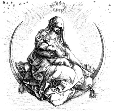
In 1511, the second of Durer’s large works engraved on wood appeared
at Nuremberg. It is generally entitled the History of the Virgin, and
consists of nineteen large cuts, each about eleven inches and three
quarters high, by eight inches and a quarter wide, with a vignette of
smaller size which ornaments the title-page.V.24 Impressions are to be
found without any accompanying text, but the greater number have
explanatory verses printed from type at the back. The cut here
represented is a reduced copy of the vignette on the title-page. The
Virgin
244
is seen seated on a crescent, giving suck to the infant Christ; and her
figure and that of the child are drawn with great feeling. Of all
Durer’s Madonnas, whether engraved on wood or copper, this, perhaps, is
one of the best. Her attitude is easy and natural, and happily
expressive of the character in which she is represented—that of a
nursing mother. The light and shade are well contrasted; and the folds
of her ample drapery, which Durer was fond of introducing whenever he
could, are arranged in a manner which materially contributes to the
effect of the engraving.
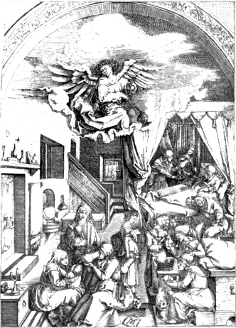
The following cuts are reduced copies of two of the larger subjects
of the same work. That which is here given represents the birth of the
Virgin; and were it not for the angel who is seen swinging a censer at
the top of the room, it might be taken for the accouchement of a German
burgomaster’s wife in the year 1510. The interior is apparently that of
a house in Nuremberg of Durer’s own time, and the figures introduced
245
are doubtless faithful copies, both in costume and character, of such
females as were generally to be found in the house of a German tradesman
on such an occasion. From the number of cups and flagons that are seen,
we may be certain that the gossips did not want liquor; and that in
Durer’s age the female friends and attendants on a groaning woman were
accustomed to enjoy themselves on the birth of a child over a cheerful
cup. In the fore-ground an elderly female is perceived taking a draught,
without measure, from a flagon; while another, more in the distance and
farther to the right, appears to be drinking, from a cup, health to the
infant which a woman like a nurse holds in her arms. An elderly female,
sitting by the side of the bed, has dropped into a doze; but whether
from the effects of the liquor or long watching it would not be easy to
divine. On the opposite side of the bed a female figure presents a
caudle, with a spoon in it, to St. Anne, the mother of the Virgin, while
another is seen filling a goblet of wine. At the bottom of the cut is
Durer’s mark on a tablet. The original cut is not remarkable for the
excellence of its engraving, but it affords a striking example of the
little attention which Durer, in common with most other German painters
of that period, paid to propriety of costume in the treatment of such
subjects. The piece is Hebrew, of the age of Herod the Great; but the
scenery, dresses, and decorations are German, of the time of
Maximilian I.
The second specimen of the large cuts of Durer’s Life of the Virgin,
given on the next page, represents the Sojourn of the Holy Family in
Egypt. In the fore-ground St. Joseph is seen working at his business as
a carpenter; while a number of little figures, like so many Cupids, are
busily employed in collecting the chips which he makes and in putting
them into a basket. Two little winged figures, of the same family as the
chip-collectors, are seen running hand-in-hand, a little more in
the distance to the left, and one of them holds in his hand a plaything
like those which are called “windmills” in England, and are cried about
as “toys for girls and boys,” and sold for a halfpenny each, or
exchanged for old pewter spoons, doctors’ bottles, or broken
flint-glass. To the right the Virgin, a matronly-looking figure, is
seen sitting spinning, and at the same time rocking with her foot the
cradle in which the infant Christ is asleep. Near the Virgin are St.
Elizabeth and her young son, the future Baptist. At the head of the
cradle is an angel bending as if in the act of adoration; while another,
immediately behind St. Elizabeth, holds a pot containing flowers. In the
sky there is a representation of the Deity, with the Holy Ghost in the
shape of a dove. The artist has not thought it necessary to mark the
locality of the scene by the introduction of pyramids and temples in the
back-ground, for the architectural parts of his subject, as well
246
as the human figures, have evidently been supplied by his own country. Durer’s mark is at
the bottom of the cut on the right.
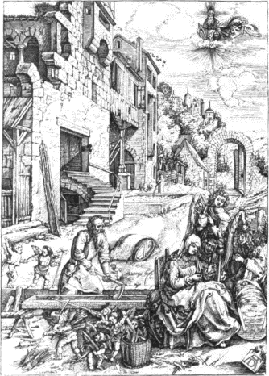
Christ’s Passion, consisting of a series of eleven large wood-cuts
and a vignette, designed by Albert Durer, appeared about the same time
as his History of the Virgin.V.25 The descriptive matter was compiled
by Chelidonius; and, in the same manner as in the History of the Virgin,
a certain number of impressions were printed without any
explanatory text.V.26 The large subjects are about fifteen inches and a
247
half high, by eleven inches and an eighth wide. The following cut is a
reduced copy of the vignette on the title-page.
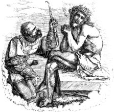
The subject is Christ mocked; but the artist has at the same time
wished to express in the figure of Christ the variety of his sufferings:
the Saviour prays as if in his agony on the mount; near him lies the
instrument of his flagellation; his hands and feet bear the marks of the
nails, and he appears seated on the covering of his sepulchre. The
soldier is kneeling and offering a reed as a sceptre to Christ, whom he
hails in derision as King of the Jews.
The three following cuts are reduced copies of the same number in the
Passion of Christ. In the cut of the Last Supper, in the next page,
cross-hatching is freely introduced, though without contributing much to
the improvement of the engraving; and the same effect in the wall to the
right, in the groins of the roof, and in the floor under the table,
might be produced by much simpler means. No artist, I am persuaded,
would introduce such work in a design if he had to engrave it himself.
The same “colour” might be produced by single lines which could be
executed in a third of the time required to cut out the interstices of
the cross-hatchings. Durer’s mark is at the bottom of the cut, and the
date 1510 is perceived above it, on the frame of the table.
The cut on page 249, from the Passion, Christ bearing his Cross, is
highly characteristic of Durer’s style; and the original is one of the
best of all the wood engravings which bear his mark. The characters
introduced are such as he was fondest of drawing; and most of the heads
and figures may be recognised in several other engravings either
executed by himself on copper or by others on wood from his designs.
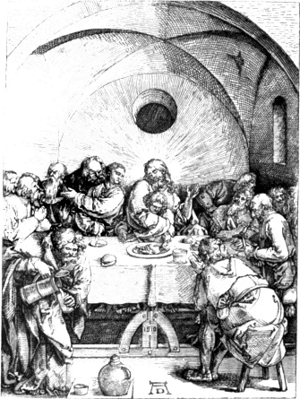
The figure which is seen holding a kind of halbert in his right hand
is a favourite with Durer, and is introduced, with trifling variations,
in at
248
least half a dozen of his subjects; and the horseman with a kind of
turban on his head and a lance in his left hand occurs no less
frequently. St. Veronica, who is seen holding the “sudarium,” or holy
handkerchief, in the fore-ground to the left, is a type of his female
figures; the head of the executioner, who is seen urging Christ forward,
is nearly the same as that of the mocker in the preceding vignette; and
Simon the Cyrenian, who assists to bear the cross, appears to be the
twin-brother of St. Joseph in the Sojourn in Egypt. The figure of
Christ, bowed down with the weight of the cross, is well drawn, and his
face is strongly expressive of sorrow. Behind Simon the Cyrenian are the
Virgin and St. John; and under the gateway a man with a haggard visage
is perceived carrying a ladder with his head between the steps. The
artist’s mark is at the bottom of the cut.
249
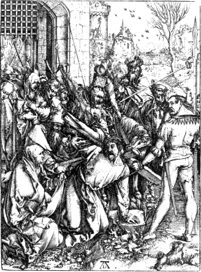
The subject of the cut on page 250, from Christ’s Passion, represents
the descent into hell and the liberation of the ancestors. The massive
gates of the abode of sin and death have been burst open, and the banner
of the cross waves triumphant. Among those who have already been
liberated from the pit of darkness are Eve, who has her back turned
towards the spectator, and Adam, who in his right hand holds an apple,
the symbol of his fall, and with his left supports a cross, the emblem
of his redemption. In the front is Christ aiding others of the ancestors
to ascend from the pit, to the great dismay of the demons whose realm is
invaded. A horrid monster, with a head like that of a boar
surmounted with a horn, aims a blow at the Redeemer with a kind of rude
lance; while another, a hideous compound of things that swim, and
walk, and fly, sounds a note of alarm to arouse his kindred fiends. On a
stone,
250
above the entrance to the pit, is the date 1510; and Durer’s mark is
perceived on another stone immediately before the figure of Christ. This
cut, with the exception of the frequent cross-hatching, is designed more
in the style and spirit of the artist’s illustrations of the Apocalypse
than in the manner of the rest of the series to which it belongs.
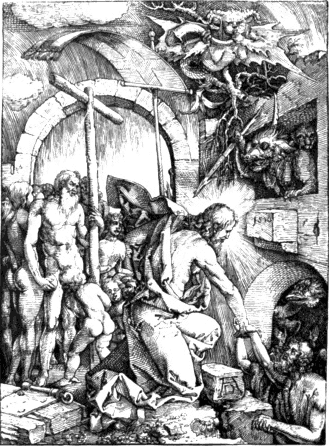
The preceding specimens of wood-cuts from Durer’s three great works,
the Apocalypse, the History of the Virgin, and Christ’s Passion, afford
not only an idea of the style of his drawing on wood, but also of the
progress made by the art of wood engraving from the time of his first
availing himself of its capabilities. In Durer’s designs on wood we
perceive not only more correct drawing and a greater knowledge of
composition, but also a much more effective combination of light and
shade, than are to be found in any wood-cuts executed before the date of
his earliest work, the Apocalypse, which appeared in 1498. One of the
251
peculiar advantages of wood engraving is the effect with which strong
shades can be represented; and of this Durer has generally availed
himself with the greatest skill. On comparing his works engraved on wood
with all those previously executed in the same manner, we shall find
that his figures are not only much better drawn and more skilfully
grouped, but that instead of sticking, in hard outline, against the
back-ground, they stand out with the natural appearance of rotundity.
The rules of perspective are more attentively observed; the back-grounds
better filled; and a number of subordinate objects introduced—such
as trees, herbage, flowers, animals, and children—which at once
give a pleasing variety to the subject and impart to it the stamp of
truth. Though the figures in many of his designs may not indeed be
correct in point of costume,—for though he diligently studied
Nature, it was only in her German dress,—yet their character and
expression are generally appropriate and natural. Though incapable of
imparting to sacred subjects the elevated character which is given to
them by Raffaele, his representations are perhaps no less like the
originals than those of the great Italian master. It is indeed highly
probable that Albert Durer’s German representatives of saints and
apostles are more like the originals than the more dignified ideal
portraits of Raffaele. The latter, from his knowledge of the antique,
has frequently given to his Jews a character and a costume borrowed from
Grecian art of the age of Phidias; while Albert Durer has given to them
the features and invested them in the costume of Germans of his own
age.
Shortly after the appearance of the large cuts illustrative of
Christ’s Passion, Durer published a series of thirty-seven of a smaller
size, also engraved on wood, which Mr. Ottley calls “The Fall of Man and
his Redemption through Christ,” but which Durer himself refers to under
the title of “The Little Passion.”V.27 All the cuts of the Little Passion,
as well as seventeen of those of the Life of the Virgin and several
other pieces of Durer’s, were imitated on copper by Marc Antonio
Raimondi, the celebrated Italian engraver, who is said to have sold his
copies as the originals. Vasari, in his Life of Marc Antonio, says that
when Durer was informed of this imitation of his works, he was highly
incensed and
252
he set out directly for Venice, and that on his arrival there he
complained of Marc Antonio’s proceedings to the government; but could
obtain no further redress than that in future Marc Antonio should not
put Durer’s mark to his engravings.
Though it is by no means unlikely that Durer might apply to the
Venetian government to prevent the sale of spurious copies of his works
within the bounds of their jurisdiction, yet Vasari’s account of his
personally visiting that city for the purpose of making a complaint
against Marc Antonio, and of the government having forbid the latter to
affix Durer’s mark to his engravings in future, is certainly incorrect.
The History of the Virgin, the earliest of the two works which were
almost entirely copied by Marc Antonio, was not published before 1510,
and there is not the slightest evidence of Durer having re-visited
Venice after his return to Nuremberg about the latter end of 1506.
Bartsch thinks that Vasari’s account of Durer’s complaining to the
Venetian government against Marc Antonio is wholly unfounded; not only
from the fact of Durer not having visited Venice subsequent to 1506, but
from the improbability of his applying to a foreign state to prohibit a
stranger from copying his works. Mr. Ottley, however,—after
observing that Marc Antonio had affixed Durer’s mark to his copies of
the seventeen cuts of the Life of the Virgin and of some other single
subjects, but had omitted it in his copies of the cuts of the Little
Passion,—thus expresses his opinion with respect to the
correctness of this part of Vasari’s account: “That Durer, who enjoyed
the especial protection of the Emperor Maximilian, might be enabled
through the imperial ambassador at Venice to lay his complaints before
the government, and to obtain the prohibition before stated, may I think
readily be imagined; and it cannot be denied, that the circumstance of
Marc Antonio’s having omitted to affix the mark of Albert to the copies
which he afterwards made of the series of the ‘Life of Christ’ is
strongly corroborative of the general truth of the story.”V.28 As two of
the cuts in the Little Passion, which Mr. Ottley here calls the “Life of
Christ,” are dated 1510, and as, according to Mr. Ottley, Marc Antonio
arrived at Rome in the course of that year, it is difficult to conceive
how the government of Venice could have the power to prohibit a native
of Bologna, living in a state beyond their jurisdiction, from affixing
Albert Durer’s mark to such engravings as he might please to copy from
the works of that master.
253
Among the more remarkable single subjects engraved on wood from
Durer’s designs, the following are most frequently referred to: God the
Father bearing up into heaven the dead body of Christ, with the date
1511; a Rhinoceros, with the date 1515; a portrait of Ulrich
Varnbuler, with the date 1522; a large head of Christ crowned with
thorns, without date; and the Siege of a fortified town, with the date
1527. In the first of the above-named cuts, God the Father wears a kind
of tiara like that of the Pope, and above the principal figure the Holy
Ghost is seen hovering in the form of a dove. On each side of the Deity
and the dead Christ are angels holding the cross, the pillar to which
Christ was bound when he was scourged, the crown of thorns, the sponge
dipped in vinegar, and other emblems of the Passion. At the foot are
heads with puffed-out cheeks intended to represent the winds. This cut
is engraved in a clearer and more delicate style than most of the other
subjects designed by Durer on wood. There are impressions of the
Rhinoceros, and the portrait of Varnbuler, printed in chiaro-scuro from
three blocks; and there are also other wood-cuts designed by Durer
executed in the same manner. The large head of Christ, which is engraved
in a coarse though spirited and effective manner, is placed by Bartsch
among the doubtful pieces ascribed to Durer; but Mr. Ottley says,
“I am unwilling to deny to Durer the credit of this admirable and
boldly executed production.”V.29 The cut representing the siege of a
fortified town is twenty-eight inches and three-eighths wide, by eight
inches and seven eighths high. It has been engraved on two blocks, and
afterwards pasted together. A number of small figures are
introduced, and a great extent of country is shown in this cut, which
is, however, deficient in effect; and the little figures, though drawn
with great spirit, want relief, which causes many of them to appear as
if they were riding or walking in the air. The most solid-like part of
the subject is the sky; there is no ground for most of the figures to
stand on; and those which are in the distance are of the same size as
those which are apparently a mile or two nearer the spectator. There is
nothing remarkable in the execution, and the design adds nothing to
Durer’s reputation.
The great patron of wood engraving in the earlier part of the
sixteenth century was the Emperor Maximilian I, who,—besides
originating the three works, known by the titles of Sir Theurdank, the
254
Wise King, and the Triumphs of Maximilian, which he caused to be
illustrated with numerous wood engravings, chiefly from the designs of
Hans Burgmair and Hans Schaufflein,—employed Albert Durer to make
the designs for two other series of wood engravings, a Triumphal
Car and a Triumphal Arch.
The Triumphal Car, engraved by Jerome Resch from Durer’s
drawings on wood, is frequently confounded with the larger work called
the Triumphs of Maximilian, most of the designs of which were made by
Hans Burgmair. It is indeed generally asserted that all the designs for
the latter work were made by Hans Burgmair; but I think I shall be able
to show, in a subsequent notice of that work, that some of the cuts
contained in the edition published at Vienna and London in 1796 were, in
all probability, designed by Albert Durer. The Triumphal Car consists of
eight separate pieces, which, when joined together, form a continuous
subject seven feet four inches long; the height of the highest
cut—that containing the car—is eighteen inches from the base
line to the upper part of the canopy above the Emperor’s head. The
Emperor is seen seated in a highly ornamented car, attended by female
figures, representing Justice, Truth, Clemency, and other virtues, who
hold towards him triumphal wreaths. One of the two wheels which are seen
is inscribed “Magnificentia,” and the other “Dignitas;” the driver of
the car is Reason,—“Ratio,”—and one of the reins is marked
“Nobilitas,” and the other “Potentia.” The car is drawn by six pair of
horses splendidly harnessed, and each horse is attended by a female
figure. The names of the females at the head of the first pair from the
car are “Providentia” and “Moderatio;” of the second, “Alacritas” and
“Opportunitas;” of the third, “Velocitas” and “Firmitudo;” of the
fourth, “Acrimonia” and “Virilitas;” of the fifth, “Audacia” and
“Magnanimitas;” and the attendants on the leaders are “Experientia” and
“Solertia.” Above each pair of horses there is a portion of explanatory
matter printed in letter-press; and in that above the leading pair is a
mandate from the Emperor Maximilian, dated Inspruck, 1518, addressed to
Bilibald Pirkheimer, who appears to have suggested the subject; and in
the same place is the name of the inventor and designer, Albert Durer.V.30
The first edition of those cuts appeared at Nuremberg in 1522; and in
some copies the text is in German, and in others in Latin. A second
edition, with the text in Latin only, was printed at the same place in
the following year. A third edition, from the same blocks, was
255
printed at Venice in 1588; and a fourth at Amsterdam in 1609. The
execution of this subject is not particularly good, but the action of
the horses is generally well represented, and the drawing of some of the
female figures attending them is extremely spirited. Guido seems to have
availed himself of some of the figures in Durer’s Triumphal Car in his
celebrated fresco of the Car of Apollo, preceded by Aurora, and
accompanied by the Hours.
It is said that the same subject painted by Durer himself is still to
be seen on the walls of the Town-hall of Nuremberg; but how far this is
correct I am unable to positively say; for I know of no account of the
painting written by a person who appears to have been acquainted with
the subject engraved on wood. Dr. Dibdin, who visited the Town-hall of
Nuremberg in 1818, speaks of what he saw there in a most vague and
unsatisfactory manner, as if he did not know the Triumphal Car designed
by Durer from the larger work entitled the Triumphs of Maximilian. The
notice of the learned bibliographer, who professes to be a great admirer
of the works of Albert Durer, is as follows: “The great boast of the
collection [in the Town-hall of Nuremberg] are the Triumphs of
Maximilian executed by Albert Durer,—which, however, have
by no means escaped injury.”V.31 It is from such careless
observations as the preceding that erroneous opinions respecting the
Triumphal Car and the Triumphs of Maximilian are continued and
propagated, and that most persons confound the two works; which is
indeed not surprising, seeing that Dr. Dibdin himself, who is considered
to be an authority on such matters, has afforded proof that he does not
know one from the other. In the same volume that contains the notice of
the “Triumphs of Maximilian” in the Town-hall of Nuremberg, Dr. Dibdin
says that he saw the “ORIGINAL
PAINTINGS” from which the large wood blocks were taken for the
well-known work entitled the “Triumphs of the Emperor
Maximilian,” in large folio, in the Imperial Library at Vienna.V.32
Such observations are very much in the style of the countryman’s, who
had seen two genuine skulls of Oliver Cromwell,—one at
Oxford, and another in the British Museum. Though I have not been able
to ascertain satisfactorily the subject of Durer’s painting in the
Town-hall of Nuremberg, I am inclined to think that it is the
Triumphal Car of Maximilian. In a memorandum in the hand-writing
of Nollekins, preserved with his copies of Durer’s Triumphal Car and
Triumphal Arch of Maximilian, in the Print Room of the British Museum,
it is said, though erroneously, that the former is painted in the
Town-hall of Augsburg with the figures as large as life.
The Triumphal Arch of the Emperor Maximilian, engraved on wood
from Durer’s designs, consists of ninety-two separate pieces, which,
when
256
joined together, form one large composition about ten feet and a half
high by nine and a half wide, exclusive of the margins and five folio
sheets of explanatory matter by the projector of the design, John
Stabius, who styles himself the historiographer and poet of the Emperor,
and who says, at the commencement of his description, that this arch was
drawn “after the manner of those erected in honour of the Roman emperors
at Rome, some of which are destroyed and others still to be seen.” In
the arch of Maximilian are three gates or entrances; that in the centre
is named the Gate of Honour and Power; that to the left the Gate of
Fame; and that to the right the Gate of Nobility.V.33 Above the middle
entrance is what Stabius calls the “grand tower,” surmounted with the
imperial crown, and containing an inscription in German to the memory of
Maximilian. Above and on each side of the gates or entrances, which are
of very small dimensions, are portraits of the Roman emperors from the
time of Julius Cæsar to that of Maximilian himself; there are also
portraits of his ancestors, and of kings and princes with whom he was
allied either by friendship or marriage; shields of arms illustrative of
his descent or of the extent of his sovereignty; with representations of
his most memorable actions, among which his adventures in the Tyrolean
Alps, when hunting the chamois, are not forgotten. Underneath each
subject illustrative of his own history are explanatory verses, in the
German language, engraved on wood; and the names of the kings and
emperors, as well as the inscriptions explanatory of other parts of the
subject, are also executed in the same manner. The whole subject is, in
fact, a kind of pictorial epitome of the history of the German
empire; representing the succession of the Roman emperors, and the more
remarkable events of Maximilian’s own reign; with illustrations of his
descent, possessions, and alliances.
At the time of Maximilian’s death, which happened in 1519, this great
work was not finished; and it is said that Durer himself did not live to
see it completed, as one small block remained to be engraved at the
period of his death, in 1528. At whatever time the work might be
finished, it certainly was commenced at least four years before the
Emperor’s death, for the date 1515 occurs in two places at the foot of
the subject. Though Durer’s mark is not to be found on any one of the
cuts, there can be little doubt of his having furnished the designs for
the whole. In the ninth volume of Von Murr’s Journal it is stated that
Durer received a hundred guilders a year from the
Emperor,—probably on account of this large work; and in the same
volume there is a letter
257
of Durer’s addressed to a friend, requesting him to apply to the emperor
on account of arrears due to him. In this letter he says that he has
made many drawings besides the “Tryumps”V.34 for the emperor; and
as he also thrice mentions Stabius, the inventor of the Triumphal Arch,
there can be little doubt but that this was the work to which he
alludes.
As a work of art the best single subjects of the Triumphal Arch will
not bear a comparison with the best cuts in Durer’s Apocalypse, the
History of the Virgin, or Christ’s Passion; and there are several in
which no trace of his effective style of drawing on wood is to be found.
Most of the subjects illustrative of the emperor’s battles and
adventures are in particular meagre in point of drawing, and deficient
in effect. The whole composition indeed appears like the result of
continued application without much display of talent. The powers of
Durer had been evidently constrained to work out the conceptions of the
historiographer and poet, Stabius; and as the subjects were not the
suggestions of the artist’s own feelings, it cannot be a matter of
surprise that we should find in them so few traces of his genius. The
engraving of the cuts is clear, but not generally effective; and the
execution of the whole, both figures and letters, would occupy a single
wood engraver not less than four years; even allowing him to engrave
more rapidly on pear-tree than a modern wood engraver does on box; and
supposing him to be a master of his profession.
From his varied talents and the excellence which he displayed in
every branch of art that he attempted, Albert Durer is entitled to rank
with the most extraordinary men of his age. As a painter he may be
considered as the father of the German school; while for his fidelity in
copying nature and the beauty of his colours he may bear a comparison
with most of the Italian artists of his own age. As an engraver on
copper he greatly excelled all who preceded him; and it is highly
questionable if any artist since his time, except Rembrandt, has painted
so many good pictures and engraved so many good copper-plates. But
besides excelling as an engraver on copper after the manner in which the
art had been previously practised, giving to his subjects a breadth of
light and a depth of shade which is not to be found in the productions
of the earlier masters, he further improved the art by the invention of
258
etching,V.35 which enables the artist to work with greater
freedom and to give a variety and an effect to his subjects, more
especially landscapes, which are utterly unattainable by means of the
graver alone.
There are two subjects by Albert Durer, dated 1512, which Bartsch
thinks were etched upon plates of iron, but which Mr. Ottley considers
to have been executed upon plates of a softer metal than copper, with
the dry-point. There are, however, two undoubted etchings by Durer with
the date 1515; two others executed in the same manner are dated 1516;
and a fifth, a landscape with a large cannon in the fore-ground to
the left, is dated 1518. There is another undoubted etching by Durer,
representing naked figures in a bath; but it contains neither his mark
nor a date. The three pieces which Mr. Ottley thinks were not etched,
but executed on some soft kind of metal with the dry-point, are:
1. The figure of Christ, seen in front, standing, clothed with a
mantle, having his hands tied together, and on his head a crown of
thorns; date 1512. 2. St. Jerome seated amongst rocks, praying to a
crucifix, with a book open before him, and a lion below to the left;
date 1512. 3. The Virgin, seated with the infant Christ in her lap,
and seen in front, with St. Joseph behind her on the left, and on the
right three other figures; without mark or date.—One of the more
common of Durer’s undoubted etchings is that of a man mounted on a
unicorn, and carrying off a naked woman, with the date 1516.
Albert Durer not only excelled as a painter, an engraver on copper,
and a designer on wood, but he also executed several pieces of sculpture
with surprising delicacy and natural expression of character. An
admirable specimen of his skill in this department of art is preserved
in the British Museum, to which institution it was bequeathed by the
late
259
R. Payne Knight, Esq., by whom it was purchased at Brussels for
five hundred guineas upwards of forty years ago. This most exquisite
piece of sculpture is of small dimensions, being only seven and three
quarter inches high, by five and a half wide. It is executed in
hone-stone, of a cream colour, and is all of one piece, with the
exception of a dog and one or two books in front. The subject is the
naming of John the Baptist.V.36 In front, to the right, is an old
man with a tablet inscribed with Hebrew characters; another old man is
seen immediately behind him, further to the right; and a younger
man,—said to be intended by the artist for a portrait of
himself,—appears entering the door of the apartment. An old woman
with the child in her arms is seated near the figure with the tablet;
St. Elizabeth is perceived lying in bed, on the more distant side of
which a female attendant is standing, and on the other, nearer to the
spectator, an elderly man is seen kneeling. It is supposed that the
latter figure is intended for Zacharias, and that the artist had
represented him in the act of making signs to Elizabeth with his hands.
The figures in the fore-ground are executed in high relief, and the
character and expression of the heads have perhaps never been surpassed
in any work of sculpture executed on the same scale. Durer’s mark is
perceived on a tablet at the foot of the bed, with the date 1510. This
curious specimen of Durer’s talents as a sculptor is carefully preserved
in a frame with a glass before it, and is in most perfect condition,
with the exception of the hands of Zacharias and of Elizabeth, some of
the fingers of which are broken off.
Shortly after Whitsuntide, 1520, Durer set out from Nuremberg,
accompanied by his wife and her servant Susanna, on a visit to the
Netherlands; and as he took with him several copies of his principal
works, engravings on copper as well as on wood, and painted and drew a
260
number of portraits during his residence there, the journey appears to
have been taken as much with a view to business as pleasure. He kept a
journal from the time of his leaving Nuremberg till the period of his
reaching Cologne on his return, and from this curious record of the
artist’s travels the following particulars of his visit to the
Netherlands have been obtained.V.37
Durer proceeded from Nuremberg direct to Bamberg, where he presented to
the bishop a painting of the Virgin, with a copy of the Apocalypse and
the Life of the Virgin engraved on wood. The bishop invited Durer to his
table, and gave him a letter exempting his goods from toll, with three
others which were, most likely, letters of recommendation to persons of
influence in the Netherlands.V.38 From Bamberg, Durer proceeded by way
of Eltman, Sweinfurth, and Frankfort to Mentz, and from the latter city
down the Rhine to Cologne. In this part of his journey he seems to have
met with little which he deemed worthy of remark: at Sweinfurth Dr.
Rebart made him a present of some wine; at Mentz, Peter Goldsmith’s
landlady presented him with two flasks of the same liquor; and when Veit
Varnbuler invited him to dinner there, the tavern-keeper would not
receive any payment, but insisted on being Durer’s host himself. At
Lohnstein, on the Rhine, between Boppart and Coblentz, the
toll-collector, who was well acquainted with Durer’s wife, presented him
with a can of wine, and expressed himself extremely glad to see him.
From Cologne, Durer proceeded direct to Antwerp, where he took up his
abode in the house of “Jobst Planckfelt;” and on the evening of his
arrivalV.39 he was invited to a splendid supper by Bernard
Stecher, an
261
agent of the Fuggers, the celebrated family of merchants of Nuremberg,
and the most wealthy in Germany. On St. Oswald’s day, Sunday, 5th
August, the Painters’ Company of Antwerp invited Durer, with his wife
and her maid,V.40 to a grand entertainment in their hall, which was
ornamented in a splendid manner, and all the vessels on the table were
of silver. The wives of the painters were also present; and when Durer
was conducted to his seat at the table “all the company stood up on each
side, as if some great lord had been making his entrance.” Several
honourable persons, who had also been invited, bowed to him; and all
expressed their respect and their wishes to afford him pleasure. While
he was at table the messenger of the magistrates of Antwerp made his
appearance, and presented him in their name with four flaggons of wine,
saying, that the magistrates thus testified their respect and their
good-will towards him. Durer, as in duty bound, returned thanks, and
tendered to the magisterial body his humble service. After this little
affair was despatched, entered Peter the city carpenter in propria
persona, and presented Durer with two more flaggons of wine, and
complimented him with the offer of his services. After the party had
enjoyed themselves cheerfully till late in the night, they attended
Durer to his lodgings with torches in a most honourable manner,
expressing their good-will towards him, and their readiness to assist
him in whatever manner he might choose.—Shortly after this grand
Fellowship-feast, Durer was entertained by Quintin
Matsys,—frequently called the Blacksmith of Antwerp,—whose
celebrated picture of the Misers is now in the Royal Collection at
Windsor.
On the Sunday after the Assumption,V.41 Durer witnessed a grand
procession in honour of the Virgin, and the account which he has given
of it presents so curious a picture of the old religious pageantries
that it appears worthy of being translated without abridgement. “On the
Sunday after the Assumption of our Lady,” says the artist, “I saw
the grand procession from our Lady’s church at Antwerp, where all the
inhabitants of the city assembled, gentry as well as trades-people,
each, according to his rank, gayly dressed. Every class and fellowship
was distinguished by its proper badge; and large and valuable crosses
were borne before several of the crafts. There were also silver trumpets
of the old Frankish fashion; with German drums and fifes playing loudly.
I also saw in the street, marching after each other in rank, at a
certain
262
distance, the Goldsmiths, the Painters, the Masons, the Embroiderers,
the Statuaries, the Cabinet-makers, the Carpenters, the Sailors, the
Fishermen, the Butchers, the Curriers, the Weavers, the Bakers, the
Tailors, the Shoemakers, and all kinds of craftsmen with labourers
engaged in producing the necessaries of life. In the same manner came
the Shopkeepers and Merchants with their assistants. After these came
the Shooters, with firelocks, bows, and cross-bows, some on horseback
and some on foot; and after them came the City Guard. These were
followed by persons of the higher classes and the magistrates, all
dressed in their proper habits; and after them came a gallant troop
arrayed in a noble and splendid manner. In this procession were a number
of females of a religious order who subsist by means of their labour,
all clothed in white from head to foot, and forming a very pleasing
sight. After them came a number of gallant persons and the canons of our
Lady’s church, with all the clergy and scholars, followed by a grand
display of characters. Twenty men carried the Virgin and Christ, most
richly adorned, to the honour of God. In this part of the procession
were a number of delightful things, represented in a splendid manner.
There were several waggons in which were representations of ships and
fortifications. Then came a troop of characters from the Prophets in
regular order, followed by others from the New Testament, such as the
Annunciation, the Wise Men of the East, riding on great camels and other
wonderful animals, and the Flight into Egypt, all very skilfully
appointed. Then came a great dragon, and St. Margaret, with the image of
the Virgin at her girdle, exceedingly beautiful; and last St. George and
his squire. In this troop rode a number of boys and girls very
handsomely arrayed in various costumes, representing so many saints.
This procession, from beginning to end, was upwards of two hours in
passing our house; and there were so many things to be seen, that I
could never describe them all even in a book.”V.42
Though Durer chiefly resided at Antwerp during his stay in the
Netherlands, he did not entirely confine himself to that city, but
occasionally visited other places. On the 2nd of September 1520, he left
Antwerp for Brussels, proceeding by way of Malines and Vilvorde. When at
Brussels, he saw a number of valuable curiosities which had been sent to
the Emperor from Mexico, among which he enumerates a golden sun,
a fathom broad, and a silver moon of the same size, with weapons,
armour, and dresses, and various other admirable things of great beauty
and cost. He says that their value was estimated at a hundred thousand
guilders; and that he never saw any thing that pleased him so much in
his life. Durer was evidently fond of seeing sights; he speaks with
delight of the fountains, the labyrinths, and the parks in the
263
neighbourhood of the Royal Palace, which he says were like Paradise; and
among the wonders which he saw at Brussels, he notices a large fish-bone
which was almost a fathom in circumference and weighed fifteen
“centner;”V.43 a great bed that would hold fifty men; and a
stone which fell from the sky in a thunder-storm in presence of the
Count of Nassau. He also mentions having seen at Antwerp the bones of a
giant who had been eighteen feet high. Durer and his wife seem to have
had a taste for zoology: Herr Lazarus Von Ravenspurg complimented him
with a monkey; and “Signor Roderigo,” a Portuguese, presented his
ill-tempered spouse with a green parrot.
When at Brussels, Durer painted the portrait of the celebrated
Erasmus, from whom, previous to leaving Antwerp, he had received as a
present a Spanish mantle and three portraits. He remained about a week
at Brussels, during which time he drew or painted seven portraits; and
in his Journal he makes the following memorandum: “Item, six persons
whose likenesses I have taken at Brussels, have not given me anything.”
Among those portraits was that of Bernard Van Orley, an eminent Flemish
painter who had studied under Raffaele, and who at that time held the
office of painter to the Archduchess Margaret, regent of the
Netherlands, and aunt of the Emperor Charles V. When at Brussels,
Durer bought for a stiverV.44 two copies of the “Eulenspiegel,”
a celebrated engraving by Lucas Van Leyden, now of very great
rarity.
After remaining at Antwerp till the latter end of September, Durer
proceeded to Aix-la-Chapelle, where, on the 23rd of October, he
witnessed the coronation of the Emperor Charles V. He afterwards
proceeded to Cologne, where, on the Sunday after All Saints’ day, he saw
a grand banquet and dance given by the emperor, from whom, on the Monday
after Martinmas day, he received the appointment of court-painter to his
Imperial Majesty. When at Cologne, Durer bought a copy of the
“Condemnation of that good man, Martin Luther, for a white-penny.” This
Condemnation was probably a copy of the bull of excommunication issued
against Luther by Pope Leo X. on 20th June
264
1520. In a day or two after receiving his appointment, Durer left
Cologne and proceeded down the Rhine, and visited Nimeguen. He then went
to Bois-le-duc, where he was entertained by Arnold de Beer,
a painter of considerable reputation in his day, and treated with
great respect by the goldsmiths of the place. On the Thursday after the
Presentation of the Virgin,V.45—21st November,—Durer
again arrived at Antwerp. “In the seven weeks and upwards that I was
absent,” he writes in his Journal, “my wife and her maid spent seven
gold crowns. The first had her pocket cut off in St. Mary’s church on
St. Mary’s day; there were two guilders in it.”
On the 3rd of December, Durer left Antwerp on a short journey through
Zealand, proceeding by way of Bergen-op-Zoom. In the Abbey at Middleburg
he saw the great picture of the Descent from the Cross by Mabeuse; of
which he remarks that “it is better painted than drawn.” When he was
about to land at Armuyden, a small town on the island of Walcheren,
the rope broke, and a violent wind arising, the boat which he was in was
driven out to sea. Some persons, however, at length came to their
assistance, and brought all the passengers safely ashore. On the Friday
after St. Lucia’s day he again returned to Antwerp, after having been
absent about twelve days.
On Shrove Tuesday, 1521, the company of goldsmiths invited Durer and
his wife to a dinner, at which he was treated with great honour; and as
this was an early meal, he was enabled at night to attend a grand
banquet to which he was invited by one of the chief magistrates of
Antwerp. On the Monday after his entertainment by the goldsmiths he was
invited to another grand banquet which lasted two hours, and where he
won, at some kind of game, two guilders of Bernard of Castile. Both at
this and at the magistrates’ banquet there was masquerading. At another
entertainment given by Master Peter the Secretary, Durer and Erasmus
were present. He was not idle at this period of festivity, but drew
several portraits in pencil. He also made a drawing for “Tomasin,” and a
painting of St. Jerome for Roderigo of Portugal, who appears to have
been one of the most liberal of all Durer’s Antwerp friends. Besides the
little green parrot which he gave his wife, he also presented Durer with
one for himself; he also gave him a small cask of comfits, with various
other sweetmeats, and specimens of the sugar-cane. He also made him a
present of cocoa-nuts and of several other things; and shortly before
the painting was finished, Signor Roderigo
265
gave him two large pieces of Portuguese gold coin, each of which was
worth ten ducats.
On the Saturday after Easter, Durer visited Bruges, where he saw in
St. James’s church some beautiful paintings by Hubert Van Eyck and Hugo
Vander Goes; and in the Painters’ chapel, and in other churches, he saw
several by John Van Eyck; he also mentions having seen, in St. Mary’s
church, an image of the Virgin in alabaster by Michael Angelo. The guild
of painters invited him to a grand banquet in their hall. Two of the
magistrates, Jacob and Peter Mostaert, presented him with twelve
flaggons of wine; and on the conclusion of the entertainment, all the
company, amounting to sixty persons, accompanied him with torches to his
lodgings. He next visited Ghent, where the company of painters also
treated him with great respect. He there saw, in St. John’s church, the
celebrated picture of the Elders worshipping the Lamb, from the
Revelations, painted by John Van Eyck for Philip the Good, Duke of
Burgundy. Durer thus expresses his opinion of it: “This is a well
conceived and capital picture; the figures of Eve, the Virgin, and God
the Father, are, in particular, extremely good.” After being about a
week absent, he again returned to Antwerp, where he was shortly after
seized with an intermitting fever, which was accompanied with a violent
head-ache and great sense of weariness. This illness, however, does not
seem to have lasted very long; his fever commenced in the third week
after Easter, and on Rogation Sunday he attended the marriage feast of
“Meister Joachim,”—probably Joachim Patenier, a landscape
painter whom Durer mentions in an earlier part of his Journal.
Durer was a man of strong religious feelings; and when Luther began
to preach in opposition to the church of Rome, he warmly espoused his
cause. The following passages from his Journal sufficiently demonstrate
the interest which he felt in the success of the great champion of the
Reformation. Luther on his return from Worms, where he had attended the
Diet under a safe-conduct granted by the Emperor Charles V, was waylaid,
on 4th May 1521, by a party of armed men, who caused him to descend from
the light waggon in which he was travelling, and to follow them into an
adjacent wood. His brother James, who was in the waggon with him, made
his escape on the first appearance of the horsemen. Luther having been
secured, the driver and others who were in the waggon were allowed to
pursue their journey without further hindrance. This secret apprehension
of Luther was, in reality, contrived by his friend and supporter,
Frederick, Elector of Saxony,V.46 in order to withdraw him
266
for a time from the apprehended violence of his enemies, whose hatred
towards him had been more than ever inflamed by the bold and undisguised
statement of his opinions at Worms. Luther’s friends, being totally
ignorant of the elector’s design, generally supposed that the
safe-conduct had been disregarded by those whose duty it was to respect
it, and that he had been betrayed and delivered into the hands of his
enemies. Durer, on hearing of Luther’s apprehension, writes in his
Journal as follows.
“On the Friday after Whitsuntide, 1521, I heard a report at Antwerp,
that Martin Luther had been treacherously seized; for the herald of the
Emperor Charles, who attended him with a safe-conduct, and to whose
protection he was committed, on arriving at a lonely place near
Eisenach, said he durst proceed no further, and rode away. Immediately
ten horsemen made their appearance, and carried off the godly man thus
betrayed into their hands. He was indeed a man enlightened by the Holy
Ghost, and a follower of the true Christian faith. Whether he be yet
living, or whether his enemies have put him to death, I know not;
yet certainly what he has suffered has been for the sake of truth, and
because he has reprehended the abuses of unchristian papacy, which
strives to fetter Christian liberty with the incumbrance of human
ordinances, that we may be robbed of the price of our blood and sweat,
and shamefully plundered by idlers, while the sick and needy perish
through hunger. Above all, it is especially distressing to me to think
that God may yet allow us to remain under the blind doctrine which those
men called ‘the fathers’ have imagined and set forth, whereby the
precious word is either in many places falsely expounded or not at all
observed.”V.47
After indulging in sundry pious invocations and reflections to the
extent of two or three pages, Durer thus proceeds to lament the supposed
death of Luther, and to invoke Erasmus to put his hand to the work from
which he believed that Luther had been removed. “And is Luther dead? Who
henceforth will so clearly explain to us the Gospel? Alas! what might he
not have written for us in ten or twenty years? Aid me,
267
all pious Christians, to bewail this man of heavenly mind, and to pray
that God may send us another as divinely enlightened. Where,
O Erasmus, wilt thou remain? Behold, now, how the tyranny of might
and the power of darkness prevail. Hear, thou champion of Christ! Ride
forward, defend the truth, and deserve the martyr’s crown, for thou art
already an old man.V.48 I have heard from thy own mouth that thou hast
allotted to thyself two years yet of labour in which thou mightst still
be able to produce something good; employ these well for the benefit of
the Gospel and the true Christian faith: let then thy voice be heard,
and so shall not the see of Rome, the gates of Hell, as Christ saith,
prevail against thee. And though, like thy master, thou shouldst bear
the scorn of the liars, and even die a short time earlier than thou
otherwise mightst, yet wilt thou therefore pass earlier from death unto
eternal life and be glorified through Christ. If thou drinkest of the
cup of which he drank, so wilt thou reign with him and pronounce
judgment on those who have acted unrighteously.”V.49
About this time a large wood-cut, of which the following is a reduced
copy, was published; and though the satire which it contains will apply
equally to any monk who may be supposed to be an instrument of the
devil, it was probably directed against Luther in particular, as a
teacher of false doctrine through the inspiration of the father of lies.
In the cut the arch-enemy, as a bag-piper, is seen blowing into the ear
of a monk, whose head forms the “bag,” and by skilful fingering causing
the nose, elongated in the form of a “chanter,” to discourse sweet
music. The preaching friars of former times were no less celebrated for
their nasal melody than the “saints” in the days of Cromwell.
A serious
268
portrait of Luther, probably engraved or drawn on wood by Hans Baldung
Grün, a pupil of Durer, was also published in 1521. It is printed
in a quarto tract, entitled, “Acta et Res gestæ D. Martini Lutheri
in Comitiis Principum Vuormaciæ, Anno MDXXI,” and also in a tract, written by Luther
himself in answer to Jerome Emser, without date, but probably printed at
Wittenberg about 1523. In this portrait, which bears considerable
resemblance to the head forming the bag of Satan’s pipe, Luther appears
as if meditating on a passage that he has just read in a volume which he
holds open; his head is surrounded with rays of glory; and the Holy
Ghost, in the form of a dove, appears as if about to settle on his
shaven crown. In an impression now before me, some one, apparently a
contemporary, who thought that Luther’s inspiration was derived from
another source, has with pen and ink transformed the dove into one of
those unclean things between bat and serpent, which are
269
supposed to be appropriate to the regions of darkness, and which are
generally to be seen in paintings and engravings of the temptation of
St. Anthony.
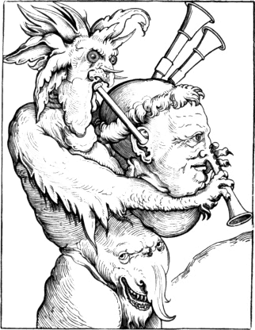
A week after Corpus Christi dayV.50 Durer left Antwerp for Malines,
where the Archduchess Margaret, the aunt of the emperor Charles V, was
then residing. He took up his lodgings with Henry de Bles,
a painter of considerable reputation, called Civetta by the
Italians, from the owl which he painted as a mark in most of his
pictures; and the painters and statuaries, as at Antwerp and other
places, invited him to an entertainment and treated him with great
respect. He waited on the archduchess and showed her his portrait of the
emperor, and would have presented it to her, but she would by no means
accept of it;—probably because she could not well receive such a
gift without making the artist a suitable return, for it appears, from a
subsequent passage in Durer’s Journal, that she had no particular
objection to receive other works of art when they cost her nothing.
In the course of a few days Durer returned to Antwerp, where he
shortly afterwards saw Lucas Van Leyden, the celebrated painter and
engraver, whose plates at that time were by many considered nearly equal
to his own. Durer’s brief notice of his talented contemporary is as
follows: “Received an invitation from Master Lucas, who engraves on
copper. He is a little man, and a native of Leyden in Holland.”
Subsequently he mentions having drawn Lucas’s portrait in crayons; and
having exchanged some of his own works to the value of eight florins for
a complete set of Lucas’s engravings. Durer in this part of his Journal,
after enumerating the portraits he had taken and the exchanges he had
made since his return from Malines to Antwerp, thus speaks of the manner
in which he was rewarded: “In all my transactions in the
Netherlands—for my paintings, drawings, and in disposing of my
works—both with high and low I have had the disadvantage. The Lady
Margaret, especially, for all that I have given her and done for her,
has not made me the least recompense.”
Durer now began to make preparations for his return home. He engaged
a waggoner to take him and his wife to Cologne; he exchanged a portrait
of the emperor for some white English cloth; and, on 1st July, he
borrowed of Alexander Imhoff a hundred gold guilders to be repaid at
Nuremberg; another proof that Durer, though treated with great
distinction in the Low Countries, had not derived much pecuniary
advantage during the period of his residence there. On the 2nd July,
when he was about to leave Antwerp, the King of Denmark, Christian II,
who had recently arrived in Flanders, sent for him to take his
270
portrait. He first drew his majesty with black chalk—mit der
Kohlen—and afterwards went with him to Brussels, where he appears
to have painted his portrait in oil colours, and for which he received
thirty florins. At Brussels, on the Sunday before St. Margaret’s Day,V.51
the King of Denmark gave a grand banquet to the Emperor and the
Archduchess Margaret, to which Durer had the honour of being invited,
and failed not to attend. On the following Friday he left Brussels to
return to Nuremberg, proceeding by way of Aix-la-Chapelle to
Cologne.
Out of a variety of other matters which Durer has mentioned in his
Journal, the following—which could not be conveniently given in
chronological order in the preceding abstract—may not, perhaps, be
wholly uninteresting. He painted a portrait of one Nicholas, an
astronomer, who was in the service of the King of England, and who was
of great service to Durer on several occasions.V.52 He gave one florin and
eight stivers for wood, but whether for drawing on, or for fuel, is
uncertain. He only mentions having made two drawings on wood during his
residence in the Low Countries, and both were of the arms of Von
Rogendorff, noticed at page 236. In one of those instances, he
distinctly says that he made the drawing, “das man’s schneiden
mag”—that it may be engraved. The word “man’s” clearly
shows that it was to be engraved by another person.—He mentions
that since Raffaele’s death his works are
dispersed—“verzogen,”—and that one of that master’s
pupils, by name “Thomas Polonier,” had called on him and made him a
present of an antique ring. In a subsequent passage he calls this person
“Thomas Polonius,” and says that he had given him a set of his works to
be sent to Rome and exchanged for “Raphaelische
Sache”—things by Raffaele.
It has been said, though without sufficient authority, that Durer,
weary of a home where he was made miserable by his bad-tempered,
avaricious wife, left Nuremberg, and visited the Low Countries alone for
the purpose of avoiding her constant annoyance. There is, however, no
evidence of Durer’s visiting the Low Countries previous to 1520, when he
was accompanied by his wife; nor is there any authentic record of his
ever again visiting Flanders subsequent to the latter end of August
1521, when he left Brussels to return to Nuremberg. In 1522, Durer
published the first edition of the Triumphal Car of the Emperor
Maximilian, the designs for which had probably been made five or six
years before. One of the best portraits drawn by Durer on wood also
bears the date 1522. It is that of his friend Ulrich Varnbuler,V.53—mentioned at page 253,—and is of large
size, being about
271
seventeen inches high by twelve and three-fourths wide. The head is full
of character, and the engraving is admirably executed. From 1522 to
1528, the year of Durer’s death, he seems to have almost entirely given
up the practice of drawing on wood, as there are only three cuts with
his mark which contain a date between those years; they are his own arms
dated 1523; his own portrait dated 1527; and the siege of a fortified
city previously noticed at page 253, also dated 1527. The following is a
reduced copy of the cut of Durer’s arms. The pair of doors on the
shield—in German Durer or Thurer—is a rebus of
the artist’s name; after the manner of the Lucys of our own country, who
bore three luces,V.54 or pikes—fish, not
weapons—argent, in their coat of arms.
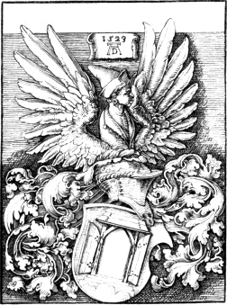
272
The last of Durer’s engravings on copper is a portrait of Melancthon,
dated 1526, the year in which the meek and learned reformer visited
Nuremberg. The following is a reduced copy of his own portrait, perhaps
the last drawing that he made on wood. It is probably a good likeness of
the artist; at any rate it bears a great resemblance to the portrait
said to be intended for Durer’s own in his carving of the naming of St.
John, of which some account is given at page 259. The size of the
original is eleven inches and three-eighths high by ten inches wide.
According to Bartsch, the earliest impressions have not the arms and
mark, and are inscribed above the border at the top: “Albrecht
Durer’s Conterfeyt”—Albert Durer’s portrait. It would seem
that the block had been preserved for many years subsequent to the date,
for I have now before me an impression, on comparatively modern paper,
from which it is evident that at the time of its being taken, the block
had been much corroded by worms.
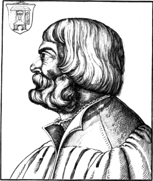
It is probable that between 1522 and 1528 the treatises of which
Durer is the author were chiefly composed. Their Titles are An Essay on
the Fortification of Towns and Villages; Instructions for Measuring
273
with the Rule and Compass; and On the Proportions of the Human Body.V.55
They were all published at Nuremberg with illustrative wood-cuts; the
first in 1527, and the other two in 1528. It is to the latter work that
Hogarth alludes, in his Analysis of Beauty, when he speaks of Albert
Durer, Lamozzo, and others, having “puzzled mankind with a heap of
minute unnecessary divisions” in their rules for correctly drawing the
human figure.
After a life of unremitted application,—as is sufficiently
proved by the number of his works as a painter, an engraver, and a
designer on wood,—Albert Durer died at Nuremberg on 6th April
1528, in the fifty-seventh year of his age. His wife’s wretched temper
had unquestionably rendered the latter years of his life very unhappy,
and in her eagerness to obtain money she appears to have urged her
husband to what seems more like the heartless toil of a slave than an
artist’s exercise of his profession. It is said that her sitting-room
was under her husband’s studio, and that she was accustomed to give an
admonitory knock against the ceiling whenever she suspected that he was
“not getting forward with his work.” The following extracts from a
letter, written by Bilibald Pirkheimer shortly after Durer’s death, will
show that common fame has not greatly belied this heartless, selfish
woman, in ascribing, in a great measure, her husband’s death to the
daily vexation which she caused him, and to her urging him to continual
application in order that a greater sum might be secured to her on his
decease. The passages relating to Durer in Pirkheimer’s letter are to
the following effect.V.56
“I have indeed lost in Albert one of the best friends I had on earth;
and nothing pains me more than the thought of his death having been so
melancholy, which, next to the will of Providence, I can ascribe to
no one but his wife, for she fretted him so much and tasked him so hard
that he departed sooner than he otherwise would. He was dried up like a
bundle of straw; durst never enjoy himself nor enter into company. This
bad woman, moreover, was anxious about that for which she had no
occasion to take heed,—she urged him to labour day and night
solely that he might earn money, even at the cost of his life, and leave
it to her; she was content to live despised, as she does still, provided
Albert might leave her six thousand guilders. But she cannot
274
enjoy them: the sum of the matter is, she alone has been the cause of
his death. I have often expostulated with her about her fretful,
jealous conduct, and warned her what the consequences would be, but have
only met with reproach. To the friends and sincere well-wishers of
Albert she was sure to be the enemy; while such conduct was to him a
cause of exceeding grief, and contributed to bring him to the grave.
I have not seen her since his death; she will have nothing to say
to me, although I have on many occasions rendered her great service.
Whoever contradicts her, or gives not way to her in all things, is sure
to incur her enmity; I am, therefore, better pleased that she
should keep herself away. She and her sister are not indeed women of
loose character; but, on the contrary, are, as I believe, of honest
reputation and religious; one would, however, rather have one of the
other kind who otherwise conducts herself in a pleasant manner, than a
fretful, jealous, scolding wife—however devout she may
be—with whom a man can have no peace either day or night. We must,
however, leave the matter to the will of God, who will be gracious and
merciful to Albert, for his life was that of a pious and righteous man.
As he died like a good Christian, we may have little doubt of his
salvation. God grant us grace, and that in his own good time we may
happily follow Albert.”
The popular error,—as I believe it to be,—that Albert
Durer was an engraver on wood, has not tended, in England, where his
works as a painter are but little known, to increase his reputation.
Many persons on looking over the wood engravings which bear his mark
have thought but meanly of their execution; and have concluded that his
abilities as an artist were much over-rated, on the supposition that his
fame chiefly rested on the presumed fact of his being the engraver of
those works. Certain writers, too, speaking of him as a painter and an
engraver on copper, have formed rather an unfavourable estimate of his
talents, by comparing his pictures with those of his great Italian
contemporaries,—Leonardo da Vinci, Michael Angelo, and
Raffaele,—and by judging of his engravings with reference to the
productions of modern art, in which the freedom and effect of etching
are combined with the precision and clearness of lines produced by the
burin. This, however, is judging the artist by an unfair standard.
Though he has not attained, nor indeed attempted, that sublimity which
seems to have been principally the aim of the three great Italian
masters above mentioned, he has produced much that is beautiful,
natural, and interesting; and which, though it may not stand so high in
the scale of art as the grand compositions of his three great
contemporaries, is no less necessary to its completion. The field which
he cultivated, though not yielding productions so noble or splendid as
theirs, was of greater extent and afforded greater variety. If they have
left us more sublime conceptions of past and future events,
275
Durer has transmitted to us more faithful pictures of the characters,
manners, and customs of his own times. Let those who are inclined to
depreciate his engravings on copper, as dry and meagre when compared
with the productions of modern engravers, consider the state in which he
found the art; and let them also recollect that he was not a mere
translator of another person’s ideas, but that he engraved his own
designs. Setting aside his merits as a painter, I am of opinion
that no artist of the present day has produced, from his own designs,
three such engravings as Durer’s Adam and Eve, St. Jerome seated in his
chamber writing, and the subject entitled Melancolia.V.57 Let it also not
be forgotten that to Albert Durer we owe the discovery of etching;
a branch of the art which gives to modern engravers, more
especially in landscape, so great an advantage over the original
inventor. Looking impartially at the various works of Durer, and
considering the period and the country in which he lived, few,
I think, will venture to deny that he was one of the greatest
artists of his age. The best proof indeed of the solidity of his fame is
afforded by the esteem in which his works have been held for three
centuries by nearly all persons who have had opportunities of seeing
them, except such as have, upon narrow principles, formed an exclusive
theory with respect to excellence in art. With such authorities nothing
can be beautiful or interesting that is not grand; every country
parish church should be built in the style of a Grecian temple; our
woods should grow nothing but oaks; a country gentleman’s dove-cot
should be a fac-simile of the lantern of Demosthenes; the sign of the
Angel at a country inn should be painted by a Guido; and a picture
representing the meeting of the British Association for the Advancement
of Science should be in the style of Raffaele’s School of Athens.
Lucas Cranach, a painter of great repute in his day, like his
contemporary Durer has also been supposed to be the engraver of the
wood-cuts which bear his mark, but which, in all probability, were only
drawn by him on the block and executed by professional wood engravers.
The family name of this artist was Sunder, and he is also sometimes
called Muller or Maler—Painter—from his profession. He
acquired the name Cranach, or Von Cranach, from Cranach, a town in
the territory of Bamberg, where he was born in 1470. He enjoyed the
patronage of the electoral princes of Saxony, and one of the most
frequent of his marks is a shield of the arms of that family. Another of
his marks is a shield with two swords crossed; a third is a kind of
dragon; and a fourth is
276
the initial letters of his name, L. C. Sometimes two or three of
those marks are to be found in one cut. There are four engravings on
copper with the mark 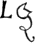 which are generally ascribed to
this artist. That they are from his designs is very likely, but whether
they were engraved by himself or not is uncertain. One of them bears the
date 1492, and it is probable that they were all executed about the same
period. Two of those pieces were in the possession of Mr. Ottley, who
says, “Perhaps the two last characters of the mark may be intended for
Cr.” It seems, however, more likely that the last character is
intended for the letter which it most resembles—a Z, and that it
denotes the German word zeichnet—that is “drew;” in
the same manner as later artists occasionally subjoined the letter P or
F to their names for Pinxit or Fecit, respectively as they
might have painted the picture or engraved the plate.
One of the earliest chiaro-scuros, as has before been observed,
printed from three blocks, is from a design of Lucas Cranach. It is
dated 1509, nine years before the earliest chiaro-scuro with a date
executed by Ugo da Carpi, to whom Vasari and others have erroneously
ascribed the invention of this mode of imitating a drawing by
impressions from two or more wood-blocks. The subject, like that of the
following specimen, is a Repose in Egypt, but is treated in a different
manner,—the Virgin being represented giving suck to the infant
Christ.
The wood engravings that contain Cranach’s mark are not so numerous
as those which contain the mark of Albert Durer, and they are also
generally inferior to the latter both in effect and design. The
following reduced copy of a cut which contains three of Cranach’s four
marks will afford some idea of the style of his designs on wood. As a
specimen of his ability in this branch of art it is perhaps superior to
the greater part of his designs executed in the same manner. The subject
is described by Bartsch as a Repose in Egypt. The action of the youthful
angels who are dancing round the Virgin and the infant Christ is
certainly truly juvenile if not graceful. The two children seen up the
tree robbing an eagle’s nest are perhaps emblematic of the promised
peace of Christ’s kingdom and of the destruction of the power of Satan:
“No lion shall be there nor any ravenous beast shall go up thereon, it
shall not be found there; but the redeemed shall walk there.”V.58 In the
right-hand corner at the top is the shield of the arms of Saxony; and to
the left, also at the top, is another of Cranach’s marks—a shield
with two swords crossed; in the right-hand corner at the bottom is a
third mark,—the figure of a kind of dragon with a ring in its
mouth. The size of the original cut is thirteen inches and one-fourth
high by nine inches and one-fourth wide.
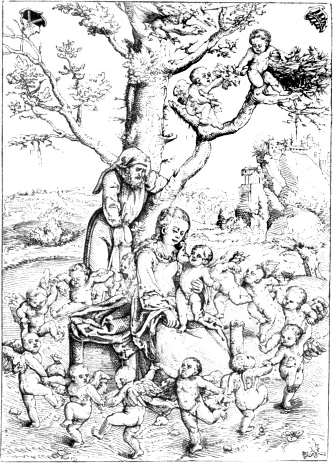
277
Cranach was much esteemed in his own country as a painter, and
several of his pictures are still regarded with admiration. He was in
great favour with John Frederick, Elector of Saxony,V.59 and at one
period of his life was one of the magistrates of Wittenberg. He died at
Weimar, on 16th October 1553, aged eighty-three.
Another eminent painter who has been classed with Durer and Cranach
as a wood engraver is Hans Burgmair, who was born at Augsburg about
1473. The mark of this artist is to be found on a
278
great number of wood engravings, but beyond this fact there is not the
least reason to suppose that he ever engraved a single block. To those
who have described Burgmair as a wood engraver from this circumstance
only, a most satisfactory answer is afforded by the fact that
several of the original blocks of the Triumphs of Maximilian, which
contain Burgmair’s mark, have at the back the names of the different
engravers by whom they were executed. As we have here positive evidence
of cuts with Burgmair’s mark being engraved by other persons, we cannot
certainly conclude that any cut, from the mere fact of its containing
his mark, was actually engraved by himself. Next to Albert Durer he was
one of the best designers on wood of his age; and as one of the early
masters of the German school of painting he is generally considered as
entitled to rank next to the great painter of Nuremberg. It has indeed
been supposed that Burgmair was a pupil of Durer; but for this opinion
there seems to be no sufficient ground. It is certain that he made many
of the designs for the wood-cuts published under the title of The
Triumphs of Maximilian; and it is also probable that he drew nearly all
the cuts in the book entitled Der Weiss Kunig—The Wise King,
another work illustrative of the learning, wisdom, and adventures of the
Emperor Maximilian.V.60 Before proceeding, however, to give any account of
those works, it seems advisable to give two specimens from a different
series of wood-cuts of his designing, and to briefly notice two or three
of the more remarkable single cuts that bear his mark.
The cut on the opposite page is a reduced copy from a series designed
by Burgmair. The subject is Samson and Delilah, and is treated according
to the old German fashion, without the least regard to propriety of
costume. Samson is represented like a grisly old German baron of
Burgmair’s own time, with limbs certainly not indicating extraordinary
strength; and Delilah seems very deliberately engaged in cutting off his
hair. The wine flagon and fowl, to the left, would seem to indicate the
danger of yielding to sensual indulgence. The original cut is surrounded
by an ornamental border, and is four inches and five-eighths high by
three inches and five-eighths wide. Burgmair’s mark H. B. is at the
bottom of the cut, to the right.
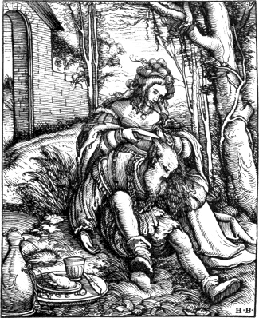
The cut on page 280 is also a reduced copy from one of the same
series, and is a proof that those who call the whole by the general
title of “Bible Prints” are not exactly correct in their nomenclature.
The somewhat humorous-looking personage, whom a lady is using as her
pad, is thus described in an inscription underneath the cut: “Aristotle,
279
a Greek, the son of Nicomachus. A disciple of Plato, and the master
of Alexander the Great.” Though Aristotle is said to have been extremely
fond of his wife Pythaïs, and to have paid her divine honours after her
death, there is no record, I believe, of her having amused herself
with riding on her husband’s back. The subject is probably intended to
illustrate the power of the fair sex over even the wisest of mortals,
and to show that philosophers themselves when under such influence
occasionally forget their character as teachers of men, and exhibit
themselves in situations which scarcely an ass might envy. The original
is surrounded by a border, and is four inches and five-eighths high by
three inches and five-eighths wide.
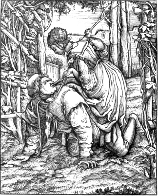
There are several chiaro-scuros from wood-blocks with Burgmair’s
mark. One of the earliest is a portrait of “Joannes Paungartner,” from
two blocks, with the date 1512; another of St. George on horseback, from
two blocks, engraved by Jost or Josse de Negher, without date;
a third representing a young woman flying from Death, who is seen
killing
280
a young man,—from three blocks, without date; and a fourth of the
Emperor Maximilian on horseback, from two blocks, with the date
1518.
The best cuts of Burgmair’s designing, though drawn with great spirit
and freedom, are decidedly inferior to the best of the wood-cuts
designed by Albert Durer. Errors in perspective are frequent in the cuts
which bear his mark; his figures are not so varied nor their characters
so well indicated as Durer’s; and in their arrangement, or grouping, he
is also inferior to Durer, as well as in the art of giving effect to his
subjects by the skilful distribution of light and shade. The cuts in the
Wise King, nearly all of which are said to have been designed by him,
are, for the most part, very inferior productions both with respect to
engraving and design. His merits as a designer on wood are perhaps shown
to greater advantage in the Triumphs of Maximilian than in any other of
his works executed in this manner.—Some writers have asserted that
Burgmair died in 1517, but this is certainly incorrect; for there is a
281
portrait of him, with that of his wife on the same pannel, painted by
himself in 1529, when he was fifty-six years old. Underneath this
painting was a couplet to the following effect:
Our likeness such as here you view;—
The glass itself was not more true.V.61
Burgmair, like Cranach, lived till he was upwards of eighty; but it
would seem that he had given up drawing on wood for many years previous
to his death, for I am not aware of there being any wood-cuts designed
by him with a date subsequent to 1530. He died in 1559, aged
eighty-six.
Hans Schäufflein is another of those old German painters who are
generally supposed to have been also engravers on wood. Bartsch,
however, thinks that, like Durer, Cranach, and Burgmair, he only made
the designs for the wood-cuts which are ascribed to him, and that they
were engraved by other persons. Schäufflein was born at Nuremberg in
1483; and it is said that he was a pupil of Albert Durer. Subsequently
he removed to Nordlingen, a town in Suabia, about sixty miles to
the south-westward of Nuremberg, where he died in 1550.
The wood-cuts in connexion with which Schäufllein’s name is most
frequently mentioned are the illustrations of the work usually called
the Adventures of Sir Theurdank,V.62 an allegorical poem, in folio, which
is
282
said to have been the joint composition of the Emperor Maximilian and
his private secretary Melchior Pfintzing, provost of the church of St.
Sebald at Nuremberg. Though Köhler, a German author, in an Essay on
Sir Theurdank,—De inclyto libro poetico Theurdank,—has
highly praised the poetical beauties of the work, they are certainly not
such as are likely to interest an English reader. “The versified
allegory of Sir Theurdank,” says Küttner,V.63 “is deficient in true
Epic beauty; it has also nothing, as a poem, of the romantic
descriptions of the thirteenth century,—nothing of the delicate
gallantry of the age of chivalry and the troubadours. The machinery
which sets all in action are certain personifications of Envy, restless
Curiosity, and Daring; these induce the hero to undertake many perilous
adventures, from which he always escapes through Understanding and
Virtue. Such is the groundwork of the fable which Pfintzing constructs
in order to extol, under allegorical representations, the perils,
adventures, and heroic deeds of the emperor. Everything is described so
figuratively as to amount to a riddle; and the story proceeds with
little connexion and without animation. There are no striking
descriptive passages, no Homeric similes, and no episodes to allow the
reader occasionally to rest; in fact, nothing admirable,
spirit-stirring, or great. The poem is indeed rather moral than epic;
Lucan’s Pharsalia partakes more of the epic character than Pfintzing’s
Theurdank. Pfintzing, however, surpasses the Cyclic poets alluded to by
Horace.”V.64
The first edition of Sir Theurdank was printed by Hans Schönsperger
the elder, at Nuremberg in 1517; and in 1519 two editions appeared at
Augsburg from the press of the same printer. As Schönsperger’s
established printing-office was at the latter city and not at Nuremberg,
Panzer has supposed that the imprint of Nuremberg in the first edition
might have been introduced as a compliment to the nominal author,
Melchior Pfintzing, who then resided in that city. Two or three other
editions of Sir Theurdank, with the same cuts, appeared between 1519 and
1602; but Küttner, in his Characters of German poets and prose-writers,
says that in all those editions alterations have been made in the
text.
The character in which Sir Theurdank is printed is of great beauty
283
and much ornamented with flourishes. Several writers, and among others
Fournier, who was a type-founder and wood-engraver, have erroneously
described the text as having been engraved on blocks of wood. This very
superficial and incorrect writer also states that the cuts contained in
the volume are “chefs-d’œuvres de la gravure en bois.”V.65 His opinion
with respect to the cuts is about as correct as his judgment respecting
the type; the most of them are in fact very ordinary productions, and
are neither remarkable for execution nor design. He also informs his
readers that he has discovered on some of those cuts an H and an S,
accompanied with a little shovel, and that they are the monogram of
Hans Sebalde, or Hans Schäufflein. By Hans Sebalde he
perhaps means Hans Sebald Behaim, an artist born at Nuremberg in 1500,
and who never used the letters H and S, accompanied with a little
shovel, as a monogram. Fournier did not know that this mark is used
exclusively by Hans Schäufflein; and that the little shovel, or baker’s
peel,—called in old German, Schäufflein, or Scheuffleine,—is
a rebus of his surname. The careful examination of writers more
deserving of credit has completely proved that the text of the three
earliest editions—those only in which it was asserted to be from
engraved wood-blocks—is printed from moveable types of metal.
BreitkopfV.66 has observed, that in the edition of 1517 the letter
i, in the word shickhet, in the second line following the
eighty-fourth cut, is inverted; and Panzer and Brunner have noticed
several variations in the orthography of the second and third editions
when compared with the first.
There are a hundred and eighteen wood-cuts in the Adventures of Sir
Theurdank, which are all supposed to have been designed, if not
engraved, by Hans Schäufflein, though his mark, ,
occurs on not more than five or six. From the general similarity of
style I have, however, no doubt that the designs were all made by the
same person, and I think it more likely that Schaufflein was the
designer than the engraver. The cut on page 284 is a reduced copy of
that numbered 14 in the first edition. The original is six inches and
one-fourth high by five inches and a half wide. In this cut, Sir
Theurdank is seen, in the dress of a hunter, encountering a huge bear;
while to the right is perceived one of his tempters,
Fürwittig—restless Curiosity,—and to the left, on
284
horseback, Theurdank’s squire, Ernhold. The title of the chapter, or
fytte, to which this cut is prefixed is to the following effect: “How
Fürwittig led Sir Theurdank into a perilous encounter with a she-bear.”
The subject of the thirteenth chapter is his perilous encounter with a
stag, and in the fifteenth we are entertained with the narration of one
of his adventures when hunting the chamois.
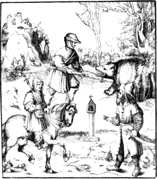
The opposite cut is a reduced copy of No. 111 in the Adventures of
Sir Theurdank. The title of the chapter to which this cut is prefixed
is: “How Unfalo [one of Theurdank’s tempters] was hung.” A monk at
the foot of the gallows appears to pray for the culprit just turned off;
while Ernold seems to be explaining to a group of spectators to the left
the reason of the execution. The cut illustrative of the 110th chapter
represents the beheading of “Fürwittig;” and in the 112th, “Neydelhart,”
the basest of Theurdank’s enemies, is seen receiving the reward of his
perfidy by being thrown into a moat. The two original cuts which have
been selected as specimens of the wood engravings in the Adventures of
Sir Theurdank, though not the best, are perhaps, in point of design and
execution, rather superior to two-thirds of those contained in the work.
285
The copies, though less in size, afford a tolerably correct idea of the
style of the originals, which no one who is acquainted with the best
wood-cuts engraved after the designs of Durer and Burgmair will assert
to be “chefs-d’œuvres” of the art of wood engraving.
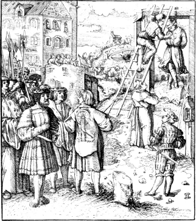
There are a number of wood-cuts which contain Hans Schäufflein’s
mark, though somewhat different from that which occurs in the Adventures
of Sir Theurdank; the S being linked with one of the upright lines of
the H, instead of being placed between them. When the letters are
combined in this manner, there are frequently two little shovels
crossed, “in saltire,” as a herald would say, instead of a single one as
in Sir Theurdank. The following mark, ,
occurs on a series of wood-cuts illustrative of Christ’s Passion,
printed at Frankfort by C. Egenolf, 1542; on the cuts in a German
almanack, Mentz, 1545, and 1547; and on several single subjects executed
about that period. This mark, it is said, distinguishes the designs of
Hans Schaufflein the younger. Bartsch, however, observes, that “what
Strutt has said about there being two persons of this name, an elder and
a younger, seems to be a mere conjecture.”
286
The book entitled Der Weiss Kunig—the Wise King—is
another of the works projected by the Emperor Maximilian in order to
inform the world of sundry matters concerning his father Frederick III,
his own education, warlike and perilous deeds, government, wooing, and
wedding. This work is in prose; and though Marx Treitzsaurwein, the
emperor’s secretary, is put forth as the author, there is little doubt
of its having been chiefly composed by Maximilian himself. About 1512 it
appears that the materials for this work were prepared by the emperor,
and that about 1514 they were entrusted to his secretary,
Treitzsaurwein, to be put in order. It would appear that before the work
was ready for the press Maximilian had died; and Charles V. was too
much occupied with other matters to pay much attention to the
publication of an enigmatical work, whose chief object was to celebrate
the accomplishments, knowledge, and adventures of his grandfather. The
obscurity of many passages in the emperor’s manuscript seems to have, in
a great measure, retarded the completion of the work. There is now in
the Imperial Library at Vienna a manuscript volume of queries respecting
the doubtful passages in the Weiss Kunig; and as each had ultimately to
be referred to the emperor, it would seem that, from the pressure of
more important business and his increased age, he had wanted leisure and
spirits to give the necessary explanations. In the sixteenth century,
Richard Strein, an eminent philologer, began a sort of commentary or
exposition of the more difficult passages in the Wise King; and
subsequently his remarks came into the hands of George Christopher von
Schallenberg, who, in 1631, had the good fortune to obtain at Vienna
impressions of most of the cuts which were intended by the emperor to
illustrate the work, together with several of the original drawings.
Treitzsaurwein’s manuscript, which for many years had been preserved at
Ambras in the Tyrol, having been transferred to the Imperial Library at
Vienna, and the original blocks having been discovered in the Jesuits’
College at Gratz in Stiria, the text and cuts were printed together, for
the first time, in a folio volume, at Vienna in 1775.V.67
It is probable that the greater part, if not all the cuts, were
finished previous to the emperor’s death; and impressions of them, very
likely taken shortly after the blocks were finished, were known to
collectors long before the publication of the book. The late Mr. Ottley
had seventy-seven of the series, apparently taken as proofs by means of
a
287
press. The paper on which these cuts are impressed appears to have
consisted of fragments, on one side of which there had previously been
printed certain state papers of the Emperor Maximilian, dated 1514. They
were sold at the sale of the late Mr. Ottley’s engravings in 1838, and
are now in the Print Room of the British Museum. In the volume printed
at Vienna in 1775, there are two hundred and thirty-sevenV.68 large
cuts, of which number ninety-two contain Burgmair’s mark, H. B; one
contains Schaufflein’s mark; another the mark of Hans Springinklee; and
a third, a modern cut, is marked “F. F. S. V. 1775.”
Besides the large cuts, all of which are old except the last noticed,
there are a few worthless tail-pieces of modern execution, one of which,
a nondescript bird, has been copied by Bewick, and is to be found
at page 144 of the first edition of his Quadrupeds, 1790.
The cuts in the Weiss Kunig, with respect to the style in which they
are designed, bear considerable resemblance to those in Sir Theurdank;
and from their execution it is evident that they have been cut by
different engravers; some of them being executed in a very superior
manner, and others affording proofs of their either being cut by a
novice or a very indifferent workman. It has been said that all those
which contain the mark of Hans Burgmair show a decided superiority in
point of engraving; but this assertion is not correct, for several of
them may be classed with the worst executed in the volume. The unequal
manner in which the cuts with Burgmair’s mark are executed is with me an
additional reason for believing that he only furnished the designs for
professional wood engravers to execute, and never engraved on wood
himself.
It seems unnecessary to give any specimens of the cuts in the Weiss
Kunig, as an idea of their style may be formed from those given at pages
284 and 285 from Sir Theurdank; and as other specimens of Burgmair’s
talents as a designer on wood will be given subsequently from the
Triumphs of Maximilian. The following abstract of the titles of a few of
the chapters may perhaps afford some idea of the work, while they prove
that the education of the emperor embraced a wide circle, forming almost
a perfect Cyclopædia. The first fifteen chapters give an account of the
marriage of the Old Wise King, Frederick III, the father of Maximilian,
with Elenora, daughter of Alphonso V, King of Portugal; his journey
to Rome and his coronation
288
there by the pope; with the birth, and christening of Maximilian, the
Young Wise King. About thirty-five chapters, from XV. to L., are chiefly occupied
with an account of Maximilian’s education. After learning to write, he
is instructed in the liberal arts; and after some time devoted to
“Politik,” or King-craft, he proceeds to the study of the
black-art, a branch of knowledge which the emperor subsequently
held to be vain and ungodly. He then commences the study of history,
devotes some attention to medicine and law, and learns the Italian and
Bohemian languages. He then learns to paint; studies the principles of
architecture, and tries his hand at carpentry. He next takes lessons in
music; and about the same time acquires a practical knowledge of the art
of cookery:—the Wise King, we are informed, was a person of nice
taste in kitchen affairs, and had a proper relish for savoury and
well-cooked viands. To the accomplishment of dancing he adds a knowledge
of numismatics; and, after making himself acquainted with the mode of
working mines, he learns to shoot with the hand-gun and the cross-bow.
The chase, falconry, angling, and fowling next occupy his attention; and
about the same time he learns to fence, to tilt, and to manage the great
horse. His course of education appears to have been wound up with
practical lessons in the art of making armour, in gunnery, and in
fortification. From the fiftieth chapter to the conclusion, the book is
chiefly filled with accounts of the wars and adventures of Maximilian,
which are for the most part allegorically detailed, and require the
reader to be well versed in the true history of the emperor to be able
to unriddle them. Küttner says that, notwithstanding its allegories and
enigmatical allusions, the Weiss Kunig is a work which displays much
mind in the conception and execution, and considerable force and
elegance of language; and that it chiefly wants a more orderly
arrangement of the events. “Throughout the whole,” he adds, “there are
evidences of a searching genius, improved by science and a knowledge of
the affairs of the world.”V.69
The series of wood-cuts called the Triumphs of Maximilian are, both
with respect to design and engraving, the best of all the works thus
executed by command of the emperor to convey to posterity a pictorial
representation of the splendour of his court, his victories, and the
extent of his possessions. This work appears to have been commenced
about the same time as the Weiss Kunig; and from the subject,
a triumphal procession, it was probably intended to be the last of
the series of wood-cuts by which he was desirous of disseminating an
opinion of his power and his fame. Of those works he only lived to see
one published,—the Adventures of Sir Theurdank; the Wise King, the
Triumphal Car, the Triumphal Arch, and the
289
Triumphal Procession, appear to have been all unfinished at the time of
his decease in 1519. The total number of cuts contained in the latter
work, published under the title of the Triumphs of Maximilian, in 1796,
is one hundred and thirty-five; but had the series been finished
according to the original drawings, now preserved in the Imperial
Library at Vienna, the whole number of the cuts would have been about
two hundred and eighteen. Of the hundred and thirty-five published there
are about sixteen designed in a style so different from the rest, that
it is doubtful if they belong to the same series; and this suspicion
receives further confirmation from the fact that the subjects of those
sixteen doubtful cuts are not to be found among the original designs. It
would therefore seem, that, unless some of the blocks have been lost or
destroyed, little more than one-half of the cuts intended for the
Triumphal Procession were finished when the emperor’s death put a stop
to the further progress of the work. It is almost certain, that none of
the cuts were engraved after the emperor’s death; for the date,
commencing with 1516, is written at the back of several of the original
blocks, and on no one is it later than 1519.
The plan of the Triumphal Procession,—consisting of a
description of the characters to be introduced, the order in which they
are to follow each other, their arms, dress, and
appointments,—appears to have been dictated by the emperor to his
secretary Treitzsaurwein, the nominal author of the Weiss Kunig, in
1512. In this manuscript the subjects for the rhyming inscriptions
intended for the different banners and tablets are also noted in prose.
Another manuscript, in the handwriting of Treitzsaurwein, and interlined
by the emperor himself, contains the inscriptions for the banners and
tablets in verse; and a third manuscript, written after the drawings
were finished, contains a description of the subjects,—though not
so much in detail as the first, and in some particulars slightly
differing,—with all the inscriptions in verse except eight. From
those manuscripts, which are preserved in the Imperial Library at
Vienna, the descriptions in the edition of 1796 have been transcribed.
Most of the descriptions and verses were previously given by Von Murr,
in 1775, in the ninth volume of his Journal. The edition of the
Triumphal Procession published in 1796 also contains a French
translation of the descriptions, with numbers referring to those printed
at the right-hand corner of the cuts. The numbers, however, of the
description and the cut in very many instances do not agree; and it
would almost seem, from the manner in which the text is printed, that
the publishers did not wish to facilitate a comparison between the
description and the cut which they have numbered as corresponding with
it. The gross negligence of the publishers, or their editor, in this
respect materially detracts from the interest of the work. To compare
290
the descriptions with the cuts is not only a work of some trouble, but
it is also labour thrown away. Von Murr’s volume, from its convenient
size, is of much greater use in comparing the cuts with the description
than the text printed in the edition of 1796; and though it contains no
numbers for reference,—as no complete collection of the cuts had
then been printed,—it contains no misdirections: and it is better
to have no guide-posts than such as only lead the traveller wrong.
The original drawings for the Triumphal Procession,—or as the
work is usually called, the Triumphs of Maximilian,—are preserved
in the Imperial Library at Vienna. They are painted in water colours, on
a hundred and nine sheets of vellum, each thirty-four inches long by
twenty inches high, and containing two of the engraved subjects. Dr.
Dibdin, who saw the drawings in 1818, says that they are rather gaudily
executed, and that he prefers the engravings to the original
paintings.V.70 Whether those paintings are the work of Hans
Burgmair, or not, appears to be uncertain. From the following extract
from the preface to the Triumphs of Maximilian, published in 1796, it is
evident that the writer did not think that the original drawings were
executed by that artist. “The engravings of this Triumph, far from being
servile copies of the paintings in miniature, differ from them entirely,
so far as regards the manner in which they are designed. Most all the
groups have a different form, and almost every figure a different
attitude; consequently Hans Burgmair appears in his work in the
character of author [original designer], and so much the
more, as he has in many points surpassed his model. But whatever may
be the difference between the engravings and the drawings on vellum, the
subjects still so far correspond that they may be recognised without the
least difficulty. It is, however, necessary to except eighteen of the
engravings, in which this correspondence would be sought for in vain.
Those engravings are, the twelve from No. 89 to 100, and the six
from 130 to 135.” As the cuts appear to have been intentionally wrong
numbered, it is not easy to determine from this reference which are
actually the first twelve alluded to, for in most of the copies which I
have seen, the numerals 91, 92, and 93 occur twice,—though the
subjects of the cuts are different. In the copy now before me,
I have to observe that there are sixteenV.71 cuts designed
in a style so different from those which contain Burgmair’s mark, that I
am convinced they have not been drawn by that artist.
291
Without enquiring whether the subjects are to be found in the paintings
or not, I am satisfied that a considerable number of the
engravings, besides those sixteen, were not drawn on the wood by Hans
Burgmair. Both Breitkopf and Von MurrV.72 have asserted that the drawings
for the Triumphs of Maximilian were made by Albert Durer, but they do
not say whether they mean the drawings on vellum, or the drawings on the
blocks. This assertion is, however, made without any authority; and,
whether they meant the drawings on vellum or the drawings on the block,
it is unquestionably incorrect. The drawings on vellum are not by Durer,
and of the whole hundred and thirty-five cuts there are not more than
five or six that can be supposed with any degree of probability to have
been of his designing.
Forty of the blocks from which the Triumphs of Maximilian are printed
were obtained from Ambras in the Tyrol, where they had probably been
preserved since the time of the emperor’s death; and the other
ninety-five were discovered in the Jesuits’ College at Gratz in Stiria.
The whole were brought to Vienna and deposited in the Imperial Library
in 1779. A few proofs had probably been taken when the blocks were
engraved; there are ninety of those old impressions in the Imperial
Library; Monsieur Mariette had ninety-seven; and Sandrart had seen a
hundred. The latter, in speaking of those impressions, expresses a
suspicion of the original blocks having been destroyed in a fire at
Augsburg; their subsequent discovery, however, at Ambras and Gratz,
shows that his suspicion was not well founded. On the discovery of those
blocks it was supposed that the remainder of the series, as described in
the manuscript, might also be still in existence; but after a diligent
search no more have been found. It is indeed highly probable that the
further progress of the work had been interrupted by Maximilian’s death,
and that if any more of the series were finished, the number must have
been few. About 1775, a few impressions were taken from the blocks
preserved at Ambras, and also from those at Gratz; but no collection of
the whole accompanied with text was ever printed until 1796, when an
edition in large folio was printed at Vienna by permission of the
Austrian government, and with the name of J. Edwards, then a
bookseller in Pall-Mall, on the title-page, as the London publisher. It
is much to be regretted that greater pains were not taken to afford the
reader every information that could be obtained with respect to the
292
cuts; and it says very little for the English publisher’s patriotism
that the translation of the original German descriptions should be in
French;—but perhaps there might be a reason for this, for, where
no precise meaning is to be conveyed, French is certainly much better
than English. From the fact of several of the subjects not being
contained in the original drawings, and from the great difference in the
style of many of the cuts, it is by no means certain that they were all
intended for the same work. There can, however, be little doubt of their
all having been designed for a triumphal procession intended to
celebrate the fame of Maximilian.
The original blocks, now preserved in the Imperial Library at Vienna,
are all of pear-tree, and several of them are partially worm-eaten. At
the back of those blocks are written or engraved seventeen names and
initials, which are supposed, with great probability, to be those of the
engravers by whom they were executed. At the back of No. 18, which
represents five musicians in a car, there is written, “Der kert an die
Elland,—hat Wilhelm geschnitten:” that is, “This follows
the Elks.—Engraved by William.” In the preceding cut, No. 17,
are the two elks which draw the car, and on one of the traces is Hans
Burgmair’s mark. At the back of No. 20 is written, “Jobst
putavit, 14 Aprilis 1517. Die gehert an die bifel, und die bifel halt
Jos geschnitten.”V.73 This inscription Mr. Ottley, at page 756, volume
ii. of his Inquiry, expounds as follows: “Josse putavit (perhaps for
punctavit), the 14th of April, 1517. This block joins to that
which represents the Buffaloes.” This translation is substantially
correct; but it is exceedingly doubtful if putavit was written in
mistake for punctavit. The proposed substitution indeed seems
very like explaining an ignotum per ignotius. The verb
punctare is never, that I am aware of, used by any writer, either
classical or modern, to express the idea of engraving on wood.
A German, however, who was but imperfectly acquainted with Latin,
would not be unlikely to translate the German verb schneiden,
which signifies to cut generally, by the Latin putare,
which is specially applied to the lopping or pruning of trees.
I have heard it conjectured that putavit might have been
used in the sense of imaginavit, as if Jobst were the designer;
but there can be little doubt of its being here intended to express the
cutting of the wood-engraver; for Burgmair’s mark is to be found both on
this cut and on the preceding one of the two buffaloes, No. 19; and
it cannot for a moment be supposed that he was a mere workman employed
to execute the designs of another person. Were such
293
a supposition granted, it would follow that the wood-engraver of that
period—at least so far as regards the work in question—was
considered as a much superior person to him who drew the designs; that
the workman, in fact, was to be commemorated, but the
artist forgotten; a conclusion which is diametrically
opposed to fact, for so little were the mere wood-engravers of that
period esteemed, that we only incidentally become acquainted with their
names; and from their not putting their marks or initials to the cuts
which they engraved has arisen the popular error that Durer, Cranach,
Burgmair, and others, who are known to have been painters of great
repute in their day, were wood-engravers and executed themselves the
wood-cuts which bear their marks.
The following are the names and initial letters at the back of the
blocks. 1. Jerome André, called also Jerome Resch, or Rösch, the
engraver of the Triumphal Arch designed by Albert Durer. 2. Jan de
Bonn. 3. Cornelius. 4. Hans Frank. 5. Saint German.
6. Wilhelm. 7. Corneille Liefrink. 8. Wilhelm Liefrink.
9. Alexis Lindt. 10. Josse de Negker. On several of the blocks
Negker is styled, “engraver on wood, at Augsburg.” 11. Vincent
Pfarkecher. 12. Jaques Rupp. 13. Hans Schaufflein.
14. Jan Taberith. 15. F. P. 16. H. F. 17. W.
R. It is not unlikely that “Cornelius,” No. 3, may be the same
as Corneille Liefrink, No. 7; and that “Wilhelm,” No. 6, and
Wilhelm Liefrink, No. 8, may also be the same person. At the back
of the block which corresponds with the description numbered 120, Hans
Schaufflein’s name is found coupled with that of Cornelius Liefrink; and
at the back of the cut which corresponds with the description numbered
121 Schaufflein’s name occurs alone.V.74 The occurrence of Schaufflein’s
name at the back of the cuts would certainly seem to indicate that he
was one of the engravers; but his name also appearing at the back of
that described under No. 120, in conjunction with the name of
Cornelius Liefrink, who was certainly a wood-engraver,V.75 makes me
294
inclined to suppose that he might only have made the drawing on the
block and not have engraved the cut; and this supposition seems to be
partly confirmed by the fact that the cuts which are numbered 104, 105,
and 106, corresponding with the descriptions Nos. 119, 120, and 121,
have not Hans Burgmair’s mark, and are much more like the undoubted
designs of Hans Schaufflein than those of that artist. That the cuts
published under the title of the Triumphs of Maximilian were not all
drawn on the block by the same person will, I think, appear
probable to any one who even cursorily examines them; and whoever
carefully compares them can scarcely have a doubt on the subject.
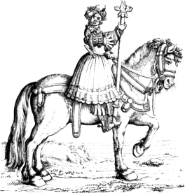
From No. 15. With Burgmair’s mark.
Almost every one of the cuts that contains Burgmair’s mark, in the
Triumphal Procession, is designed with great spirit, and has evidently
been drawn by an artist who had a thorough command of his pencil. His
horses are generally strong and heavy, and the men on their backs of a
stout and muscular form. The action of the horses seems natural; and the
indications of the joints and the drawing of the hoofs—which are
mostly low and broad—evidently show that the artist had paid some
attention to the structure of the animal. There are, however,
a considerable number of cuts where both men and horses appear
remarkable for their leanness; and in which the hoofs of the horses are
most incorrectly drawn, and the action of the animals represented in a
manner which is by no means natural. Though it is not unlikely
295
that Hans Burgmair was capable of drawing both a stout, heavy horse, and
a long-backed, thin-quartered, lean one, I cannot persuade myself
that he would, in almost every instance, draw the hoofs and legs of the
one correctly, and those of the other with great inaccuracy. The cut on
the opposite page and the five next following, of single figures, copied
on a reduced scale from the Triumphs, will exemplify the preceding
observations. The numbers are those printed on the cuts, and they all,
except one, appear to correspond with the French descriptions in the
text. The preceding cut is from that marked No. 15. The mark
of Hans Burgmair is on the ornamental breast-plate, as an English
saddler would call it, that passes across the horse’s chest. This
figure, in the original cut, carries a tablet suspended from a staff, of
which the lower part only is perceived in the copy, as it has not been
thought necessary to give the tablet and a large scroll which were
intended to contain inscriptions.V.76 The description of the subject is to
the following effect: “After the chase, comes a figure on horseback,
bearing a tablet, on which shall be written the five charges of the
court,—that
296
is, of the butler, the cook, the barber, the tailor, and the shoemaker;
and Eberbach shall be the under-marshal of the household, and carry the
tablet.”
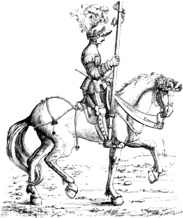
From No. 65. Apparently not drawn by Burgmair.
The cut on page 295 is a reduced copy of a figure, the last, in
No. 65, which is without Burgmair’s mark. In the original the
horseman bears a banner, having on it the arms of the state or city
which he represents; and at the top of the banner a black space whereon
a name or motto ought to have been engraved. The original cut contains
three figures; and, if the description can be relied on, the banners
which they bear are those of Fribourg, Bregentz, and Saulgau. The other
two horsemen and their steeds in No. 65 are still more unlike those
in the cuts which contain Burgmair’s mark.
From No. 33. With Burgmair’s mark.
The above cut is a reduced copy of a figure on horseback in
No. 33. Burgmair’s mark, an H and a B, may be perceived on the
trappings of the horse. This figure, in the original, bears a large
tablet, and he is followed by five men on foot carrying flails, the
swingelsV.77 of which are of leather. The description of the
cut,—which
297
forms the first of seven representing the dresses and arms of combatants
on foot,—is as follows: “Then shall come a person mounted and
properly habited like a master of arms, and he shall carry the tablet
containing the rhyme. Item, Hans Hollywars shall be the master of arms,
and his rhyme shall be this effect: that he has professed the noble
practice of arms at the court, according to the method devised by the
emperor.”V.78
The following is a reduced copy of a figure in the cut erroneously
numbered 83, but which corresponds with the description that refers to
84. This figure is the last of the three, who, in the original, are
represented bearing banners containing the arms of Malines, Salins and
Antwerp.
From No. 83. Apparently not drawn by Burgmair.
298
The following figure, who is given with his rhyme-tablet in full, is
copied from the cut numbered 27. This jovial-looking personage, as we
learn from the description, is the Will Somers of Maximilian’s court,
and he figures as the leader of the professed jesters and the natural
fools, who
299
appear in all ages to have been the subjects of “pleasant mirth.” The
instructions to the painter are as follows: “Then shall come one on
horseback habited like a jester, and carrying a rhyme-tablet for the
jesters and natural fools; and he shall be Conrad von der Rosen.” The
fool’s cap with the bell at the peak, denoting his profession, is
perceived hanging on his left shoulder; and on the breast-plate,
crossing the chest of the horse, is Burgmair’s mark.
From No. 27. With Burgmair’s mark.
300
The figure on page 299 of a horseman, bearing the banner of Burgundy,
is from the cut numbered 74. The drawing both of rider and horse is
extremely unlike the style of Burgmair as displayed in those cuts which
contain his mark. Burgmair’s men are generally stout, and their
attitudes free; and they all appear to sit well on horseback. The
present lean, lanky figure, who rides a horse that seems admirably
suited to him, cannot have been designed by Burgmair, unless he was
accustomed to design in two styles which were the very opposites of each
other; the one distinguished by the freedom and the boldness of the
drawing, the stoutness of the men, and the bulky form of the horses
introduced; and the other remarkable for laboured and stiff drawing,
gaunt and meagre men, and leggy, starved-like cattle. The whole of the
cuts from No. 57 to No. 88, inclusive,—representing,
except three,V.79 men on horseback bearing the banners of the kingdoms
and states either possessed or claimed by the emperor,—are
designed in the latter style. Not only are the men and horses
represented according to a different standard, but even the very ground
is indicated in a different manner; it seems to abound in fragments of
stones almost like a Macadamized road after a shower of rain. There is
indeed no lack of stones on Burgmair’s ground, but they appear more like
rounded pebbles, and are not scattered about with so liberal a hand as
in the cuts alluded to. In not one of those cuts which are so unlike
Burgmair’s is the mark of that artist to be found; and their general
appearance is so unlike that of the cuts undoubtedly designed by him,
that any person in the least acquainted with works of art will, even on
a cursory examination, perceive the strongly marked difference.
No. 74. Apparently not drawn by Burgmair.
The following cut is a reduced copy of that numbered 57; and which is
the first of those representing horsemen bearing the banners of the
several kingdoms, states, and cities subject to the house of Austria or
to which Maximilian laid claim. It is one of the most gorgeous of the
series; but, from the manner in which the horses and their riders are
represented, I feel convinced that it has not been drawn by
Burgmair. The subject is thus described in the emperor’s directions
prefixed to the volume: “One on horseback bearing the banner of the arms
of Austria; another on horseback bearing the old Austrian arms; another
also on horseback bearing the arms of Stiria.” On the parts which are
left black in the banners it had been intended to insert inscriptions.
The instructions to the painter for this part of the procession are to
the following effect: “One on horseback bearing on a lance a
rhyme-tablet. Then the arms of the hereditary dominions of the house of
Austria on banners, with their shields, helms, and crests, borne by
horsemen; and the
301
banners of those countries in which the emperor has carried on war shall
be borne by riders in armour; and the painter shall vary the armour
according to the old manner. The banners of those countries in which the
emperor has not carried on war shall be borne by horsemen without
armour, but all splendidly clothed, each according to the costume of the
country he represents. Every one shall wear a laurel wreath.”
No. 57. Apparently not drawn by Burgmair.
The cut on the next page is copied from that numbered 107, but which
accords with the description of No. 122. The subject is described
by the emperor as follows: “Then shall come riding a man of Calicut,
naked, except his loins covered with a girdle, bearing a rhyme-tablet,
on which shall be inscribed these words, ‘These people are the subjects
of the famous crowns and houses heretofore named.’” In this cut the mark
of Burgmair is perceived on the harness on the breast of the elephant.
There are two other cuts of Indians belonging to the same part of the
procession, each of which also contains Burgmair’s mark.
No. 107. With Burgmair’s mark.
The cuts which were to follow the Indians and close the procession
were the baggage-waggons and camp-followers of the army. Of those there
are five cuts in the work published in 1796, and it is evident that some
are wanting, for the two which may be considered as the
302
first and last of those five, respectively require a preceding and a
following cut to render them complete; and there are also one or two
cuts wanting to complete the intermediate subjects. Those cuts are
referred to in the French description under Nos. 125 to 129, but they
are numbered 129, 128, 110, 111, 125. The last three, as parts of a
large subject, follow each other as the numbers are here placed; and
though the right side of No. 110 accords with the left of
No. 128, inasmuch as they each contain the half of a tree which
appears complete when they are joined together, yet there are no horses
in No. 128 to draw the waggon which is seen in No. 110. The
order of Nos. 110, 111, and 125, is easily ascertained; a horse at
the left of No. 110 wants a tail which is to be found in
No. 111; and the outline of a mountain in the left of No. 111
is continued in the right of No. 125. From the back-grounds, trees,
and figures in those cuts I am very much inclined to think that they
have been engraved from designs by Albert Durer, if he did not actually
draw them on the block himself. There is no mark to be found on any of
them; and they are extremely unlike any cuts which are undoubtedly of
Burgmair’s designing, and they are
303
decidedly superior to any that are usually ascribed to Hans Schaufflein.
The following, which is a reduced copy of that numbered 110, will
perhaps afford some idea of those cuts, and enable persons who are
acquainted with Durer’s works to judge for themselves with respect to
the probability of their having been engraved from his designs. One or
two of the other four contain still more striking resemblances of
Durer’s style.
No. 110. Probably drawn by Albert Durer.
Besides the twelve cuts which, in the French preface to the Triumphal
Procession of Maximilian, are said not to correspond with the original
drawings, there are also six others which the editor says are not to be
found in the original designs, and which he considers to have been
additions made to the work while it was in the course of engraving.
Those six cuts are described in an appendix, where their numbers are
said to be from 130 to 135. In No. 130 the principal figures are a
king and queen, on horseback, supposed to be intended for Philip the
Fair, son of the Emperor Maximilian, and his wife Joanna of Castile.
This cut is very indifferently executed, and has evidently been designed
by the artist who made the drawings for the
304
questionable cuts containing the complicated locomotive carriages,
mentioned at page 290. No. 131, a princess on horseback,
accompanied by two female attendants also on horseback, and guards on
foot, has evidently been designed by the same artist as No. 130.
These two, I am inclined to think, belong to some other work. Nos.
132, 133, and 134, are from the designs of Hans Burgmair, whose mark is
to be found on each; and there can be little doubt of their having been
intended for Maximilian’s Triumphal Procession. They form one continuous
subject, which represents twelve men, habited in various costume,
leading the same number of horses splendidly caparisoned. A figure
on horseback bearing a rhyme-tablet leads this part of the procession;
and above the horses are large scrolls probably intended to contain
their names, with those of the countries to which they belong. The cut
on the opposite page is a reduced copy of the last, numbered 135, which
is thus described in the appendix: “The fore part of a triumphal car,
drawn by four horses yoked abreast, and managed by a winged female
figure who holds in her left hand a wreath of laurel.” There is no mark
on the original cut; but from the manner in which the horses are drawn
it seems like one of Burgmair’s designing.
That the cuts of the Triumphal Procession of Maximilian were engraved
by different persons is certain from the names at their backs; and I
think the difference that is to be perceived in the style of drawing
renders it in the highest degree probable that the subjects were
designed, or at least drawn on the wood, by different artists. I am
inclined to think that Burgmair drew very few besides those that contain
his mark; the cuts of the banner-bearers I am persuaded are not of his
drawing; a third artist, of inferior talent, seems to have made the
drawings of the fanciful cars containing the emperor and his family; and
the five cuts of the baggage-waggons and camp followers, appear, as I
have already said, extremely like the designs of Albert Durer. The best
engraved cuts are to be found among those which contain Burgmair’s mark.
Some of the banner-bearers are also very ably executed, though not in so
free or bold a manner; which I conceive to be owing to the more laboured
style in which the subject has been drawn on the block. The mechanical
subjects, with their accompanying figures, are the worst engraved as
well as the worst drawn of the whole. The five cuts which I suppose to
have been designed by Albert Durer are engraved with great spirit, but
not so well as the best of those which contain the mark of Burgmair.
No. 135. Apparently designed by Burgmair.
Though there are still in existence upwards of a hundred of the
original blocks designed by Albert Durer, and upwards of three hundred
designed by the most eminent of his contemporaries, yet a person who
professes to be an instructor of the public on subjects of art made the
following statement before the Select Committee of the House of
305
Commons on Arts and their Connexion with Manufactures, appointed in
1835. He is asked, “Do you consider that the progress of the arts in
this country is impeded by the want of protection for new inventions of
importance?” and he proceeds to enlighten the committee as follows.
“Very much impeded. Inventions connected with the arts of design, of new
instruments, or new processes, for example, are, from the ease with
which they can be pirated, more difficult of protection than any other
inventions whatever. Such protection as the existing laws afford is
quite inadequate. I cannot better illustrate my meaning, than by
mentioning the case of engraving in metallic relief, an art which
is supposed to have existed three or four centuries ago; and the
re-discovery of which has long been a desideratum among artists. Albert
Durer, who was both a painter and engraver, certainly possessed this
art, that is to say, the art of transferring his designs, after they
had been sketched on paper, immediately into metallic relief, so
that they might be printed along with letter-press. At present, the only
sort of engravings you can print along with letter-press are wood
engravings, or stereotype casts from wood engravings; and then those
engravings are but copies, and often very rude copies, of their
originals; while, in the case of Albert Durer, it is QUITE CLEAR that it was his own identical designs
that were transferred into the metallic relief. Wood engravings,
too, are limited in point of size, because they can only be executed
on box-wood, the width of which is very small; in fact, we have no
wood engravings on a single block of a larger size than octavo: when the
engraving is larger, two or three blocks are joined together; but this
is attended with so much difficulty and inconvenience, that it is seldom
done. From the
306
specimens of metallic relief engraving, left us by Albert Durer,
there is every reason to infer that he was under no such limitation;
that he could produce plates of any size.”V.80 This statement abounds
in errors, and may justify a suspicion that the person who made it had
never seen the cuts designed by Albert Durer which he pretends were
executed in “metallic relief.” At the commencement he says that the art
of engraving in metallic relief is supposed to have existed three
or four centuries ago; and immediately afterwards he asserts that Albert
Durer “certainly possessed this art;” as if by his mere word he could
convert a groundless fiction into a positive fact. When he made this
confident assertion he seems not to have been aware that many of the
original pear-tree blocks of the cuts pretendedly executed in metallic
relief are still in existence; and when, speaking of the difficulty of
getting blocks of a larger size than an octavo, he says, “From the
specimens of metallic relief engraving, left us by Albert Durer, there
is every reason to infer that he was under no such
limitation,—that he could produce plates of any size,” he affords
a positive proof that he knows nothing of the subject on which he has
spoken so confidently. Had he ever examined the large cuts engraved from
Durer’s designs, he would have seen, in several, undeniable marks of the
junction of the blocks, proving directly the reverse of what he asserts
on this point. What he says with respect to the modern practice of the
art is as incorrect as his assertions about Albert Durer’s engraving in
metallic relief. Though it is true that there are few modern engravings
on box-wood of a larger size than octavo, it is not true that the
forming of a large block of two or more pieces is attended with much
difficulty, and is seldom done. The making of such blocks is now a
regular trade; they are formed without the least difficulty, and
hundreds of cuts on such blocks are engraved in London every year.V.81
When he says that wood engravings “can only be made on box-wood,” he
gives another proof of his ignorance of the subject. Most of the earlier
wood engravings were executed on blocks of pear-tree or crab; and even
at the present time box-wood is seldom used for the large cuts on
posting-bills. In short, every statement that this person has made on
the subject of wood and pretended metallic relief engraving is
incorrect; and it is rather surprising that none of the
307
members of the committee should have exposed his ignorance. When such
persons put themselves forward as the instructors of mechanics on the
subject of art, it cannot be a matter of surprise that in the arts as
applied to manufactures we should be inferior to our continental
neighbours.
The art of imitating drawings—called chiaro-scuro—by
means of impressions from two or more blocks, was cultivated with great
success in Italy by Ugo da Carpi about 1518. The invention of this art,
as has been previously remarked, is ascribed to him by some writers, but
without any sufficient grounds; for not even the slightest evidence has
been produced by them to show that he, or any other Italian artist, had
executed a single cut in this manner previous to 1509, the date of a
chiaro-scuro wood engraving from a design by Lucas Cranach. Though it is
highly probable that Ugo da Carpi was not the inventor of this art, it
is certain that he greatly improved it. The chiaro-scuros executed by
him are not only superior to those of the German artists, who most
likely preceded him in this department of wood engraving, but to the
present time they remain unsurpassed. In the present day Mr. George
Baxter has attempted to extend the boundaries of this art by calling in
the aid of aquatint for his outlines and first ground, and by copying
the positive colours of an oil or water-colour painting. Most of Ugo da
Carpi’s chiaro-scuros are from Raffaele’s designs, and it is said that
the great painter himself drew some of the subjects on the blocks.
Independent of the excellence of the designs, the characteristics of Da
Carpi’s chiaro-scuros are their effect and the simplicity of their
execution; for all of them, except one or two, appear to have been
produced from not more than three blocks. The following may be mentioned
as the principal of Da Carpi’s works in this style. A Sibyl reading
with a boy holding a torch, from two blocks, said by Vasari to be the
artist’s first attempt in this style; Jacob’s Dream; David cutting off
the head of Goliah; the Death of Ananias; Giving the Keys to Peter; the
miraculous Draught of Fishes; the Descent from the Cross; the
Resurrection; and Æneas carrying away his father Anchises on his
shoulders from the fire of Troy;V.82 all the preceding from the designs
of Raffaele. Among the subjects designed by other masters are St. Peter
preaching, after Polidoro; and Diogenes showing the plucked cock in
ridicule of Plato’s definition of man, “a two-legged animal without
feathers,” after Parmegiano.
308
The latter, which is remarkably bold and spirited, is from four blocks;
and Vasari says that it is the best of all Da Carpi’s chiaro-scuros.
Many of Da Carpi’s productions in this style were copied by Andrea
Andreani of Milan, about 1580. That of Æneas carrying his father on his
shoulders was copied by Edward Kirkall, an English engraver in 1722.
Kirkall’s copy is not entirely from wood-blocks, like the original; the
outlines and the greater part of the shadows are from a copper-plate
engraved in mezzotint, in a manner similar to that which has more
recently been adopted by Mr. Baxter in his picture-printing.
Lucas Dammetz, generally called Lucas van Leyden, from the place of
his birth, was an excellent engraver on copper, and in this branch of
art more nearly approached Durer than any other of his German or Flemish
contemporaries. He is said to have been born at Leyden in 1496; and, if
this date be correct, he at a very early age gave decided proofs of his
talents as an engraver on copper. One of his earliest prints, the monk
Sergius killed by Mahomet, is dated 1508, when he was only fourteen
years of age; and at the age of twelve he is said to have painted, in
distemper, a picture of St. Hubert which excited the admiration of
all the artists of the time. Of his numerous copper-plate engravings
there are no less than twenty-one which, though they contain no date,
are supposed to have been executed previously to 1508. As several of
those plates are of very considerable merit, it would appear that Lucas
while yet a boy excelled, as a copper-plate engraver, most of his German
and Dutch contemporaries. From 1508 to 1533, the year of his death, he
appears to have engraved not less than two hundred copper-plates; and,
as if these were not sufficient to occupy his time, he in the same
period painted several pictures, some of which were of large size. He is
also said to have excelled as a painter on glass; and like Durer,
Cranach, and Burgmair, he is ranked among the wood engravers of that
period.
The wood-cuts which contain the mark of Lucas van Leyden, or which
are usually ascribed to him, are not numerous; and, even admitting them
to have been engraved by himself, the fact would contribute but little
to his fame, for I have not seen one which might not have been executed
by a professional “formschneider” of very moderate abilities. The total
of the wood-cuts supposed to have been engraved by him does not exceed
twenty. The following is a reduced copy of a wood-cut ascribed to Lucas
van Leyden, in the Print Room of the British Museum, but which is not in
Bartsch’s Catalogue, nor in the list of Lucas van Leyden’s engravings in
Meusel’s Neue Miscellaneen. Though I very much question if the original
cut were engraved by Lucas himself, I have no doubt of its being
from his design. It represents the death of Sisera; and, with a noble
contempt of the unity of time, Jael is seen giving Sisera a drink of
milk, driving the nail into his head, and
309
then showing the body,—with herself in the act of driving the
nail,—to Barak and his followers: the absurdity of this threefold
action has perhaps never been surpassed in any cut ancient or modern.
Sir Boyle Roach said that it was impossible for any person,
except a bird or a fish, to be in two places at once; but
here we have a pictorial representation of a female being in no less
than three; and in one of the localities actually pointing out to
certain persons how she was then employed in another.
Heineken, in his account of engravers of the Flemish school, has
either committed an egregious mistake, or expressed himself with
intentional ambiguity with respect to a wood-cut printed at Antwerp, and
which he saw in the collections of the Abbé de Marolles. His notice of
this cut is as follows: “I found in the collections of the Abbé de
Marolles, in the cabinet of the King of France, a detached
310
piece, which, in my opinion, is the most ancient of the wood engravings
executed in the Low Countries which bear the name of the artist. This
cut is marked, Gheprint t’ Antwerpen by my Phillery de
figursnider—Printed at Antwerp, by me Phillery, the engraver
of figures. It serves as a proof that the engravers of moulds were, at
Antwerp, in that ancient time, also printers.”V.83
In this vague and ambiguous account, the writer gives us no idea of
the period to which he refers in the words “cet ancien tems.” If he
means the time between the pretended invention of Coster, and the period
when typography was probably first practised in the Low
Countries,—that is, from about 1430 to 1472,—he is wrong,
and his statement would afford ground for a presumption that he had
either examined the cut very carelessly, or that he was so superficially
acquainted with the progressive improvement of the art of wood engraving
as to mistake a cut abounding in cross-hatching, and certainly executed
subsequent to 1524, for one that had been executed about seventy years
previously, when cross-hatching was never attempted, and when the
costume was as different from that of the figures represented in the cut
as the costume of Vandyke’s portraits is dissimilar to Hogarth’s. The
words “graveurs de moules,” I have translated literally
“engravers of moulds,” for I cannot conceive what else Heineken can
mean; but this expression is scarcely warranted by the word
“figuersnider” on the cut, which is almost the same as the German
“formschneider;” and whatever might be the original meaning of the word,
it was certainly used to express merely a wood engraver. Compilers of
Histories of Art, and Dictionaries of Painters and Engravers, who
usually follow their leader, even in his slips, as regularly as a flock
of sheep follow the bell-wether through a gap, have disseminated
Heineken’s mistake, and the antiquity of “Phillery’s”
wood-engraving is about as firmly established as Lawrence Coster’s
invention of typography. One of those “straightforward” people has
indeed gone rather beyond his authority; for in a “Dictionary of the
Fine Arts,” published in 1826, we are expressly informed that
“Phillery, who lived near the end of the fourteenth century, was the
first engraver on wood who practised in the Netherlands.”V.84 It is
thus that
311
error on the subject of art, and indeed on every other subject, is
propagated: a writer of reputation makes an incorrect or an
ambiguous statement; other writers adopt it without examination, and not
unfrequently one of that class whose confidence in deciding on a
question is in the inverse ratio of their knowledge of the subject,
proceeds beyond his original authority, and declares that to be certain
which previously had only been doubtfully or obscurely expressed. In
Heineken’s notice of this cut there is an implied qualification under
which he might screen himself from a charge of incorrectness with
respect to the time of its execution, though not from a charge of
ambiguity. He says that, in his opinion, it is “the most ancient of the
wood engravings executed in the Low Countries which bear the name of
the artist;” and with this limitation his opinion may be correct,
although the cut were only engraved in 1525 or 1526; for I am not aware
of any wood engraving of an earlier date, executed in the Low Countries,
that contains the name of the artist, though there are several
which contain the artist’s mark. It also may be argued that the words
“cet ancien tems” might be about as correctly applied to
designate the year 1525 as 1470: if, however, he meant the first of
those dates, he has expressed himself in an equivocal manner, for he is
generally understood to refer the cut to a considerably earlier period.
It has been indeed conjectured that Heineken, in speaking of this cut,
might intentionally express himself obscurely, in order that he might
not give offence to his friend Monsieur Mariette, who is said to have
considered it to be one of the earliest specimens of wood engravings
executed in the Low Countries. This is, however, without any sufficient
reason, merely shifting the charge of ignorance, with respect to the
difference of style in wood engravings of different periods, from
Heineken to Monsieur Mariette. As there is no evidence to show that the
latter ever expressed any such opinion as that ascribed to him
respecting the antiquity of the cut in question, Heineken alone is
answerable for the account contained in his book. Impressions of the cut
by “Phillery” are not of very great rarity; there are two in the
Print Room at the British Museum, and from one of them the reduced copy
in the following page has been carefully made.
Any person, however, slightly acquainted with the progress of wood
engraving could scarcely fail to pronounce that the original of this cut
must have been executed subsequent to 1500, and in all probability
subsequent to the cuts of the Triumphal Procession of Maximilian, to the
general style of which, so far as relates to the manner of engraving, it
bears considerable resemblance. The costume of the figures, too, also
proves that it does not belong to the fifteenth century;
312
and on carefully examining the inscription, a person accustomed to
the old German or Dutch characters would be more likely to read
“Willem” than “Phillery” as the name of the artist. To one
of the impressions in the British Museum a former owner, after
extracting Heineken’s account, has appended the following remark: “This
is the print above described. There seems to be an inconsiderable
mistake in the name, which I take to be D’villery.” It is to be observed
that in the original, as in the preceding copy, the inscription is
engraved on wood, and not set up in type; and that consequently the
first character of the doubtful name is rather indistinct. It is however
313
most probably a W; and the last is certainly an m, with a
flourish at its tail. The intermediate letters ille are plain
enough, and if the first be supposed to be a W, and the last an
m, we have the name Willem,—a very probable prenomen
for a Dutch wood engraver of the sixteenth century. The inscription when
carefully examined is literally as follows: “Gheprint Tantwerpen Bij
mij Willem de Figuersnider.” Heineken’s mistake of Phillery
for Willem, or William, and thus giving a heretofore unheard-of
name to the list of artists, is not unlike that of Scopoli the
naturalist, who, in one of his works, has commemorated “Horace Head” as
a London bookseller.V.85
Though the cut which bears the name of the supposed “Phillery”
contains internal evidence of its not having been engraved in the
fifteenth century, there is yet further reason to believe that it is
merely a copy of part of a cut of the same size by a Swiss artist of the
name of Urse Graff, which is dated 1524. There is an impression of Urse
Graff’s cut V.86 in the Print Room of the British Museum; in the
fore-ground are the figures which have obviously been copied by
Willem de Figuersnider, alias Phillery, and immediately
behind the middle figure, who holds in his right hand a large Swiss
espadon, is a leafless tree with a figure of Death clinging to the upper
part of the trunk, and pointing to a hour-glass which he holds in his
left hand. A bird, probably intended for a raven, is perched above
the hour-glass; and on the trunk of the tree, near to the figure of
Death, is Urse Graff’s mark with the date as is here given. The
back-ground presents a view of a lake, with buildings and mountains on
the left. The general character of Urse Graff’s subject is Swiss, both
in the scenery and figures; and the perfect identity of the latter with
those in the cut “printed at Antwerp by William the figure-cutter”
proves, beyond the possibility of a doubt, that one of those two artists
has copied the work of the other. Urse Graff’s subject, however, is
complete, and corresponds both in the landscape and in the costume of
the figures with the country of the artist; while the cut of William of
Antwerp represents merely an unrelieved group of figures in the costume
of Switzerland. Urse Graff was an artist of reputation in his time; of
“Willem,” who was probably only an engraver of the designs of others,
nothing more is known beyond what is afforded by the single cut in
question. From these circumstances,
314
though it cannot be positively decided which of those cuts is the
original, it is almost morally certain that the Flemish figure-cutter
has copied the work of the Swiss artist.—Urse Graff resided at
Basle, of which city he was probably a native. In one of his engravings
with the date 1523, he describes himself as a goldsmith and die-sinker.
Wood-cuts containing his mark are not very common, and the most of them
appear to have been executed between 1515 and 1528. A series of
wood-cuts of the Passion of Christ, designed in a very inferior manner,
and printed at Strasburg in 1509, are sometimes ascribed to him on
account of their being marked with the letters V. G., which some
writers have supposed to be the mark of an artist named Von Gamperlin.
Professor Christ, in his Dictionary of Monograms, says that he can find
nothing to determine him in favour of the name Gamperlin; and that he is
rather inclined to think that those letters are intended for the name
Von Goar, which he believes that he has deciphered on an engraving
containing this mark. The mark of Urse Graff, a V and a G
interlaced, occurs in the ornamented border of the title-page of several
books printed at Basle, and amongst others on the title of a quarto
edition of Ulrich Hutten’s Nemo, printed there by Frobenius in 1519. At
the end of this edition there is a beautifully-designed cut of the
printer’s device, which is probably the work of the same artist.V.87
A painter, named Nicholas Emanuel Deutsch, a contemporary of Urse
Graff, and who resided at Bern, is said, by Sandrart, to have been of a
noble English family, and the same writer adds that he left his own
country on account of his religion. The latter statement, however, is
not likely to be correct, for there are wood-cuts, with this artist’s
mark, dated “Bern, 1518;” which was before the persecution in England on
account of the doctrines of Luther had commenced. In J. R. Füssli’s
Dictionary of Artists it is stated that he was of a French family, of
the name of Cholard, but that he was born at Bern in 1484, and died
there in 1530. He was a poet as well as a painter, and held one of the
highest offices in the magistracy of Bern.
Within the first thirty years of the sixteenth century the practice
of illustrating books with wood-cuts seems to have been more general
than at any other period, scarcely excepting the present; for though
within the last eight or ten years an immense number of wood-cuts have
been executed in England and France, yet wood engravings at the time
referred to were introduced into a greater variety of books, and the art
was more generally practised throughout Europe. In
315
modern German and Dutch works wood engravings are sparingly introduced;
and in works printed in Switzerland and Italy they are still more rarely
to be found. In the former period the art seems to have been very
generally practised throughout Europe, though to a greater extent, and
with greater skill, in Germany than in any other country. The wood-cuts
which are to be found in Italian books printed between 1500 and 1530 are
mostly meagre in design and very indifferently engraved; and for many
years after the German wood engravers had begun to give variety of
colour and richness of effect to their cuts by means of cross-hatchings,
their Italian contemporaries continued to adhere to the old method of
engraving their figures, chiefly in outline, with the shadows and the
folds of the draperies indicated by parallel lines. These observations
relate only to the ordinary wood engravings of the period, printed in
the same page with type, or printed separately in the usual manner of
surface printing at one impression. The admirable chiaro-scuros of Ugo
da Carpi, printed from two or more blocks, are for effect and general
excellence the most admirable specimens of this branch of the art that
ever have been executed; they are as superior to the chiaro-scuros of
German artists as the usual wood engravings of the latter excel those
executed in Italy during the same period.
In point of drawing, some of the best wood-cuts executed in Italy in
the time of Albert Durer are to be found in a folio work entitled
Triompho di Fortuna, written by Sigismond Fanti, and printed at Venice
in 1527.V.88 The subject of this work, which was licensed by Pope
Clement VII, is the art of fortune-telling, or of answering all kinds of
questions relative to future events. The volume contains a considerable
number of wood-cuts; some designed and executed in the very humblest
style of wood engraving, and others, which appear to have been drawn on
the block with pen-and-ink, designed with great
316
spirit. The smallest and most inferior cuts serve as illustrations to
the questions, and an idea may be formed of them from the three here
given, which occur under the question: “Qual fede o legge sia di queste
tre la buona, o la Christiana, l’Hebrea, o quello di
Mahumeto?”V.89 In English: “Which of these three religions is the
best, the Christian, the Jewish, or the Mahometan?” Several larger cuts
are executed in a dry hard style, and evidently drawn by a person very
inferior to the artist who designed the cuts executed in the manner of
pen-and-ink drawings. The following is a fac-simile of one of the
latter. It is entitled “Fortuna de Africo,” in a series of twelve,
intended for representations of the winds.
The following cut, which appears in folio 38, is intitled “Michael
Fiorentino,”—Michael Angelo; and it certainly conveys no bad idea
317
of the energetic manner in which that great artist is said to have used
his mallet and chisel when engaged on works of sculpture. This cut,
however, is made to represent several other sculptors besides the great
Florentine; it is repeated seven times in the subsequent pages, and on
each occasion we find underneath it a different name. The late
T. Stothard, R.A. was of opinion that wood engraving was best
adapted to express pen-and-ink drawing, and that the wood engraver
generally failed when he attempted more. His illustrations of Rogers’s
poems, engraved on wood by Clennell and Thompson, are executed in a
similar style to that of the following specimen, though with greater
delicacy.
Certain wood-cuts with the mark A. G., executed towards the
conclusion of the fifteenth century, have been ascribed to an artist
named Albert Glockenton. Bartsch, however, says that the name of the
artist is unknown; and he seems to consider that Sandrart had merely
conjectured that those letters might represent the name Albert
Glockenton. For no better reason the letters I. V. on a tablet,
with two pilgrim’s-staffs crossed between them, which are to be found on
several old chiaro-scuro wood engravings, have been supposed to
represent the name, John Ulric Pilgrim. This name appears to be a pure
invention of some ingenious expounder of monograms, for there is not the
slightest evidence, that I am aware of, to show that any artist of this
name ever
318
lived. The chiaro-scuros with this mark were probably executed in the
time of Durer, but none of them contains a date to establish the fact.
Heineken considers them to have been the productions of a German artist;
and he refers to them in proof of the art of chiaro-scuro having been
practised in Germany long before the time of Ugo da Carpi. It is,
however, highly questionable if they are of an earlier date than 1518;
and it is by no means certain that the artist was a German. By some
persons he has been supposed to have been the inventor of chiaro-scuro
engraving, on no better grounds, it would seem, than that his pieces are
without a date.
Next to the Germans, in the time of Albert Durer, the Dutch and
Flemings seem to have excelled in the art of wood engraving; but the
cuts executed in Holland and Flanders are generally much inferior to
those designed and engraved by German artists. In a considerable number
of Dutch wood engravings, of the period under review, I have
observed an attempt to combine something like the effect of
cross-hatching and of the dotted manner mentioned at page 232 as having
been frequently practised by French wood engravers in the early part of
the sixteenth century. In a series of cuts from a Dutch prayer-book,
apparently printed between 1520 and 1530, this style of engraving is
frequently introduced. Where a German artist would have introduced lines
crossing each other with great regularity, the Dutch wood engraver has
endeavoured to attain his object by irregularly picking out portions of
the wood with the point of his graver; the effect, however, is not good.
In the border surrounding those cuts, a Dance of Death is
represented, consisting of several more characters than are to be found
in the celebrated work ascribed to Holbein, but far inferior in point of
design and execution.
An artist, named John Walter van Assen, is usually mentioned as one
of the best Dutch wood engravers or designers of this period. Nothing
further is known of him than that he lived at Amsterdam about 1517. The
mark supposed to be Van Assen’s is often ascribed by expounders of
monograms to another artist whom they call Werner or Waer van
Assanen.
A considerable number of French works, printed in the time of Albert
Durer, contain wood engravings, but few of them possess much merit when
compared with the more highly finished and correctly drawn productions
of the German school of the same period. The ornamental borders,
however, of many missals and prayer-books, which then issued in great
numbers from the Parisian press, frequently display great beauty. The
taste for surrounding each page with an ornamental border engraved on
wood was very generally prevalent in Germany, France, and Flanders at
that period, more especially in devotional works; and in the
319
former country, and in Switzerland, scarcely a tract was
printed—and the Lutheran controversy gave rise to many
hundreds—without an ornamental border surrounding the title. In
Germany such wood engravers as were chiefly employed in executing cuts
of this kind were called
Rahmen-schneiders—border-cutters,—as has been
previously observed at page 190. In England during the same period wood
engraving made but little progress; and there seems to have been a lack
of good designers and competent engravers in this country. The best cuts
printed in England in the time of Durer are contained in a manual of
prayers, of a small duodecimo size. On a tablet in the border of one of
the cuts—the Flight into EgyptV.90—I perceive the date 1523.
The total number of cuts in the volume is about a hundred; and under
each of the largest are four verses in English. Several of the smaller
cuts, representing figures of saints, and preceding the prayers for
their respective days, have evidently been designed by an artist of
considerable talent. As most of the wood-cuts which constitute the
ornaments or the illustrations of books printed at this period are
without any name or mark, it is impossible to ascertain the names of the
persons by whom they were designed or engraved.
The manner of wood engraving in intaglio so that the figures
appear white on a black ground, so frequently adopted by early Italian
wood engravers, was sometimes practised in Germany; and in one of the
earliest works containing portraits of the Roman emperors,V.91 copied
from ancient medals, printed in the latter country, the cuts are
executed in this style. The subject of the work is the lives of the
Roman emperors, written by Joannes Huttichius, and the portraits with
which it is illustrated are copied from medals in a collection which had
been formed by the Emperor Maximilian, the great promoter of wood
engraving in Germany. The first edition, in Latin, was printed by Wolff
Köpffel, at Strasburg, in 1525; and a second edition, in German, was
published at the same place in the succeeding year. The cut on the next
page, of the head of Nero, will afford an idea of the style in which the
portraits are
320
executed, and of the fidelity with which the artist has in general
represented the likeness impressed on the original medals.
Besides Durer, Burgmair, Cranach, and Schaufflein, there are several
other German painters of the same period who are also said to have
engraved on wood, and among the most celebrated of this secondary class
the following may be mentioned: Hans Sebald Behaim, previously noticed
at page 253; Albert Altdorffer; Hans Springinklee; and Hans Baldung
Grün. The marks of all those artists are to be found on wood-cuts
executed in the time of Durer; but I am extremely doubtful if those cuts
were actually engraved by themselves. If they were, I can only say
that, though they might be good painters and designers, they were very
indifferent wood engravers; and that their time in executing the
subjects ascribed to them must have been very badly employed. The common
working formschneider who could not execute them as well, must
have been a very ordinary wood-cutter, not to say
wood-engraver,—by the latter term meaning one who excels in
his profession, and not a mere cutter of lines, without skill or taste,
on box or pear-tree.
Albert Altdorffer was born at Ratisbon in 1480, and afterwards became
a magistrate of his native city. The engravings on wood and copper
containing his mark are mostly of a small size, and he is generally
known as one of the little masters of the German school of
engraving.V.92 Hans Springinklee was a painter of some eminence,
and according to Doppelmayer, as referred to by Bartsch, was a pupil of
Durer’s. His mark is to be found on several wood-cuts; and it occurs in
one of the illustrations in the Wise King. Hans Baldung Grün was born at
Gemund in Suabia, and studied at Nuremberg under Albert Durer. He
excelled as a painter; and the wood-cuts which contain his
321
mark are mostly designed with great spirit. The earliest wood engraving
that contains his mark is a frontispiece to a volume of sermons with the
date 1508; and the latest is a group of horses, engraved in a hard,
stiff manner, with the name “Baldung”
and the date 1534.V.93 He chiefly resided at Strasburg, where he died in
1545. He is mentioned by Durer, in his Journal, by the name of “Grün
Hannsen.”
We may here conveniently introduce fac-similes on a reduced scale of
two rather interesting wood engravings given by Dr. Dibdin in his
Bibliomania, and copied from an early folio volume, entitled
Revelationes cœlestes sanctæ Brigittæ de Suecia, printed at
Nuremberg by Anthony Köberger, M CCC
XXI. mensis Septembris, which some read 1500, on the 21st
of September, others 1521, in the month of September. The first of these
cuts is curious as representing the simplicity of an ancient reading
room, with its three-legged joint stool, such as is so prettily
described by Cowper, Task, I. v. 19; the other cut describes a
punishment
322
which is said to have been revealed to St. Bridget against those ladies
who have “ornamenta indecentia capitibus et pedibus, et reliquis
membris, ad provocandam luxuriam, et irritandum Deum, in strictis
vestibus, ostensione mamillarum, unctionibus, &c.” The artist is
unknown, but seems to be among the best of the Nuremberg school.
It cannot be reasonably doubted that Durer and several other German
painters of his time were accustomed to engrave their own designs on
copper; for in many instances we have the express testimony of their
contemporaries, and not unfrequently their own, to the fact.
Copper-plate engraving for about sixty years from the time of its
invention was generally practised by persons who were also painters, and
who usually engraved their own designs. Wood engraving, on the contrary,
from an early period was practised as a distinct profession by persons
who are never heard of as painters. That some of the early German
painters—of a period when “artists were more of workmen, and
workmen more of artists”V.94 than in the present day—might
engrave some of the wood-cuts which bear their marks, is certainly not
impossible; but it is highly improbable that all the wood-cuts which are
ascribed to them should have been executed by themselves. If any
wood-cuts were actually engraved by Durer, Cranach, Burgmair, and other
painters of reputation, I conceive that such cuts are not to be
distinguished by their superior execution from those engraved by the
professional formschneider and brief-maler of the day. The
best copper-plates engraved by Albert Durer can scarcely be surpassed by
the best copper-plate engraver of the present day,—that is,
supposing him to execute his work by the same means; while the best of
the wood-cuts which he is supposed to have engraved himself might be
readily executed by a score of modern
323
wood engravers if the subject were drawn for them on the block. In the
age of Durer the best wood-cuts are of comparatively large size, and are
distinguished more from the boldness and freedom of their design than
from any peculiar excellence of engraving: they display, in fact, rather
the talent of the artist than the skill of the workman.
Though wood engraving had very greatly improved from about the end of
the fifteenth century to the time of Durer’s decease, yet it certainly
did not attain its perfection within that period. In later years,
indeed, the workman has displayed greater excellence; but at no time
does the art appear to have been more flourishing or more highly
esteemed than in the reign of its great patron, the Emperor
Maximilian.